| おかしな転生IV 家出息子はフルーツ味 | |
| 古流望 | |
| TOブックス (2016) | |
異世界のある貧しき地の領主の息子・ペイストリー。実はその少年は前世ではお菓子職人だった。やがて、ペイスは持ち前の知略と、お菓子への愛情を武器に、内政に関わりながら、領地を変えていくことになる......。かわいい顔して交渉と剣と魔法に優れた少年が、最高のお菓子作りを夢見て世界を駆ける、王道スイーツ・ファンタジー！
イラスト：珠梨やすゆき YASUYUKI SYURI
デザイン：ヴェイア Veia
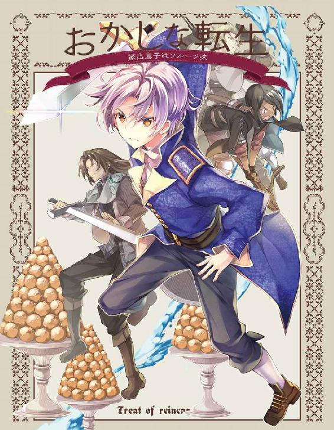
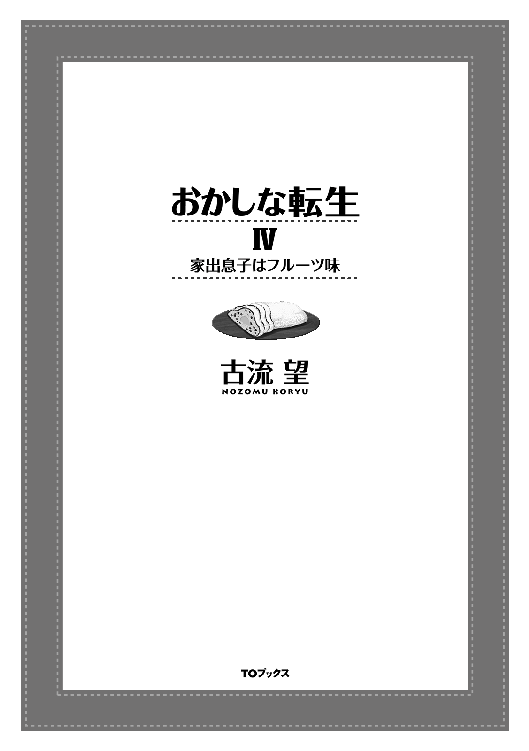
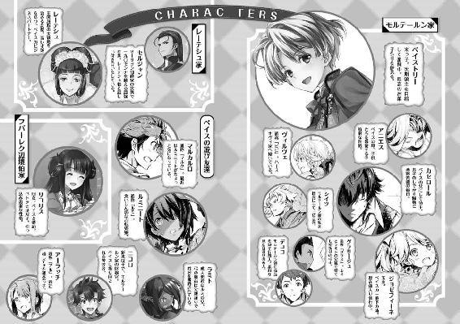
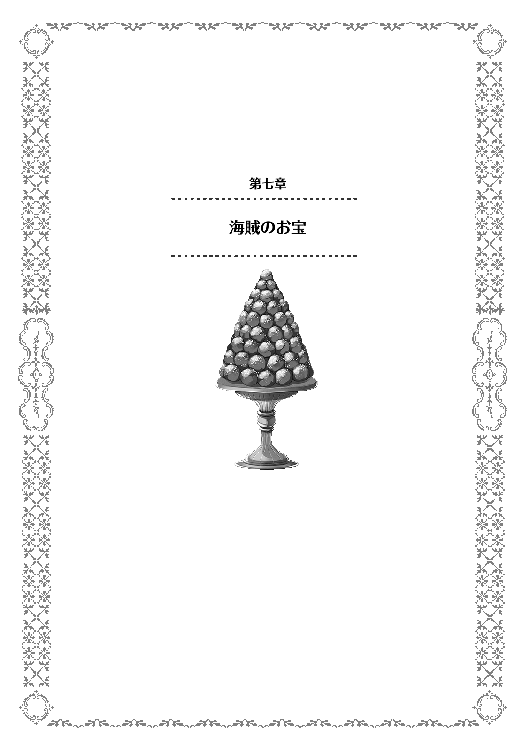
プラウリッヒ神王国は、南大陸に覇を唱える大国。
その中でも、南部と呼ばれる地域の、西部辺境。隣国と山脈を挟んで対峙し、乾燥した盆地の一帯を、モルテールン領と呼ぶ。
この土地は隣国との緩衝地帯という意味もあり、かつ非常に難治の土地である。その為、王家直轄でありながらも一切の手が加えられない不干渉地帯とも言える場所だった。
かつては、砂漠と見間違えるほどの乾燥地帯であった土地。これを、豊かで暮らしやすい、豊穣の地とする。
世の人が、不可能とまで言い切った難事業である。誰しもが、出来っこないとせせら笑い、無茶苦茶だと蔑んだ事業。
この地が、大戦の英雄に下賜されてから二十余年。
今日に至っては、モルテールン領は緑の大地となりつつある。
麦の穂は天を向いて勢いよく伸び、穀物庫はあふれんばかりに満ち、森が出来つつあり、村々を水路が通り、人々は明るい笑顔を絶やさない。
世の中の常識と呼べるものを、根底からひっくり返すとてつもない偉業である。
何故、斯様な成果を出せたのか。
多くの人材、大量の資源、うなるほどの財貨。常識ならば、必要なものだ。これらを用意し、運用したからこその成果なのか。
否。
モルテールン領の不可能を可能にしてみせたのは、たった一人の行いによる。
ペイストリー＝ミル＝モルテールン。
御年八才の銀髪の少年は、物心ついてこの方、常に騒動の中心にいた。
歩くトラブルメーカーとも言われる彼。
ある人が、何故そこまで面倒事を起こすのかと聞いた。
答えて曰く。
「やりたいことの為に必要なのです」
いつか彼が語った夢。最高の菓子を作る夢。領地を豊かにしてみせるという目的の為、必要なことなのだと少年は悪びれもせずに胸を張ったという。
そして、今日もまた新たな騒動を起こし続け、その度に彼は、夢への歩みを進めている。
「なるほど、確かに奇貨だ」
「でしょう」
神王国南部筆頭。南部閥領袖にして王国屈指の大家。レーテシュ伯爵家。
その伯爵家の当主であるレーテシュ女伯爵は、背中に護衛を侍らせつつも、執務室の中で男と向き合う。
本人曰く二十八歳。世間一般では三十路と言われる彼女の前に座るのは、屈強な男。
彼も彼とて、中央に役を持つ伯爵家の者であり、名をセルジャンと言う。
二人は、先般のお見合い以降、かなり親しい付き合いをしている。
お互いに尊重し合えるという、ある意味で大人な付き合い。友人以上、婚約者未満。
ありていに言えば恋人同士だ。
その二人が、執務室で何をしているのか。
艶めいた話をしているのか、という邪推もされようが、後ろに護衛を揃えてそのような真似をするほど、レーテシュ伯は恥じらいを無くしてはいない。
両者の手元には、ペイストリーを含むモルテールン家を入念に調べた、情報収集の結果があった。
「貴女が、この少年を警戒する理由は良く分かった。同時に、奇貨として手元に置いておきたいと考える理由も、だ。そして考えるに、貴女にもこのまま放置するつもりが無い、と思った」
「へえ、それだけで分かったの」
「ブリオシュ嬢が......いや、失礼。レーテシュ伯が、影響力を今後も持ち続ける為には、モルテールン領に〝勝手に〟豊かになられては面目丸つぶれだ。違うかな？」
「......ええ。その通りよ」
普段、レーテシュ伯だとかお館様だとか、女傑だとか女狐だとか行かず後家だとか呼ばれている女性にとって、何度呼ばれても、お嬢様呼ばわりは苦手だ。平静を取り繕いつつも、顔を少し赤らめているのは隠せない。
神王国において結婚適齢期は十代。二十歳も越えれば行き遅れと言われかねない社会にあって未婚女性とは、ほぼイコールで少女を指す。
レーテシュ伯に対し、未婚女性として接するセルジャンの態度は、いわば〝女の子〟に対する接し方だ。
女伯爵にとってみると、心のどこかで望んでいた嬉しさもあれば、客観的な自分に合わないと恥じる気持ちもあり。
普通に返事をするのには、どうしても間をあけてしまう。
「彼の地が発展すること自体は望ましいのか？」
「勿論。全体としての南部が豊かになるのは、レーテシュ伯の立場としては望ましいですわ」
「ならば、やはりレーテシュ伯の影響下で豊かになっているのだ、という面目を取り繕う必要がある。少なくとも、何がしかの手を差し伸べている様を明らかにしておかねば、レーテシュ伯の治政の質を問われかねない」
「その通りよ。頭が痛いわ、全く......」
派閥の長とは、下の者には利益と保護を与えねばならない。従属の対価だ。
利益の互助という意味で派閥が存在し、不当に収奪する長であれば離反を招く。良い領袖とは、派閥全体に利益をもたらす者でなくてはならないのだ。
派閥の為、派閥の力で派閥の利益を最大化し、かつそれを分配する。分配の差配は、長としての力量の見せどころでもあった。
だからこそ、派閥に属す、と見られていながら、勝手に大きくなられては困るのだ。長が無能と見られかねない。
親会社が何もしていないのに、子会社が独自に急成長した時。
子会社のトップは優秀であると評価を受ける。が、反対に親会社の人間は、手をこまねいていたことで無能の誹りを受けかねない。
或いは野球やサッカーで、チーム監督の指示も無く、勝手に練習していた子がメキメキと上達し、他の子が下手なままならばどうか。
監督は無能と言われかねない。むしろ、指示など受けずに勝手にやった方が上達する、と言われてしまえば、顔が丸つぶれだ。
それが続けば、監督の指示など誰も聞かなくなる恐れがある。
神王国の派閥領袖にも、同じような問題があった。
せめて、何がしかの助力をしたという面目が必要なのだ。
「内政面の援助は難しい......か」
「あの坊やのそれを上回る知恵を出せと？ 簡単に出来ることだとは思わないけど」
南大陸でも音に聞こえた難治のモルテールン領。
それを豊かにしてみせた手腕を超える知恵など、そうそうに出てくるものではない。出来るぐらいなら、始めから自分達がモルテールン領を手中にしていたことだろう。
不可能とまで言われたものを何とかしてみせたからこそ、こうして悩みの種が増えているのだ。
「外交面は？」
「全国津々浦々、飛び回って社交の出来る相手に、何を助言しろと？ 独自に中央のみならず、東部や北部にまで伝手を持つ相手に？ こちらが苦労して手に入れた情報だって、ひとっ跳びに聞きに行けるのよ？」
「それもそうか。魔法とは非常識なものだ」
「せめて、踊りのレッスンぐらいの恩を売れれば良かったのだけど。東のタヌキ親父に出し抜かれちゃったのよねえ。やっぱり、娘が傍にいるってのは、強力な一手ね。さすがに伊達に年食ってないわ。良いところに駒がある。だからこそ、こっちも何とか対抗の手を打たないと......って考えるわけだけど、外務でとなると後手になるわよね」
外交面において、情報の新鮮さと質の良さは、何よりも重要なことだ。
その点、レーテシュ伯は長い伝統や高い地位と、豊富な資金力にものを言わせて、独自の情報網を構築している。
少なくとも、王国内部の出来事は、大抵のことなら耳に入るぐらいの質は担保されていた。
が、鮮度という意味では、モルテールン準男爵の転移の魔法に勝てるわけがない。レーテシュ伯では、どう頑張っても狼煙や早馬以上の速度は出せないのだから。
「なら、軍事面での協力を表に出すしかない」
「そうよねぇ......」
内務、外務、軍務の三権を、神王国では政務の柱として重視する。
モルテールン家に対して、とりわけペイストリーに対して〝助力した〟という形を作るのに、先の二つがどうあっても難しいとなれば、残るのは軍務である。
「......なるほど、だから私に調査結果を見せたというわけか」
「気付いてくれて嬉しいわ」
軍事面で、レーテシュ伯がモルテールン家に助力する。となる場合、大事なのは主導権だ。
何せ、モルテールン家のトップは大戦の英雄。これに恩を売れるほどの助力となれば、どれほどの大軍になるだろうか。
モルテールン準男爵一人でも、下手をすれば小隊に匹敵する。ならば、最低でも二個小隊は援軍として用意しなければ、恩を売ったとは見られないだろう。
だが、如何にレーテシュ伯といえど、普段から十二小隊で運用する常備軍の二小隊を割くのは相当手痛い。
南部でもそれ相応に広い領地を守る為、十二小隊のそれぞれが四方を守っている。そこから、二個小隊引き抜けば、治安低下の危惧は避けられない。
そのリスクを天秤に掛けるほどには、問題も切迫していないのだ。
量では難しい。
ならば、後は質で体面を整えるしかない。
レーテシュ伯領から、大物を援軍として寄越す。
これであれば、十分に恩を売ることになるだろう。
だが、レーテシュ伯領で大物と言える人間は、レーテシュ伯以外にいない。
今まではそうだった。
「将来、貴方が〝レーテシュ伯の婿〟になるのなら、一軍の顔としては申し分ない」
「私に、レーテシュ伯の婿として仕事をしろ、ということか」
「嫌かしら？」
「軍人にとって活躍の場が与えられることは、誉れでもあるとは思う。が、すすんで軍務に就きたがるほど、血には飢えていない。一点だけ気になるとすれば......」
「すれば？」
一瞬、セルジャンの目が伏し目がちになる。
「貴女が喜んでくれるのだろうかと考えていた。出来ることなら、貴女の助けになりたいと心から思う」
「勿論、貴方が活躍してくれるのは、私としても嬉しいことです」
「ならば他ならぬ貴女の為だ。喜んで引き受けるとも」
「よかった。細かい話はまた改めてまとめておくわ」
委細承知した、と言い残し、セルジャンは部屋を後にする。
残ったのは、レーテシュ女伯爵とその部下達だけである。
女伯爵は、一つ溜息をついた。
「お疲れ様です、閣下」
「何だか、変な気分よ。恋人に面倒事を押し付けるってのは」
「お察しいたします」
「察するなら、こんなことはこれっきりにしておいて。で、貴方から見て、あの人はどうだった？」
女伯爵に声を掛けられた部下。レーテシュ伯領でも内務を取り仕切る重鎮。白髪の老人である。
先代にも仕えていたことがあり、こと内務分野とレーテシュ領の内部事情に関しては、女伯爵本人より詳しい。
それ故、今後婿に迎えたいと考える人間の、面通しがてら能力を計っていたのだ。一種の採用面接である。
「頭は悪くない。まあ、裏を読めていないようなので、外務には向かんでしょうが、及第点でしょう。閣下への誠実さも見て取れましたし、愛情も感じられた。見てくれも、軍人らしい。これも合格。後は、軍務の能力を見せることが出来れば、少々の文句は跳ねのけられることでしょう」
「貴方がそう言うなら、まあ大丈夫そうね」
部下の言う裏とは、今回の話の表沙汰に出来ない部分である。
新しい婿候補が、表舞台で目立つ行動をとる。
こうなってくると、必ず動き出す連中がいる。
レーテシュ伯には敵も多い。敵でないにしても、こっそりと足を引っ張りたいと考える連中も大勢いる。また、レーテシュ伯爵家の婿という唯一無二の美味しい立場を、ぽっと出の余所者に取られてなるものかと動く者もいるだろう。こうした者が水面下で蠢いているのは、気持ち悪さややり辛さに繋がる。そこでセルジャンを押し立てれば、尻尾を出す連中もいるはずである。
気持ち悪さの解消には、裏で蠢く連中を表に引っ張り出すことが肝要で、セルジャンの役割もそこにある。
早い話が、誘蛾灯になれ、と言っているのだ。
これに気付けていれば満点であったが、どうやらセルジャンはそこまで気が回らなかったらしい。
腹黒い政争に疎いという面では軍人らしく、友人として接するには好ましいが、領主としては頼りない。ならばこそ、婿としては良い評価になろう。
「後は、婿殿を通して、例の少年を我々の元にどれだけ引き込めるか」
「そこは、お手並み拝見ってところでしょう」
レーテシュ伯爵家の婿として、越えなければならない課題。
その前途を想い、女伯爵はぎゅっと手を握り締めるのだった。
◇◇◇◇◇
「ふんふん、るるる〜」
中秋の一日。
レーテシュ伯たちが、対処に頭を悩ませているとはつゆ知らず、問題児は今日も問題児であった。
銀髪の少年。ペイストリーが、今何をしているかと言えば、また新しいお菓子に挑戦しているところだ。
秋も深まってくれば、ペイストリー達が仕入れた種類の山羊は乳を出さなくなる。冬になれば、ミルクも在庫が空になり、チーズなどの乳製品に化けてしまうことだろう。
それゆえ、この時期の極々限られた量のミルクを有効に使う為にお菓子の試作を行っていたのだ。
少年は、まん丸の何かをせっせと作っている。手でこねるようにして一つ作っては、綺麗に並べていく。大きさは、ものの見事に揃っていて、ミートボールより少し大きいぐらいだろうか。
得体の知れないものである。
ペイストリーの親友であるマルクが尋ねたのも道理であった。
「ペイス、今日は何作ってんだ？」
「ふふ、よくぞ聞いてくれました。今日は冬支度に備え、豚脂を使ったお菓子を試作しているのです。その名もオリークックと言います」
「オリークック？」
「ええ。一番シンプルなものは、小麦粉、卵、塩少々と、ミルクを混ぜたものに酵母を加え、寝かせた生地を使います。砂糖があれば、加えて生地を作ることもありますし、フルーツを混ぜることも一般的ですね。これを油で揚げると出来ます」
「パンみたいだな」
「似たようなものです。パンの親戚ぐらいに思っておけば間違いないでしょう。揚げパンの従兄弟みたいなもんです」
オリークック。ドーナッツの元になったということで有名なお菓子だ。
ペイスの知る限り、オランダ発祥のお菓子として歴史の一ページを飾っている。
これを冬支度の一環に加えられないか検討する為の試作、という名目で、趣味に邁進中なのだ。
毎年、ことモルテールン領では、冬支度というものも領主が率先して指導することになっている。特に去年などは盗賊禍があったから尚更だった。
冬の間の貴重なビタミン源になるベリージャムの作成、菜っ葉類の塩漬けの準備、薪の備蓄、蝋燭の準備、布や糸の用意、家屋の点検整備、ハーブ類を漬け込んだ薬酒の用意等々やらねばならないことは多々ある。
南部の、それも半乾燥地帯なので雪に気を付ける必要はないが、それでも作物の実らない冬に備え、用意しておかねばならない物資は多い。
だが、他の各領では当たり前に行われているにもかかわらず、モルテールン領では去年までやりたくても出来なかったことがあった。
それが、家畜の冬備えである。
多くの領地では、豚などの家畜を森で放し飼いのように飼い、冬になる前に屠畜して冬の間の食料にする。或いは冬の間に順次潰していって、春を待ちわびる。
腸詰であったり、ハムであったりもこのシーズンに作り置きしておくのが一般的だ。日持ちするように、塩を多めに入れて作るのが農村ではよく見られる光景で、香辛料を効かせた薄めの味付けの腸詰などは、貴族御用達の嗜好品扱いである。
この家畜。モルテールン領では今年から導入を始めた。
始めは育てやすい山羊からということで、ペイスが突っ走って手に入れたものであるが、今後も緑が豊かになり森が出来れば、多産で費用対効果が極めて高い豚の飼育も検討されている。
家畜番の従士であるスラヴォミールにしても、モルテールン領に来る前は豚の飼育は経験していた。
これから先の検討課題の一つが、この養豚である。
「ここにあるのが豚脂ってやつか？」
「ええ。僕が先般のお見合いでせしめた手数料で買ったものです。この小山だけでも、金貨三枚ですから、結構な贅沢ですよ」
「うえぇ、これってそんなに高いのかよ」
「余所の村では、冬支度に豚脂は必需品ですから。豚一頭を十五レット半で買いましてね。肉を下取りしてもらうことで、脂だけ買う形にしたのです」
食用の豚は、肉は勿論のこと、脂も有用な食材。
ラードと呼ばれるものが脂から作られるものであり、食用油としては酸化しづらい比較的保存の利く油として広く知られている。
小さく切った賽の目状の背脂から、ペイスはラードを取り出していく。
油の熱せられる、むわっとした空気には、マルクですら少々顔を顰める。
「さて、油かすの方は、料理の具材に下げ渡すとして......出来た油で、揚げていきましょうか」
「おお、いよいよだな」
ゴルフボールほどの大きさの球を、油に落とす。
まずは低温の油から揚げ具合を試していく。
ある程度の試行錯誤の結果が出たところで、ペイスは木板にメモ書きを走らせる。
「低温はいまいち。高温だと、外側が焦げるわりに中まで火が通らない。中温と低温の間ぐらいで、長めの揚げ時間がベスト......っと」
「なあ、これ食っても良いんだよな」
「ええ、構いませんよ」
「うっし」
揚げすぎたものや、火の通りの弱いものも含め、失敗作は全てマルクが食べきった。
出来のいいのも残ってはいるが、これはこれで行き先が決まっている。
「ペイスよう、もっといっぱい作っても良いぜ」
「材料がありません。それに、同じものを作っても芸がない。どうせなら作ってみたいものもいっぱいありますので」
「この前のパイみたいなもんか？」
「パイもそうです。今回のオリークックは揚げましたが、同じような揚げた菓子にはツェポレもあります。このツェポレは、揚げずに焼いてシューにすることも出来ますし、シューにクリームを詰めればシュークリームという菓子になります。全部作りたいですが......今は材料がありません。特にクリーム。この時期のミルクは費用が嵩みますし、よっぽどの事情が無ければ父様は買ってくれないでしょうね。小遣いで買うのも良いですが......出来れば、何か丁度良い口実は無いものか」
「あくどい顔になってるぞ、ペイス」
お菓子を思う存分作りたい。
ペイスは常々そう思っているのだが、いかんせん貧しい領地では材料を揃えることすら一苦労。もっともっと豊かな領地にして、手を伸ばせばすぐに材料が手に入るぐらいの便利な領地にしたいと考えているのだ。
マルクにしても、領地を豊かにしたいというペイスの想いは歓迎すべきものであると、常々二人は話し合ってきた。
「さて、出来の良い試作品は、父様とシイツに食べてもらうとしましょうか。冬の間の嗜好品として、評価してもらわないと」
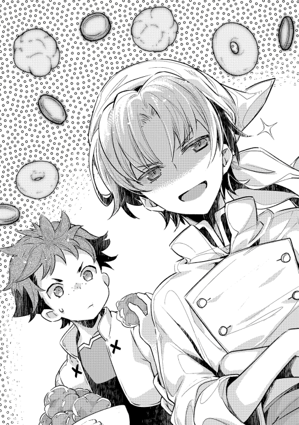
「なあペイス、もう一個ぐらい良いだろ？」
「駄目です。この評価で、このオリークックの未来が決まるのですから。それよりもマルク」
「あん？」
皿の上に、油を切った揚げたてを積み上げていくペイスではあったが、マルクに対して含みのある表情を返していた。
「あそこに、急ぎの案件があるみたいですよ？」
「何だそりゃ......って、ルミ!!」
調理場には、何時の間にか親友が立っていた。
何故か髪型が櫛を通したように整っていた為に、いつもより女の子っぽい感じがしたが、怒りっぽい性格の男勝りだけは相変わらずらしい。
「二人だけで美味いもの食ってるのはずりいぞ。俺にも食わせろ!!」
「今、食べていいものはみんなマルクが食べてしまいました」
「なに、てめえ、マルク。俺の分まで食ったな!!」
「違えよ。俺が食ったのは試作の......ちくしょうペイス、覚えてろ」
逃げ足だけは常日頃から鍛えられている少年が、少女に追いかけられる光景。
モルテールン家のいつもの日常風景であった。
「こりゃ、なかなかいい塩梅の菓子じゃねえですかい？」
「うむ。砂糖を入れたものより、こっちの入れないものの方が私は好みだ。これなら、食事のパン代わりにも出来るだろうし、酒の場にも出せるかもしれん」
「俺は砂糖入りの方が良いです。年齢によって嗜好の違いがあるんですかね？」
ザースデン領主館の執務室では、目下、試食会が行われている。
カセロールやシイツ、ニコロやグラサージュといった、どちらかと言えば内政の業務を担当する人間が集まっており、手に手に丸いお菓子、オリークックを持って試食中だ。
ペイスを除けばアラサーどころかアラフォーと言える面々の中で、一人だけ十代のニコロの言葉に、過敏に反応するのは独身の従士長である。
「おいニコロ。それは俺や大将が年食ってると言いたいのか？」
「あれ？ シイツさんは若いつもりだったんですか？」
「おうおう、喧嘩なら買うぞ、コラッ」
「やめろ二人とも。決闘騒ぎは子供らだけで十分だ」
ペイスが、自分の小遣いを奮発してまでお菓子を作るのは、多分に趣味の要素が含まれている。
だが、したたかさも兼ね備えている少年が、ただ菓子を作るだけで済ませるはずもない。
作られたオリークックは、お菓子というよりは、酒のあてと言った方が良いものも多かった。塩味を強めにつけてあるので、クラッカー的なおつまみには丁度良い。
決闘騒ぎで子供の喧嘩を大ごとにしてしまったのがバレた為、それをうやむやに誤魔化す為にあえて大人向きの味にしてあるのだ。
話題逸らしともいう。
「それで、父様。この菓子の評価は上々ですか？」
将来的に豚が飼えるようになれば、豚脂の使い道は重要になってくる。
その為に、揚げ菓子というものを用意してみたのだが、評価としてはどうか。
味の評価については、ペイスの目論見通りなかなかに好評のようではあった。
だが、父親が領主として下した決断は厳しいものだった。
「失格だ」
「何故です。ラードを使って、美味しいお菓子が出来るなら、冬にはぴったりじゃないですか」
「理由は三点。一つは、塩を使うこと。冬支度には、保存食作りで大量の塩が要る。そこにきて、嗜好品にまで塩を使えば、問題は大きくなる」
「ぐっ、さすが父様」
カセロールは、これでも二十年以上難治の土地に四苦八苦してきた苦労人だ。
それだけに、如何に可愛い息子の頑張りであっても、結果は結果として厳しく査定する人間である。
「次に、豚脂の使い方。結局は油を汚した後に、捨てることになる。揚げる前であるなら蝋燭作りや照明用に用途もあろうが、油を汚してしまえば意味がない。混じり物の多い油は、何に使うにしても安定せず、危険物になるからな。油を大量に溜めて熱する調理法にも、冬の乾燥した時期には火事になる危険性が付いて回る」
「むぅ」
「最後に、味」
「味は皆褒めてくれたじゃないですか」
ペイスの作る料理は、美味しい。
これは、モルテールン家のみならず、多くの人間が知ることだ。
オリークックもその例に洩れず、味については相当に良い線にあるというのが、職人の自己評価でもあるし、食べた者の評価でもある。
何処に問題があるというのか、とペイスは気色ばむ。
「美味しさという点に不満があるわけでは無い。が、それ故の欠点も多い。さっきも出た塩にしろ、砂糖にしろ、ミルクにしろ、冬の間は常以上の贅沢品だ。うちはまだしも、村の家ではこんな風に味を付けて作れんだろう。そして、この揚げ菓子から塩も砂糖も乳も抜きにしたなら、お前は美味いと思えるのか？ ただの小麦粉の素揚げではないか」
「......」
正論であった。故にペイスは口を噤んだ。
冬支度として、豚脂の有効活用を今から模索するのであれば、オリークックのような贅沢品は失格と言われても仕方がない。
「これ以上、シンプルなお菓子は難しいです」
「だから、何故お前はお菓子にこだわる。油の使い方など、他に幾らでもあるだろう」
「僕はお菓子を作りたいんですよ。うぅ......」
冬の間は、作物が育たない。
新鮮な食材というものが、極めて限られる時期に作れるお菓子など、そうそうあるものでも無いのだ。
近所にコンビニやスーパーがあるわけでも無い世界。材料一つとっても調達に手間のかかるもの。
ペイスがうずうずと禁断症状のように我慢するのも、毎年のことである。
カセロールは軽く瞑目し、眉間を揉んだ。
息子が成人しても親は親。美点も多ければ悪癖も多い息子に、子育ての難しさを痛感した為である。
「とりあえず、この菓子のこと。そして、まだ飼ってもいない豚のことなどは脇に置く。取り急ぎ、片付けなければならない問題も出てきた」
「折角頑張って作ったのですが」
「頭を切り替えろペイス。お前は将来、このモルテールン家を背負って立つ人間だ。趣味にばかり気を取られるな」
「......分かりました。で、問題とは何でしょう？」
他領では農閑期の社交シーズンであるが、モルテールン領は冬の間も領主の仕事が多い。
毎年この時期には、来年の政策や施策について新しい試みが幾つも議論されるからだ。
今回の問題というのもそれかと、ペイスが尋ねる。
が、カセロールは首を横に振った。
「いや。ボンビーノ子爵からの招待状が届いたのだ。懇親の為に立食形式の夕食会を開きたいとのことで、ペイスを名指しで御指名だ」
「ボンビーノ子爵？ 名前だけでも金欠を疑ってしまいますが、あまり記憶にないです。聞いた気もするのですが、どういった家でしたか？」
「後継が、確かお前ぐらいの年の男の子しかおらず、縁戚の人間が後見として政務を行っている家だ。南部の中でも比較的東部よりに領地がある」
「その家が、なんでまた僕に？」
「知らん。招待状には、お前の噂を聞いて、跡取り息子の参考になるであろう話が聞きたいとか、もっともらしいことが書いてあった。が、何処まで本音か見当がつかない。かといって、ここの招待は無視出来ん理由がある」
「何故......と、思い出しました。確か、港町が御領地の家。一時期海賊に荒らされていたというところでしたっけ」
ペイスの記憶に残り辛かったのも無理はない。
ボンビーノ子爵家は、かつては港町以外にも四つの村を持つなかなかの富豪であったが、政変やら内輪もめやら海賊襲撃やら他領の経済制裁やらの諸事情から、没落を重ねて、今では港町をなんとか維持するだけに留まる、名ばかり子爵なのだ。各地の社交界でも、脇役中の脇役。
そして、無視出来ない理由とは、この最後までしがみついている港町にある。
聖王国の海岸線は東部の一部を除けば南部に集中しており、それでいて自然に接岸出来る良港の数は限られる。
ボンビーノ子爵領の港街ナイリエ。かつては天然の良港として知られた、人口六百人ほどの漁師町であり、鯵の水揚げでは国内でもまずまずの漁獲量がある。
争乱で一度港が物理的に封鎖された影響で、今でこそ漁船の出入りしか聞かないが、かつては近隣諸領の商船も出入りしていた。
ここは将来、モルテールン家が特産品の量産態勢に入ったならば、重要な流通拠点になる可能性を持っているのだ。
「そうだ。御家の騒動と、それに乗じた海賊に荒らされて、街はかなり酷い有様だった。以前、レーテシュ伯家の海賊討伐に参戦した時の話だがな」
「今もあまり良い話を聞かないことからすると、大して変わっていないのでしょう。僕もようやく思い出したぐらいです。で、そのビンボー子爵からの招待ですか」
「ボンビーノ子爵だ。先々のことを考えて布石を打つならば、ここで港を持つ家と繋がりを得ておくのは悪くない。将来もレーテシュ伯が甘い顔をしてくれるとも限らないからな」
「確かに」
レーテシュ伯爵家とモルテールン家は、近隣領ということもあり、比較的友好的な付き合いをしている。だが、これから先々、常にそうであり続けるという保証はない。
もしも流通を完全に握られた状態で不仲になれば、影響は甚大。そうならないように修好の努力は必要であるが、リスクの低減を考えるならば別に流通路を検討しておくのも良い手である。
「ならば、参加は決定で良いな？」
「はい、やむを得ないでしょう。舞踏会ならば断わっていたでしょうが、夕食の為の晩餐会となれば、参加しやすい」
「パートナーはどうする？」
「リコリスでは駄目なのですか？」
晩餐会となれば、招待者にパートナーが付き添うのは不自然ではない。というよりも、付き添う方が望ましい。
特に、既婚者となれば夫婦なり近親の異性なりにパートナーとして付き添ってもらうことは、マナーとして当たり前だ。
ペイスからすれば、ならばリコリス嬢を連れて行ってはどうかという意見になる。
「駄目ということも無いな。婚約者というなら別に連れて行っても不自然では無い。だが、気になるとするなら東部の後ろ盾をアピールする形になることだ。それが表裏のどちらに転ぶかが、現状では見えない。それに、お預かりしている御令嬢を他領に出すのには危険も伴う。相手の情報が不足していれば尚のこと。レーテシュ伯のように見知った相手の所に出向くわけでも無いのだ。今回は政治的な理由も薄いし、下手な冒険を避けるなら、アニエスかジョゼを連れて行く方が良い」
「リコリスが〝体調不良〟の為、僕一人でというのはどうです？」
「それはいかん。預かっている未婚女性を病気にさせたとあれば、いらぬ噂や讒言の元になりかねない。あくまで元気に過ごしている、という体裁になっているのだ。ここ最近、私の位階が上がったことで、足を引っ張りたがって良からぬたくらみを企てている輩も多くいるはずだ。讒言の材料を提供することは避けたい」
「なら、母様か姉様に御足労頂くのが安全策ですか。いや、姉様の方が良いですね」
「......なるほど、お前はそっちを選ぶか。血は争えんな」
未婚男性が晩餐や夕食に招待された場合に、近親者を伴うのは割とありふれた話だ。
特に、恋人募集中の男性であれば、幼い妹であるとか、母親であるとか、一目で恋人でないと分かる女性を連れていく。
何故なら、同じく恋人募集中の女性から、既に恋人がいる、と誤解される可能性が減るからだ。
逆に言えば、年の近い姉に同伴を頼むということは、〝既に恋人がいる〟と分かりやすくアピールしていることになる。
母ではなく姉に頼むというペイスの意図が何処にあるか。誰に対する配慮が隠れているのか。
分からないボンクラは、執務室の中にはいない。
「勿論、姉様の都合や意思を考慮した上での話だと思っています。嫌がるようなら、無理にとは言いません」
「よし、本人を呼ぶとしよう。グラスとニコロで呼んできてくれるか」
「分かりました」
女性の部屋のある区画に行くには、領主の許可が要る。
また、許可を出すにしても出来る限りの配慮の上で立ち入るようになっているのが、モルテールン領のルール。
二人組というのは、相互監視の意味合いを含んだ、配慮の一つだ。無論、ペイスやカセロールといった〝家族〟にはまた違ったルールもある。
ちなみに他の家であれば、女性の従士や侍女、或いは下女のような女性に、出入りの言付けを指示するのが普通だ。
モルテールン家はつい最近まで赤字続きだったこともあり、侍女といった女性の従業員や、下女のような下層階級の女性が規模に比して極めて少ない。
今も絶賛募集中ではあるのだが、生活に困窮して下女になるような女性が、そもそも出ないようにしてきたのがカセロール達の施策。治政が上等なら、下層民である下女になりたがる女性など、いなくなるのが道理。
また、侍女のように専門知識や教養を要求される立場は、いきなり増やそうにも増やせず、教育には時間が掛かる。
故に、貴族家としては極めて例外的に、男性の家人が女性部屋区画に立ち入れることにしてあるのだ。
新興の家ならではと言える。
しばらくは、ペイスやカセロールがシイツなどと共に、別の政策について議論を進めていたのだが、その議論はドアのノックの音によって中断となる。
「お父様、ジョゼフィーネです。お呼びと伺いましたので参りました。お部屋に入ってもよろしいでしょうか」
「勿論だ。入りなさい」
部屋に入ってくる姉の姿に、ペイスなどは感動を覚える。
いつの間にか、立派な淑女になったのだと。
が、それは一瞬で終わった。
「とう」
「コラ、足でドアを閉める奴があるか!!」
「両手が塞がっているのよ。それに、礼儀作法の時間はもう終わったもん」
「一度荷物を置いて、普通に手で閉めなさい。横には他の者もいるのだし、一声かけるだけでも良い。まったく......嫁の貰い手がなくなるぞ」
ペイスの姉の手には、重そうな分厚い本がある。両手で持ち運ばねばならないほどの大きな本だ。
厚みのある革表紙に、神王国の歴史と書いてあった。教養の一環として大事な勉強だ。
カセロールが貴族に叙された時、勉強用に奮発して買った本で、特別な格安価格であったにもかかわらず金貨二十枚以上したという貴重品。
「ついでなので父様、お借りしていた本を返します。こんな高級品、部屋に置いておくのも怖いから」
「ちゃんと読んだのか？」
「半分ぐらい読んだわ」
「全部読みなさい......勉強嫌いは誰に似たのだか」
「大将でしょうぜ。お嬢と同じことを、昔大将も言ってやした」
カセロールの愚痴のような言葉を、従士長が拾った。
今でこそまともな領主として威厳もあるが、昔はやんちゃ盛りで血気盛んな若者だったのがカセロールだ。勉強よりは武術に時間を割く方が好き。特に歴史の類は面白くないからと苦手にしていた。
その頃を、シイツは知っている。
形勢不利と見て取ったのだろう。歴史嫌いだったカセロールは、それはともかく、と話題を逸らしにかかった。
「ジョゼ、お前を今日呼んだのは他でも無い。ボンビーノ子爵から立食形式の夕食会──晩餐会だな──の、招待状が来たのだ。ペイスを名指しでな」
「それにあたしがついて行くってことね？ リコちゃんじゃなく。どうせ、ペイスがリコちゃんに遠慮して、母様じゃ嫌だって言ったんじゃない？」
「察しが良いな」
ジョゼは、ペイスの姉らしく聡明な女の子。
前置きに近いような言葉だけで、事情をおおかた理解した。細々とした説明も大した量が必要だったわけではなく、あっさりと了承となる。
「姉様、お手数をお掛けしますが、お願い出来ますか？」
「良いわよ。ペイスの為だし、姉として一肌脱いであげるわ」
「ありがとうございます」
ジョゼの顔には、裁縫や礼儀作法の練習と勉強から逃げられるという、喜びが描いてあった。だが、それにあえて触れないのが出来た弟の気配りである。
細かい打ち合わせが終わった後。
ふうと一息ついたペイスに対し、姉がとてもいい笑顔で抱き付いた。
「ペイス〜」
「何でしょう、姉様」
「この後、時間あるわよね。貴方にはちょ〜っとばかり、やることがあるのよ。ふっふっふ」
「嫌な予感が......」
抱き付くどころか、しっかりと両脇を押さえにかかったジョゼ。がっちりと固めた所で、弟を羽交い絞めにしたままドアに向かう。
「ニコロ、開けて頂戴。あ、閉める時もよろしくね」
「はい。しかし、若様を連れていってどうされるんです？」
「勿論、衣装を見繕うのよ。このあたしの横に立つんですから、しっかりとあたしがコーディネートしてあげないと!!」
「姉様、一人で着替えられます。放してぇ!!」
「駄目よ。母様と一緒に着飾らせてあげるから。喜びなさい。おほほほほ」
次期領主を拉致していく少女を見送り、残された執務室の面々は溜息を隠さない。
「まあ、ドアの閉め方を覚えただけ良しとするか」
まだまだ、父親の苦悩は続くのだった。
政治の世界において、その性質の一端を表す言葉に「利害調整」というものがある。
限られた物資、人材、資源、時間、金を、どこにどの程度投入するか。成果利益をどのように分けるか。効率的な分配の一環として、利害調整という政治の概念が生まれる。
間接民主主義であれば、選ばれた代表。貴族制であれば貴族がこの調整役を担っている。
では、利害調整を行う際に重要なこととは何か。
色々と大事なことはあるにせよ、一つは人の価値観を知ることだ。
リンゴが好きな人間が二人いれば、一個のリンゴを欲して争うが、片方がリンゴなどは見るのも嫌だという人間ならば争いは起きにくい。
分配に際し、それぞれの重要視するポイントを踏まえた配分を行えば、争いが起き難くなるもの。
故に、貴族は社交を重要視する。
会話の一つも交わせば、相手がどういう人間か分かるからだ。
賢いのかどうか。軍務知識があるか。教養はあるか。相手の出せる利益が何で、欲しがっている利益は何か。分かることは非常に多い。
社交の世界は、貴族社会の縮図。大事なお仕事の一つでもある。
だからこそ、面倒くさいと感じる人間もる。
身体が無意識にでもマナーを守るほどに習熟していれば別だが、いちいち習った動きを思い出しながら動かねばならない不慣れな人間は、尚更だろう。
モルテールン家の御令嬢は、そんな人間の一人だった。
「さっきから鬱陶しいわ。御飯が全然食べられないじゃないの」
「姉様、笑顔です、笑顔。ただでさえ、子供二人と見られて目立っているのですから、笑顔だけは忘れないようにしてください」
「ペイスに言われなくてもそれぐらいは分かっているわ。でも、こう、頬の辺りが引きつってくるのよ。明日は絶対、顔が筋肉痛になっているわね」
「顔と言わず、全身カチコチになっています。もっとリラックスした方が良いです」
「出来るならしてるわよ!!」
ジョゼフィーネ＝ミル＝モルテールン。ペイスの姉であり、モルテールン家の末娘。
未だ十代の彼女は、社交の勉強もまだまだ不慣れなところが多く、動きが多少ぎこちない。
しかしながら、近頃噂のモルテールン家の子ということもあって、お客が引っ切り無しにやってくる為、気を抜く暇がない。
今もまた一人。いや、二人。
頑張って笑顔を作っているジョゼと、自然な笑顔でいるペイスの許に、見知った顔がやってきた。
「ペイストリー＝モルテールン卿。ご挨拶させて頂いてもよろしいかな」
「これはハースキヴィ騎士爵。御無沙汰しております」
「ご無沙汰なのはこちらも同じです。お互い見知った仲ですから、この場は堅苦しいのは抜きでも良いですか？」
「勿論です。では、ジョゼ姉様の紹介も不要ですよね......義兄上」
ペイスに義兄と呼ばれた男は、まだ若かった。
年はまだ二十代の前半。或いは十代にすら見える。オレンジ色に近い赤毛の髪で、目鼻立ちはやや細面。背の高さこそ百八十センチ程度であろうが、締まった体つきから、もう数センチは高く見えるだろう。
少し厚みのある生地で仕立てた軍服風の礼服を着ていることから、軍家であることが分かる。赤を基調とした服装なのは、髪の色と合わせてのことだろうが、どこか着慣れていない風であり、こういった場に慣れていないと雄弁に語っていた。
彼こそ、当代のハースキヴィ騎士爵家の当主であるハンス＝ミル＝ハースキヴィ。そして、彼の妻ヴィルヴェは、ペイスやジョゼにとっては実の姉である。
「ジョゼもペイスも、大きくなったね。このあいだ会った時は、まだこんなだったのに。二人とも、元気そうで何よりだ」
「義兄上もお変わりなく」
「義兄様、お久しぶりですわ」
ハンスは、笑顔のままで手を膝の辺りにかざした。
身長がその程度に該当する小さい人間というならば、幼児であろうと思われるが、他人の子供とはとかく成長が早いように思えるものだ。
ハンスが以前にペイスやジョゼと会ったのは三年前。多少の誇張はあるにせよ、その頃と言えば今よりも相当に小さかったのは間違いない。ペイスなどは当時五歳だ。
大きくなった、という言葉は、そのまま思った通りの感想である。
「モルテールン家の最近の躍進は人伝に聞いているよ。義父上や義母上はお元気にしておられるかな？」
「はい、それはもう。こっちが困ってしまうぐらい元気ですわ」
「はは、相変わらずだ。お二人には、館の新築祝いには行けず、すまなかったと伝えておいてくれるかな」
「分かりました。代わりに、此方としてもビビ姉様に、また里帰りするようお伝えください。私も、偶には姉様に会いたいです」
「承知した。妻には私から伝えておこう」
お互いの伝言を預け合う、というのは親しい間柄でよくある交渉だ。お互いに貴族であれば、ただで相手のお願いを聞くわけにはいかない。が、親しい者同士で、些細なことにわざわざ何か対価を取ったり取られたりというのも煩わしくも感じるもの。
故に、お互いがお互いに〝誰それによろしく伝えて欲しい〟というやり取りをしておくのが良くあるパターン。
こうしておけば、〝タダ働きでは無い〟という建前がお互いに成り立つので、非常に会話がしやすくなる。
「そうそう、折角の機会なので紹介しておこう。私の娘の、オリバーキッシュだ。二人と会わせるのは初めてになるかな？」
「初めまして。オリバーキッシュ＝ハースキヴィと申します。ペイストリー＝モルテールン卿ならびにジョゼフィーネ=モルテールン卿にお会い出来ましたこと、光栄に存じます」
一歩前に進み出たのは、ペイスと同い年ぐらいの女の子だった。
ぱっちりとした目で、愛らしい雰囲気がある。どことなしに親子で似ていない感じがするが、髪の色だけは赤毛っぽいところで似ている気もした。
社交に慣れない風なのは誰かさんとよく似ているが、それ以上にガチガチに緊張している。
「娘って話でわたしが知らないのなら、ビビ姉様の子ではないのよね」
「ジョゼは相変わらず察しが良い。この子はうちで引き取った養子なのだよ」
「養子？」
「うちの部下が殉職してね。彼は妻も早くに亡くしていて親戚も疎遠で、この子が一人残されたのさ。色々と事情があって、私が引き取って面倒を見ている」
「ふ〜ん、色々ねぇ」
貴族家の娘や息子が、部下の家に入るというのは、割とありふれている。
三男坊四男坊といった部屋住みの人間が、娘しかいない家に婿として入るであるとか、功績のある部下に対して娘を娶らせるであるとか、類例には事欠かない。
長い歴史のある貴族家であれば、目ぼしい部下とは血縁関係や縁戚関係になっていることも、それ故に多い。
色々、という言葉の裏には、そこら辺の事情もあったのだろうとジョゼは察した。
「それで、この娘を連れて晩餐会に参加ってのは、どういう意図があるのかしら。うちのペイス狙い？」
義理であれば、血の繋がりは無い。近親婚は慣習として避けられてはいるが、神王国の歴史を紐解いても、叔父と姪が夫婦となった例など幾らでも存在する。義理となれば尚のこと忌避感は薄い。
年頃の近しい娘を連れて挨拶に来る。その狙いがペイストリーである可能性は無視出来ない。
如何に義理の兄とはいえ、そこは貴族家の当主。警戒を怠るわけにはいかないという常識ぐらいは、ジョゼも持っている。
単刀直入に聞くところは非常識にも思えるが。
「まさか。幾らなんでも、お偉方を向こうに回す気はない。ジョゼと二人で来た意味ぐらいは分かるさ。連れて来た目的は別だ。ここの子爵家の御当主様が、この子と年回りが近いということで、顔を繋ぎに連れて来たのさ。挨拶もさっき終わった」
「なら良いわ。モルテールン家のジョゼフィーネよ。ジョゼで良いわ。よろしく」
「同じくペイストリーです。よろしく」
姉弟が、年の近い少女に挨拶する。
緊張気味の少女も、それで多少は緊張がほぐれたようだった。
挨拶の姿勢も、ぎこちないながら笑顔を忘れないところも、貴族令嬢らしい振る舞いが出来ている。その点、養子とはいえよく躾けられているのだろう。
だが、それでも爆弾発言を落とすのは不慣れさ故である。
「よろしくお願いします。ジョゼおば様、ペイスおじ様」
ピクっとジョゼの笑顔が引きつった。
まだ結婚どころか恋人すらいない少女にとって、おばさん呼ばわりはこたえる。
ジョゼにとって、目の前の少女は義理とはいえ姉と兄の子。叔母にあたるのは間違いないのだが、それにしたところで、おばさん呼ばわりを許せるものでもない。
「オリバーちゃん、ちょ〜と良いかしら」
「何でしょう、おばさま」
「あたしのことは、お姉ちゃんって呼んでくれると嬉しいわ」
「え？ あ、ご、ごめんなさいおば様」
「お姉ちゃん」
「ひゃぅっ、ジョゼ姉様」
「そう、それでいいのよ」
半ば強引に、呼び方を改めさせたジョゼに対し、ペイスは溜息を隠せない。
「姉様、脅してどうするんですか......」
「脅してないわよ!!」
「オリバーキッシュ嬢が怯えているじゃないですか。叔母なのは事実ですし」
「なに、そんなことを言うのはこの口か!!」
「いひゃい、ほほをつねひゃないでください」
もちもちの頬っぺたを、姉が引っ張る。
うにゅうと伸びるのが面白いのか、左右に引っ張ったり戻したりを繰り返す。
その様子を見て、緊張していた少女などは笑いが飛び出したほど。
「じゃれるのもほどほどに。それでは私はこの辺で。早くしないと美味しいところが無くなってしまうのでね」
「ええ。また当家に遊びに来てください」
「あたしも今のうちに食べておこう」
「姉様、口紅が少し滲んでいます。直すので、ちょっとだけ動かないで」
義兄が離れたタイミングで、取り皿に確保しておいた料理を頬張るジョゼだったが、慣れない化粧などをしていたまま食べるものだから、少し化粧が乱れた。
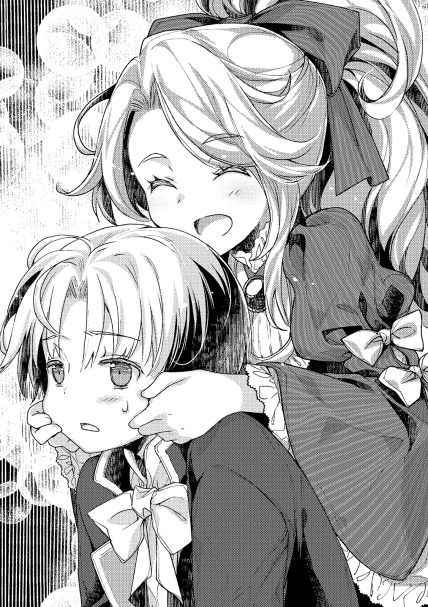
さりげないフォローとして、ペイスが素早く直す。魔法をこっそり使って。
「兄弟仲がよろしいようですね」
姉と弟でじゃれつつも、義兄親子と社交を行った後。親子が離れたタイミングを見計らうように、新たな相手が声を掛けてきた。
ジョゼの目が一瞬泳いだのは、声を掛けてきた相手がペイス並みに小さかったからだ。うっかり上を見すぎていて、誰もいないと目線を下に向ければ、その相手がいた。
「初めまして、モルテールン家の御二方。ウランタ＝ミル＝ボンビーノと申します。今日は当家の招待に応じて頂きありがとうございます」
「お初に御目にかかります。ジョゼフィーネ＝ミル＝モルテールンと申します。閣下にお会い出来ましたこと嬉しく存じます」
「同じく、ペイストリー＝ミル＝モルテールンです。不肖の身ながらご招待に預かりまして、光栄なことと存じます」
後ろに一人、補佐らしき年配の男性を連れて、モルテールン家の二人に声を掛けてきたのは、晩餐会の主催者。
ペイスと同い年ながらも、諸般の事情でボンビーノ子爵家の当主となったウランタだ。
黒みのある緑の髪がサラサラとしていて、おかっぱのように前髪を切り揃えているのが幼さを際立たせる。
それでいて、かなり厳しく躾けられたのか、立ち居振る舞いにおかしなところがない。
背筋を伸ばし、右手を握り込んで左胸に当てる敬礼を見せ、ペイスは同じ格好で答礼する。ジョゼは、女性の挨拶として軽く片足だけ後ろに引きながら膝を曲げ、スカートの裾をつまむようにして軽く持ち上げて頭を下げる。
「当家の食事は如何でしょう。楽しんで頂けていますか？」
「はい、閣下。私たちの家は内地にありますので、今日のような魚を使った料理はとても美味しく頂いております」
「それは何より。ジョゼフィーネ嬢に楽しんでもらえているのなら、用意した甲斐もございます」
にこやかな会話を交わすジョゼとウランタ。
その様子を、笑顔のままじっと見つめるのはペイストリーだ。
モルテールン家の内部においては、ペイストリーが次期領主となる跡目であることは、既に確定事項として家内の意見一致を見ている。
だが、他家の人間にはそれを言いふらすことも無い。
情報伝達が極めて難しい世界にあって、知らない人間の方が圧倒的に多いのだ。
領地と貴族位は、基本的に男系継承を尊ぶが、女性が継いではならないわけでは無い。
貴族号を持ち、相続権を放棄している訳では無い為に、形としてはジョゼにもモルテールン家の跡目となる可能性が存在する。
その為こういった社交の場では、ペイスもジョゼも、同じ後継候補として扱われるのだが、やはり姉ということでジョゼの方が一歩前に出るのが自然なことと見られる。
八歳で補佐も無いのに如才なく社交を行う異常に比べれば、一般的な成人に近い姉が社交を行う方が、普通であれば自然な行為だ。大人っぽいしっかりした子、で話が片付く。
それ故、今日に限っては目立つつもりも無いペイスとしては、一歩下がった形でジョゼに社交のメインを任せている。
にもかかわらず、何故かペイスの方に意識を向けてくる。
これは明らかに不自然なことだった。
「ペイストリー＝モルテールン卿は如何です。御口に合いましたか？」
「勿論です。卿の御領地は豊かな海の幸で有名なところ。噂に違わぬ魚介の数々に、御家の伝統を感じます」
警戒、という言葉がジョゼとペイスの両方に思い浮かんだ。
それ故、あえて無難な言葉を選ぶ選択をする。当初の予定では、商売の話を臭わせて先に繋がる布石を狙うはずではあったが、警戒が先に立った。
無難な話題となれば、夕食会なら出された食事を褒めるのがベスト。舞踏会であれば余興や踊りについての話題がベターだ。
今日であれば、碌に食べていないとしても、晩餐の内容を褒めるのが一番無難な話題になる。そして、あまり多くを食べていない以上、あえて味については明言を避けて曖昧な表現に終始する。
「それは良かった。当家の者も張り切っておりましたから、そう言って頂ければ用意した甲斐もございます。どうですか、どれか卿のお気に召した料理がありましたか？」
「どれも素晴らしい料理かと存じます」
回答を咄嗟に曖昧にしたのにはわけがある。
探りに来ている、というのが明らかだったからだ。
こうした晩餐において、好みを調べることで得られる情報は多い。
例えば、身体をよく動かす人間であれば、味の濃いものを好み、量を食べる。逆に、体調がすぐれない人間であれば、あっさりしたものを好むようになる。年齢や、日頃の習慣によっても嗜好は左右されるわけで、一定の相関がある以上、逆算の類推もまた容易い。
食の好みが、ある程度の人となりを推測する材料になり得ることを、経験的に知る者は貴族の中にも少なからずいる。
補佐の人間が、子爵にこっそり耳打ちしているのが、その類の話に違いない。
「先ほどから拝見しておりますと、御二方に声を掛ける方々も多いようですね」
「田舎者ですので、物珍しいのでしょう」
「いやいや、モルテールン家の御盛名はつとに有名です。これだけ頻繁に声を掛けられると、ゆっくりと料理を味わうことも出来ないでしょう」
「まあ」
「良ければ、御帰りの際に幾らかお包みしましょう。帰りに、一声お声掛け頂けますか？」
「そこまでご厚意に甘えては恐縮の次第です。お気遣い頂かなくとも、お心遣いだけで構いませんが」
「そうおっしゃらず。折角の料理ですし、噂に名高い御父君にも、是非召し上がって頂きたい。そうだ、料理でなくとも、魚そのものでは如何です。当家でもなかなか手に入らない、とっておきをお包みします」
「はあ」
目上から、是非にと言われれば、強硬に突っぱねるのも難しい。
新鮮な魚まで分けてよいと言われれば、断るにも理由を持ち合わせていなかった。しかも、攻め手を変えてくる柔軟さまで見せた。
ペイスの態度が逃げの一手と見るや、ジョゼを攻めだしたのだ。
「ジョゼフィーネ嬢は如何です。新鮮な魚も、御家であれば持ち帰ることが出来ましょう。とびきりに脂の乗ったものがご用意出来るのですが」
「そこまでおっしゃられるのであれば、御言葉に甘えさせて頂きますわ」
適当な言い訳であくまでも土産を突っぱねる対応も出来なくはない。
だが、社交のメインとなっているジョゼが頷いてしまった為に、止む無く受け取ることになる。
ジョゼの言葉に、子爵は満足そうに頷いた。
「そうですか。ではまた、後ほど。くれぐれも、帰る前には声を掛けてください」
そう言い残し、子爵は場を辞した。
主催者として、挨拶せねばならない相手が多いからだ。
残されたジョゼとペイスの二人は、小声で言葉を交わす。
「姉様、何故あからさまな誘いに乗るのです。手土産の見返りに、何を求めてくるか分かったものではありませんよ」
「だからこそよ。良く言うじゃない。巣に入らずんばなんとやらって」
「はぁまったく......豪儀なことで」
「うちの弟を信頼しているのよ。任せたわよ」
「任せ方が違うでしょう」
ペイスが溜息をついたのは、ジョゼの性格について。
巣に入らずんば竜を得ず。神王国のことわざのようなものだ。虎穴に入らずんば虎児を得ずと言い換えれば分かりやすい。
何か相手方が企みを持っていると分かっていながら、あえてそこに踏み込むという姉の決断について。この男前な性格は誰に似たのかという感傷から、溜息をついたのだ。
日もとっぷりと暮れ。深夜と呼ばれる時間帯になった頃。
晩餐会も主催者の挨拶と共に閉会となり、解散する。
ジョゼとペイスが帰りがけに挨拶したところ、何やら特別待遇とのことで、別途部屋に案内されることになった。
案内役は、子爵家の従士だ。
子爵の屋敷の奥の部屋。
恐らく応接室と思われる場所まで案内され、ノックと共に入る。
今日は、ジョゼから先に入室することになるのだが、そこでペイスが叫ぶ。
「姉様!!」
部屋に入ろうとした彼女を引っ張るようにして後ろに下がらせ、代わってペイスが前に出る。
執務室の中には、完全武装の兵士が十人以上。どう見ても、普通の状況ではない。
ペイスとジョゼに、最悪の想像が過ぎる。悪意をもって、自分たちの命を取ろうとした謀であったのか、と。
一触即発とも言える雰囲気に、一気に緊張感が高まる。
その中で、武装集団の間から一歩前に歩み出たものが、口を開いた。
「少々、お話をしてもよろしいですか？」
一歩進み出たのは、子爵家当主の少年だった。
ピン、と張りつめた弦が如く。
両者の間にあるのは緊張の糸だった。
モルテールン家の姉弟と、その面前の武装集団とが睨み合っていた為である。お互いに武器を抜いていない点がせめてもの救いだろうか。
「申し訳ありません。驚かせてしまいまして。皆、この方は私の客人です。下がってください」
その緊張を解いたのは、ボンビーノ子爵家当主。ウランタ少年だ。
彼の一言で、物々しい集団が、脇の扉から別室にぞろぞろと移動していく。
「説明、して頂けるのでしょうね？」
「ええ勿論」
ウランタは、ソファに腰掛けて丸腰をアピールした。
「実はこの部屋に私が戻る途中、刃物を持って襲ってきた者がおりまして。その警戒態勢のまま御二方をお呼びする形になってしまったのです。誤解しかねない、猛々しい出迎えになってしまったことを、お詫びいたします」
「肝が冷えましたよ」
「重ね重ね申し訳ない。御二方の安全は、この身に替えても御守りするとお約束いたします。まずは席について頂けませんか？」
「武器を抜かれたわけでも無いので、まあ良いでしょう。謝罪を受け取ります。とりあえず姉様、御先にお座りください」
肝が冷えた風など欠片も見せないペイスの様子に、ウランタの後ろに立つ補佐役などは感じ入るものがあった。姉を咄嗟に守ろうとした姿勢は、騎士として立派な心がけであると言える。
席を勧められている時も、姉を立てつつも周囲の警戒を怠っていない様子が見て取れた。その点でも、とても主と同い年とは思えないと、嘆息する。
ボーっとペイスを見ていた幼い主人に対し、先を促すよう小声で勧める。
「おっと......さて、改めて。この場に御足労頂けたこと、感謝いたします。ボンビーノ子爵家当主、ウランタ＝ミル＝ボンビーノです。こっちはケラウス。私の最も頼りにしている者です」
「ジョゼフィーネ＝ミル＝モルテールンです」
「同じく、ペイストリーです」
三人掛けぐらいの大きめのソファ。ペイスとジョゼのように小柄な人間であれば、有りすぎるぐらいの余裕をもって座れる。
そこに深々と腰掛けるのがジョゼで、浅く、足を地面につけた形で座るのがペイスだ。
二人は、対面の少年と改めての挨拶を交わした。
「先ほどの不躾なこともありました。そのお詫びと、また今回来て頂けたことのお礼も兼ねて、美味しい魚を用意しております。帰りがけにお持ちください」
「それは御配慮ありがたく頂戴いたします」
にこにことした笑顔の裏に、どことなく不安げで緊張した様子を見せる子爵。
その様子を見ながら、ジョゼやペイスはどういう意図でこの場が設けられたのかを探ろうとする。
「それで閣下。この度のご招待とこの場。如何様なご用件あってのことでしょうか」
本来なら婉曲に聞くものを、単刀直入に突っ込んだのはジョゼだ。
細々したことが苦手な彼女からすれば、うだうだと回りくどい会話よりもズバッと聞く方が好みなのだ。
「そうですね、これからお話しします。ですがその前に、まずはお食事でも如何ですか。ああいった社交の場で人気者であった御二方は、碌に食べられなかったでしょう。私も、招待側だったのでこれから食事を取るのです。折角ですから、この場でご一緒に。堅苦しいことは私も苦手なので、簡易形式でいきましょう。どうぞ楽にしてください」
そう言って子爵は部下に命じ、食事を運ばせた。
フルコースではなく、目ぼしい料理を一度に並べる、簡易なビュッフェスタイル。交渉時のお茶と同じ扱いになる、軽食スタイルだ。
形式ばったことはしなくていい、という意思表示でもある。
単純な食事というわけでは無く、何かの意図があるに違いない。
「では僕がまず毒......」
「あ、これ美味しいわね」
「姉様っ!!」
「この魚美味しいわよ。ペイスも食べる？」
「......はぁ、まったく」
本来であれば、毒見の意味もあって、ペイスなりが適当に取り分けた料理をホスト側が口にしてから、ゲスト側が食べる。
だが、ジョゼはそれを丸っきり無視して食べ始めた。これは、相手方に対する無条件の信頼を意味するものであるので、別にマナー違反というわけでは無いのだが、交渉の場であまり見られる形でも無い。
賢い姉が、全くの考えなしでそうしたわけではないと信頼はするが、その意図が何処にあるのかペイスには一瞬分からなかった。
だが、そのすぐ後に意図を察する。
目の前の子爵が、明らかにほっとしたような顔を見せたからだ。
重圧に押しつぶされそうになりながら、何とか責務をこなそうとしている所を見て、彼の少年の根が真面目で善良と見て取ったのだろう。彼女なりに、此方に危害を加える意図がないと確信を持てた為に取った行動のはずである。
姉の直感的な鋭さをよく知るペイスは、それ故に姉の行動を否定はせずに追随した。
「あ、姉様、そっちのやつを皿ごとください」
図太さに関しては、姉の一枚上手をいくようではあったが。
「ペイス、あんたはもう少し遠慮ってものを弁えなさいよ」
「目の前の皿を空にした姉様に言われたくないです。......あ、美味しい。塩漬けの野菜と一緒に煮付けたんですね。塩味ですが、あっさりしていていい味です」
遠慮や謙譲といった美意識が、日本よりは薄いのが神王国の文化風土。
出された物を下手に遠慮せずに食べるのもまたそれ相応の意味がある。
それにしても、いかにもな遠慮しなさっぷりに、子爵は笑みを浮かべたが、後ろのケラウスは溜息を隠せない。
そうして食べていくうち、ジョゼは気付かなかったが、ペイスはあることに気付く。
「お気付きになられましたか？」
その様子を補佐役から指摘された子爵が、ペイスに声を掛ける。
さすがに目上から声を掛けられたままで食べ物を頬張るのはマナー違反の為、しっかりと皿を置いて言葉を返す。
「美味しいお料理ですね」
「......それだけですか？」
にこにことした笑顔のままペイスが言った言葉に、子爵は当惑した。
用意した食事に含まれた意図に、目の前の同い年が気付いているのかどうかが、自分には分からなかったからだ。
咄嗟に補佐役の方に顔を向けたが、当の補佐役であるケラウスは自信を持って、ペイスが気付いている、と小声ながらも断言した。
「ペイストリー＝モルテールン卿。卿は、気付いたことが御有りでは？」
「......料理に酢が無いですね。この時期の料理であれば、酢漬けの魚が出てきそうなものですが、新鮮なものか、逆に相当に時間の経った塩漬けばかり。それに、鮮度の良い野菜もほとんど使われていない」
「その通りです。お察し頂けて助かります」
冷蔵庫も冷凍庫も存在しないこの世界において、生鮮食料品の保存を行う方法は、色々と創意工夫されてきた。特に、魚のように腐りやすいものは、保存技術も必要に迫られて磨かれてきた技術である。
神王国南方においては、代表的なものが干物と塩漬け。次点で酢漬けだ。発酵による保存食もあるにはあるが、魚の場合は匂いが大抵酷いものになる為一般的ではない。
夏は魚も腐敗しやすい為に加熱調理されるが、今の時期であれば酢漬けが高級な料理として饗されることも多いのだ。
特に、一年寝かせた酢を使い、二晩ほど魚を果物などと共に漬け込み、柔らかくなった骨ごと食べる料理が、ナイリエでは伝統料理として存在する。
立食の夕食会となれば、食事にも量が必要になる。
当日も含め、新鮮な魚は確実に用意出来るわけでは無い。
その為、準備という意味もあって、一週間ぐらい前から酢漬けの保存食を用意しておくのが普通なのだ。
大抵は、当日の水揚げの量次第で、保存食の魚の量を調節する。
「卿がお気付きになられた通り、今の当家は、近場で水揚げした魚をお出しすることしか出来ないのです」
「ほう。それはまた何故です？」
「街道封鎖と海賊の影響です」
「それはそれは」
ボンビーノ子爵が語る所によれば、今現在お隣の領地と紛争一歩手前の緊張状態が続いているそうだ。
原因としては、かつてボンビーノ子爵領であった村の領有権らしい。いや、子爵の言うことには、今も子爵領だとのこと。
今までは、漁師町に必要な野菜等々の一部はその村から仕入れていたのだが、お隣の領主が、自分達に管轄権があると言い張った為に諍いが起きているとのことだ。
相手方の言い分としては、零落した子爵家が統治しきれていない為に放棄された村を、代わって十年以上も統治してきた為、既得権として管轄権は自分達にあるという。
実際問題として漁師町である領都ナイリエを最優先に統治を行ってきた子爵家としては、村をほったらかしにしていたと言われて、返答に窮する状況であったのも事実なのだ。
「一部の街道封鎖がなされ、商人の介入もあって、野菜その他の生活物資が軒並み異常に値上がりしているのです。当家の財政事情では、野菜を調達するのにも、とても量が揃わない現状。酢なども、漬け込むほどに贅沢な使い方が出来ず、といった有様」
「それで、新鮮な魚を使った料理ばかりになる、と」
「はい。お出しした塩漬けの魚も、本来であれば冬の備えなのです」
「状況は悪いですね」
「お恥ずかしい限りです」
今まで放置していた村を返せと言いだしたところで、相手からすれば、せめて今まで面倒見てやった手間賃ぐらいは寄越せと言いだすだろう。タダで返すのは、貴族家としてあり得ない。
捨てられたペットを面倒見てやったのだから、礼ぐらいしろ、と言われているようなものだ。ある程度の道理は向こうにもある。
そして、手間賃が用意出来るぐらいなら、そもそも放置はされていなかっただろう。
政治的には、相当に劣勢な立場に置かれているらしい。
街道の封鎖も、子爵家の息がかかった者を追い返す程度とのことで、商人や無関係な他家貴族の出入りは可能なのだとか。
これも、相手方の嫌らしい手だ。真綿で首を絞めるが如き、陰険な手。
そこに商人の思惑が絡んで、物資の値を相当に吊り上げられているらしい。むしろ、そちらが狙いなのだろう。
かといって、商人に嫌われてそっぽを向かれても、困るのは子爵領だ。痛し痒しで、ボッタクリを許容せざるを得ない状況に陥っている。
「それに加え、先ごろ海賊が現れました。せめて港の近くまで来てくれれば、当家としても対処のしようがありますが、離れた所に拠点があるらしく、時折思い出したように遠出している船を襲ってくる始末。おかげで、船を出して余所に行くのも皆が嫌がるのです」
「それで海のルートでの仕入れも値が上がっている、というわけですか。間の悪い話です」
「困ったことです。そこで、モルテールン卿にお願いがあるのです」
「はい？」
ここまで汲々とした現状を語られるだけであったが、一転してモルテールン家に対する願望が語られ出す。
「当家にお力を御貸し頂き、街道封鎖の解除にご協力頂けないでしょうか」
「それは......お断りいたします。当家とはそもそも無関係な話ですから、他家同士の諍いに首を突っ込むと碌なことになりません」
ペイスは、子爵の提案をすげなく断った。
他家同士の、下手をすれば軍事衝突になりかねない諍いに首を突っ込むなどしたくはないし、更には話を聞くだけでも子爵の劣勢が感じられた。負け戦に加担など、冗談にしても笑えない。
淡い期待ではあったのだろうが、それでも断られたことで、がっくりと肩を落とした子爵。が、それでもと気を取り直して言葉を続けた。
「そうでしょうね。ではせめて、海賊の討伐にお力をお貸し頂けませんか。御父君は海賊討伐でも名を上げられたと聞き及んでおります。卿にも是非、お力をお貸し願いたい」
この提案については、ペイスは即答を避けた。
チラリとジョゼの方を見やる。
そして、しばらくじっと考え込み、返答する。
「......それであれば、二つほどの条件の受諾と、疑問点の解消がなせれば可能でしょう」
「おお!!」
元々、モルテールン家にとって、社交や交渉の場での援軍要請などは珍しくも無い。
傭兵まがいの助っ人として、現当主カセロールがやってきたことだ。今更いい加減な理由でそれを断るとするならば、今までの行動の正当性が揺らぎかねない部分もある。
例えば、困っている人を助けるのが道理、という正当性で助力してきた人間が、こと今更、困っていても余所は余所、とすげなくすればどうなるか。
今までの建前は嘘だったのかと、二枚舌を批難されるし、信用も無くす。
モルテールン家の人間として、海賊討伐に助力を乞われれば、受けるのが前提の交渉になる。モルテールン家ならではの、お家事情。
ただし、その為には前置きがある。
「まず、ジョゼ姉様を巻き込まないこと。これはこちらとしては絶対の条件です」
「構いません。すぐにというわけでもありませんので、一度御領地にお戻りになられてからで結構です。かといって、余裕があるわけでも無いのですが。ある程度の日数であれば、その間に此方としても準備を整えます」
「もう一つ、対等な立場として、報酬はきっちりと貰います」
「勿論です。その内容については、相談となるでしょうが、誠意をもってお応えする用意があります。さし当たって、前金代わりと言っては失礼ですが、とっておきの魚をそれなりに用意しております」
「魚は土産で貰いますから、どうせならば貝やエビの類を前金代わりで頂きたい」
「......問題ありません。高級で美味しいものを見繕ってご用意しましょう」
こういう援軍要請の場合、褒賞は別途というケースが多い。
片方が片方の指揮下に入るのであれば、褒賞や罰則は指揮権を持つ側に決める権利がある。
だが、それを許さず、交渉できっちり決めろ、とペイスは言ったことになる。
無論、頼み込む側の子爵としても否は無く、それに同意する。
「さて、そして疑問点」
「何でしょう」
「何故、僕なのでしょうか？」
一瞬、ペイスの雰囲気が変わったように感じたのは、ジョゼだ。
彼女からすれば、執務はまだしも、単独で外部折衝をする弟の姿を間近で見るのは初めてになる。
そもそも自分が外部に出向くことが稀なので当然だが、出かける場合も父親がいた。
自分の弟が、何故次期領主として当然視されているのか。その一端を垣間見た気になる。
裏があるだろう、と暗に問い詰めるような姿勢。我が弟ながら油断ならないな、と心の中で呟く。
当然、真横のジョゼに気付けたものが、真正面の人間に分からないはずもない。
子爵はビクリと身体を振るわせ、それでも気丈に言葉を繋ぐ。
「それはどういった意味ですか」
「御家の御事情は理解しました。海賊討伐が必須で、戦力的にも援軍が必要な事情が御有りなのは察します。しかし、そうであるならば僕でなくてもいいはずです。友好関係を築いておられる他家でも、或いはうちに頼むにしても、父でも構わないはずです。何故、名指しで呼んでまで、私に依頼なさるのです」
海賊討伐に、報酬次第で援軍に駆けつける。
これ自体は、他家はいざ知らず、モルテールン家では問題にならない。報酬の多寡が交渉の議題になるとしても、受けるのが前提のお家事情。
この情報が漏れている可能性は、それなりにあり得る。
だから、モルテールン家に頼みたい、という理屈まではまだ分かる。
しかし、父親でなく息子の方を呼びつける理由は何なのか。そこに、何か意図が隠されていないだろうか。
初めは、ペイスの実績を知っている為、きょとんとしていたジョゼにしても、考えるほどに不自然に思えてきた。
せめて、シイツをよこせというなら、まだ筋が通るだろう。海の上で遠見が出来るなら、まさに百人力。だが、そうではない。
何故ペイスなのか。
「もしや、先ほどの猛々しい騒動が関係しておられる？」
「......」
ウランタは、後ろを振り返る。さすがに、ここまで突っ込んでこられるとは思っていなかった為に、予想外の対応を迫られたからだ。
しばらく補佐役とやり取りの後、子爵がペイスに向き直る。
「卿の御慧眼、感服しました。ここからお話しすることは、当家の機密。他言無用に願えますか？」
「お話を伺ってから判断いたしますが、不用意に吹聴することはないとだけ、お約束いたします」
しばらくじっと見つめ合う少年同士。
根負けしたのは、子爵の方だった。
「どちらにせよ、御家に......いえ、卿に助けて貰わねば困るのはこちらです。お話ししましょう」
「拝聴いたします」
「実は、先代である父が亡くなった時、当家の跡取り候補には私以外にもう一人おりました。母親が非公認の側室であった為に貴族号こそ無いものの、私よりも年は上でしたし成人もしておりました。当家を誰が継ぐのかとなった時、父は遺言を残しており私が継ぐことになったのですが、その際に兄の方が相応しいと騒いだ者達がおりました」
「なるほど、よくある話ですね」
非公式な側室とは、早い話が愛人である。
所謂妾腹というものであり、血筋を重要視する貴族社会においては、蔑まれる出自の一つだ。
だからといって、後継者がいない場合に、跡を継いだ例がないわけではない。
次期後継が幼すぎる場合に、緊急避難的な一時的措置として継ぐ、という選択肢もあったのだろう。
「結局、色々とあって兄を放逐する羽目になってしまったのですが、一応はそれで騒ぎも治まりました。しかし、ここにきて、また同じように騒ぎ始める動きが見られるのです」
「ほう、それはまた何故」
「私は、他家の蠢動を疑ってはいますが、証拠はありません。そして、騒ぐ者達の言い分が......」
「『今の当主が頼りない』でしょうか？」
「何故それを!!」
「僕もこの通りの年齢ですから、同じようなことを言われたことがあるのです」
「......そうですね。私も見ての通り若輩で、家中にもそれで不安視する者が多いのです。そこで、海賊討伐を機に功を見せ、その不安を払拭したい、と考えているのですが......ここに問題があります。私はこの度の海賊討伐が初陣になるのです」
子爵は、軍事行動を舐めてはいない。むしろ逆で、必要と分かっていても恐ろしいと感じている。ともすれば逃げ出しそうになる気持ちを抑えているのは、偏に重責を担う責任感故だ。
震えながらも、ふう、と一つ息を吐き、改めてペイスに向き合う少年。
「初陣である以上、万難を排して臨みたい。しかし、下手に実力と経験の有りすぎる者に頼めば、今度は私が舐められてしまいます。それでは意味がない」
「年が年ですからねえ」
「ええ。だからこそ、卿なのです。実戦経験をお持ちで、魔法使い。それでいて、私と年が近い。如何でしょう、お願い出来ないでしょうか。先に述べた通り、対価は誠意をもってご用意すると改めてお約束します」
「う〜ん......」
ペイスは、子爵家の意図を洞察した。
この話、単純なものではない。
子爵家当主が幼いという現実。そして、軍功を欲している事情はよく分かった。
だが恐らく、当主の力量に不安があるのも事実なのだろう。援軍が必須の前提になっている点がここにある。
ならばこそ、実戦経験のあるペイスを援護として傍に置き、不安を薄めたいという狙いがあることはまず間違いがない。
しかし、それだけが狙いではない。
一つは、子爵の年齢による不安を払拭する狙い。
年齢一桁の人間が一軍を率いる。不安に思うのは当たり前の感情だ。
だからこそ、同い年で立派にその任をこなした実績のある人間を並べることで『八歳で軍を動かせるわけがない』という意見に、実例をもって反論出来るようになる。
下手にそんなことを言って、大戦の英雄が後ろにいるペイスを、敵に回す愚を犯す人間はいまい。
もう一つは、子爵の顔を立てる狙い。
仮に援軍に来た者が、見た目の厳つい如何にも歴戦の軍人といった風情ならば、海賊討伐をなしたとしても、その功績は誰が見ても援軍の手柄と見る。横に並べば、明らかにウランタが見劣りしてしまう。
これでは、不安の払拭という点で目的を果たせない。
それに比べてペイスであれば、見た目では下手をすればウランタよりも幼く見える。相対的に、ウランタの方が頼りがいもありそうに見える。顔を立てるという意味では、横に並ぶに丁度良い。
更にもう一つ狙いがある。
失敗した時の保険だ。
仮にウランタが失敗しても、ペイスが成功すれば『八歳で海賊討伐をなした貴族がいる』という、事実をぼかした話を流すだけで良い。十分に保険として使える。
『海賊討伐にウランタが参戦していた』という事実を付け加えるだけで、先の意見を利用出来るからだ。
また仮に、両者が失敗したとしても、その責任をペイスになすりつけられる可能性も残る。保険に保険を重ね掛けするような策ではあるが、有効なのは事実だ。
かなり、考えられた策。ペイスに援軍を頼むというのは、子爵家にとっては最善の手なのだろう。
これは間違いなく、子爵当人の考えでは無い。後ろに立つ補佐役あたりが考えたのではないだろうか、と銀髪の少年は思考する。
「良いんじゃないの？」
考え込んでいたペイスの横から、声がした。
ジョゼの声だ。
思わず、小声でひそひそとペイスが意図を尋ねる。
「姉様、それはどういうことですか」
「うちのペイスなら、海賊ぐらい大丈夫。成功するのは間違いないとして、あの坊ちゃんが失敗しようがどうしようが、美味しい話じゃない。どう転んでも利益しかないわよ。いっそ、吹っかけて足元を見てみる？」
「懐事情は寒そうですよ？」
「それもあって、うちに頼んでいるんでしょう。準男爵家なら、報酬も控えめで良いし、その割にうちは強いから。ペイスを死なさない為にも、勝手に精鋭を送ると考えているんじゃない？ 安い値段で出来るだけ戦力を揃えたいなら、うちはもってこいでしょう」
「なるほど、その狙いは気付きませんでした」
「ね、受ければ？」
「そうですね」
ジョゼは、ペイスの実力を過大評価も過小評価もしていない。だが、心の底から信頼している。
冷静に考えれば、子爵が自家の内で討伐しようと思える程度の海賊なら、ペイスであれば何とかしてみせると信用も出来た。
ならばと、彼女にとっては、成功した後の皮算用さえ当たり前の行為だった。
姉の信頼が重すぎる、と考えながらもペイスは子爵に答えた。
「良いでしょう。報酬次第ですが、受けます」
「そうですか。いや、良かった」
少年同士が握手を交わし、報酬の細かい話は大雑把な部分だけは相場通りとして、細かい部分を後日詰めるということになった。
「それでは、御帰りの際は土産をお持ちください。脂の乗った美味しいものを、見繕っておきましたので」
「これはありがたい。早速持ち帰って料理することにしましょう」
◇◇◇◇◇
次の日のモルテールン領では、戦争が勃発していた。
「ふざけんなデココ!! それは俺が先に目を付けてた奴だろうが!!」
「早い者勝ちですシイツさん。年寄りが脂っこいものを食べるのは体に毒です。ここは俺に任せて、そっちのスープでも啜っていてください。ってああ!!」
「早い者勝ちなのだろ。うむ、美味い。若様、どんどん揚げてください」
ペイスが、土産として持ち帰った魚介の類。
白身の魚は、豚脂を使って一部をフライにする。ブイヤベース的な、魚介のうまみがたっぷりと入ったスープも用意され、香草の類を使った蒸し料理まで作ることが出来た。
土産の量もそれなりに多かった為、モルテールン家の家族だけでは消費しきれず、足の速い魚介であった為、腐るよりかは、折角ならばと家人にも振る舞われることになった。
だがしかし、ペイスは侮っていた。自分の料理の評価を。
貧しいモルテールン領において、ペイスの料理はまさに至高のご馳走なのだということを。
「おい、スープがもう無いぞ。誰か食いすぎた奴がいるんじゃねえか」
「美味え、美味え」
「さすがペイス。俺、海の魚なんて初めて食った。あちち」
「この悪餓鬼共、何時から潜り込んでいやがった。しかもそれは俺のスープじゃねえか!!」
「知らねえな。俺たちの分だとばかり思ってた。ああ、美味え」
ペイス製の料理が、従士に振る舞われるとなった時。
モルテールン家の家人達の中では大騒動だった。
森番をしていた筈の人間や、家畜番をしていた筈の人間まで集まり、従士どころかその家族までが御相伴にあずかろうと集まってしまった。モルテールン領では珍しい海の幸が食べられるとくれば、当たり前だろう。
こうなってくると、とてもお土産の余りで足りるはずも無かった。
数の足りない料理を巡って、やいのやいのと取り合いになる。
その騒動を見て、領主であるカセロールは、頭を抱えた。
「ペイス、今回の仕事は絶対成功させろ。今回食いそびれた連中が、目の色変えて志願している。これで失敗して魚が食えないとなると、どうなるか分からん」
「何でこうなったのでしょう......」
「私に聞くな!!」
ペイストリー＝ミル＝モルテールン。
御年八歳の彼を、人はこう呼ぶ。
歩く大騒動、と。
「結構大きいですね」
「当家の命綱ですから。代々の当主が責任を持って、最優先でこれの整備だけは行っておりました」
ペイスとウランタが並んで会話する。
二人の目線の先には、五隻の櫂船があった。一隻の船には、漕ぎ手を兼ねた十四人の下級船員と、十名ほどの戦闘員が乗り込むことになっている。
大きさも、三十人弱が乗り込むに十分な大きさがあった。全長は二十メートルほどで、高さも船底から測れば数メートルは優にある。
櫂船と言いつつも帆があり、風があれば相当な速度で動かせるという意味では融通の利く船だ。
一戸の建造物とも呼べる大きさで、それが五隻ともなれば結構な威圧感があった。
子爵家と言えば、貴族の中でも中堅どころ。家によっては上級貴族に足が掛かり、時には一つの派閥を纏めることもある程の格がある。
それは曲がりなりにもこういった、一般庶民では維持管理出来ない戦力を保有するからこそ与えられる地位だ。
ボンビーノ子爵家は、陸上戦力ではなく、海洋戦力を持つことで子爵たる地位を確立しているのだ。最優先で船の整備を行うのも、それが自分たちの存在意義の一つでもあるからだろう。その心構えは大変立派なことであると言える。
その分、陸上戦力の整備や維持がおろそかになり、領地を余所に奪われているのは、かなり大きな問題ではあるのだろうが。
でん、と海に浮かぶ船五隻。
四隻は子爵家の人間が乗り込み、一隻はモルテールン準男爵家の家人が乗り込む。
それぞれが共同歩調を取りつつも、海賊討伐を目指すことになる。
「船員たちも、当家が手配しております。契約はそちらがされることなので、後ほどご紹介という形になってしまいますが」
「お願いします」
船の操作について、ペイスは素人だ。
普通の貴族は、馬の乗り方は常識として知るが、船の動かし方は知らない。だからこそ、海戦の指揮が出来る人材は貴重であり、ボンビーノ子爵のような人間が、代々その知識と経験を伝承してきた。
頭の良さでは神王国でも屈指と呼べるペイスやカセロールについても例外ではなく、船の知識などは少ない。
旧家が一目置かれる理由とは、こういった部分にあるのだろう。
勿論、ペイスも全くの無知というわけでは無い。
浮力についての基礎知識であったり、水上独特の慣性があったりすることは知っている。
だが、それが具体的に体系だった知識になっているかというと、否定の言葉が先に立つという話だ。
船の動かし方や海戦の指揮について詳しく知っている菓子職人など、そうそういるはずがない。いる方がおかしい。
船の素人が指揮をする。
これについては、モルテールン領でもどうするかを話し合うことになった。
かつての経験を聞こうにも、カセロールが以前に海賊討伐に参戦した際は、レーテシュ伯の家人が全てを取り仕切っていた為に、参考にしかならない。
誰か船に詳しい者がいないか、新人に聞いて回ったりもした。芳しい結果は得られなかったが。
人材不足について、大いに問題視されて解決策が討議されていた中、ひょんなところから解決策が提示された。
それが、とある人物の派遣についてだ。
今日も、さっそくペイスの傍についている。
ペイスは、その人物の方に目を向ける。
「セルジャン殿も、今回はよろしくお願いします。僕のような未熟な人間の下に就くのは不安かも知れませんが、頼りにしています」
「他ならぬ、ペイストリー殿の指揮であれば、私も不安などありません。微力を尽くしましょう」
セルジャン＝クース＝ミル＝オーリヨン。オーリヨン伯爵家から、次男坊がモルテールン家に助力する、という形になっている。
だが、その裏にはレーテシュ伯の意図があることは、ペイスやカセロールから見れば明らかなことだった。
おおよそ、四伯と言われる重鎮の婚約者という立場になるには、箔付けの一つも必要という判断であるに違いない。軍功を欲するのは、何もボンビーノ子爵だけでは無いのだ。
特に、海の上での軍功とは、レーテシュ伯の傍に立つには必須。今回も、渡りに船といったところなのだろう。
そう、ペイスは当たりを付けていた。
かなりのすったもんだの末に、今回の参戦が決まった人員である。形としては、モルテールン家の臨時雇用の従士となっている。
セルジャンは伯爵家の子弟ということで、最前線での切った張ったの経験こそ少ないものの、何度か実戦指揮の経験がある。
また、レーテシュ伯と縁を持って以降、積極的に海戦の指揮を学ぶようになっており、今回はそれを証明する場にもなっている。
自分の力で未来を切り開いてみせる。その意気込みも心中に秘め、堂々たる姿勢で海風を体に当てていた。
無論、彼が本音を口にすることは無いが、ペイスなどは事情を薄々察している。
一応は、ペイスと浅からぬ縁のある軍人ということで、当人がレーテシュ伯の推薦状と共に助力を申し出て来たのだ。察しない方が鈍感というものである。
今回の海賊討伐作戦は、ボンビーノ子爵が総大将で、副官にペイスが就く。
総大将の補佐には、子爵家の面々。ペイスの補佐にも、モルテールン家の家人が揃う。
このモルテールン家のメンバーも、豪華と言う他ない。
戦時の際は準騎士となる従士の面々には、遠見の魔法が使えるシイツ、弓の得意なグラサージュ、普段は新村治安維持にあたっている武闘派のトバイアムといった顔ぶれ。
ペイスも含めて魔法使いが二人に、歴戦の勇士揃いときている。これだけでも、下手をすればそこらの小隊に匹敵する戦力だ。
領内の運営維持に必要な最低限度を残し、出来る限りの戦力を揃えた形。モルテールン家の家中でも腕のたつ、経験豊富な精鋭。
ここに、従士ではないが当人たっての希望で加えられた、成人を間近に控えるルミの兄、ラミトもいる。
父であるグラサージュに習っている弓の腕はそこそこ上手く、成人に先だっての出陣に鼻息も荒い。
尤も、戦力としてはあてにされておらず、経験値を積む為の次世代育成枠である。
更に、領内から希望者を募り選りすぐった、傭兵扱いの民兵が数名という布陣で、モルテールン家の面々は海賊討伐に臨む。
彼らは、戦後に最優先でペイス製シーフード料理を賞味する権利があり、希望者を断る方が忙しかったほどに戦意は高い。
「坊、準備出来ましたぜ」
「なら、水や物資の積み込みを始めてください」
「了解でさ。おうお前ら、そっちにある奴から積み込んでいけ!!」
「旦那、こっちの武器の類はどうします？」
「出来るだけうちの船に積み込んでおけ。予備として用意している槍だのは要らねえから、向こうさんの船で良い。大して役に立ちそうもないもんは、出来るだけあっちに押し付けちまえ。消耗品はこっちに多めにしておけ」
「いいんですか？」
「何も言われないうちは良いんだよ。文句を言いに来たら、普通に分ける」
かつては傭兵として生き馬の目を抜く戦場に生きていたシイツは、今回のような場では長年培ってきたしたたかさがある。
人足兼漕ぎ手として雇った男たちに、早速荷物の積み込みを指示しだした。
子爵の方が、規模故に準備に手間取っているうちに、これ幸いと、重要な物資をメインに積み込みを始めた。
さすがにこれには、子爵の補佐官も座視出来ず、注意するよう子爵を促す。
「ペイストリー＝モルテールン卿。こちらとしては、大変言いにくいのですが......」
「はて、どうしました？」
「万一にも、はぐれる可能性があるらしいので、物資は出来るだけ各船平等にしておくように願います」
「総指揮官殿がおっしゃるのであれば、そのようにしましょう。シイツ!!」
「何です、坊」
「物資の分配を見直しなさい。各船で〝平等に〟積み込むことを、子爵閣下はお望みです」
「坊の指示なら、そうしやしょう」
してやったり、とペイスとシイツは目と目で頷き合った。
船の物資とは、多く積むほどに活動の選択肢が増える。
一旦海に出てしまえば、積み込んでいたものを捨てることは出来ても、新しく積み込むことが出来ない以上当たり前のことだ。
真水、炭、矢、食料と、積み込んでおきたい消耗品は幾らでもある。
一応は共同軍となっているモルテールン家とボンビーノ家ではあるが、いざとなれば反目する可能性もある。
その場合、物資の大半を子爵家の船に用意していたとすれば、物資を人質に取られる形で協力継続を強要される可能性もある。
それを避けたい思いが、援軍側にはあった。
複数の船で活動をする場合、最も多い物資の分配方法は、旗艦に傾斜配分して物資を積み込む方法だ。物資の大半を旗艦に積んで、補給船扱いにすることもある。
旗艦が沈む可能性は最も低いのだから当然とも言える。
反論しようにも、同じ目的の為に行動しているのだから、どの船に載せても同じだろう、と言われてしまえば難しい。
しかし、今回のように二家の連合となれば、いわば旗艦が二つあるようなもの。
モルテールン家としては、何とかして自分たちの船にもある程度以上の物資を確保しておく必要がある。
あえてこれみよがしに自分たちの船に物資を載せようとしたのは、ペイストリーとシイツが一芝居打った策略である。
何も言われなければ、これ幸いと本当にそのまま荷物を抱えてしまえば問題もない。指摘されれば、各船に平等に分ければよい。旗艦に抱え込まれなければ、モルテールン家としては御の字なのだ。
〝どの船に物資を載せても同じでしょう〟という言い訳を、先んじて手を打つことでモルテールン家のカードにする為の小芝居。
従士長と次期領主。こういった時には役者である。
補佐官はともかく、経験の浅いウランタは勿論、小芝居に気付かない。
自分の要望を受け入れてくれたことに、満足そうにしていた。
「モルテールン卿。良ければ、目ぼしい船員たちを紹介したいのですが」
「ええ、お願いします」
事前の打ち合わせで、船と併せて、目ぼしい船員の手配は子爵家の担当と決まっていた。船に詳しい人員が、モルテールン領にはいないのだから仕方がない。
モルテールン家でも雇った者はいるのだが、それはあくまで補助的な部分で役立ってもらう予定になっている。
この船員の手配について、神王国の船乗りの中では一つの伝統がある。
それが、陸での顔見せだ。船員全員を、一旦陸の上で確認しておく。
酒が入りながらのこともよくあるが、今回のような場合は素面での顔見世が妥当だろうという話になっている。
海上の船の中という、ある種の閉鎖空間で過ごす以上、共に過ごす者がどういった人間なのかを事前に面通ししておくのは、悪いことではない。むしろ必須。
それ相応に言葉を交わすことで、海の上でもより緊密な関係を築ける。また、事前に顔を見ていない人間が紛れ込み、悪さをすることを防ぐ意味もある。
大抵は採用面接を兼ねることが多いが、今回はモルテールン家の面々が距離的に離れていたこともあり、雇用直前の面通しになった。慌ただしいのは、子爵家の焦りという面もある。
既に条件面もダグラッドなどが事前に詰めており、後は顔見世後に正式に契約し、そのまま出航となる予定である。
「それでは紹介しておきましょう。我が町ナイリエでも名高い『水龍の牙』の面々です。操船技術においては当家の者以上の力量がある者達でして、今回の海賊討滅に際して、モルテールン家の方々の為であればと、こうして集まってくれました」
そう言って紹介されたのは、十数人程のガラの悪そうな連中だった。スキンヘッドで刺青をしている男や、身体のあちこちに傷跡のある男など、いかにも、といった雰囲気がある。
彼らは、海の傭兵団とも言うべき存在であり、その中でも子爵領界隈ではかなり有名な水兵団なのだそうだ。
普段は商船の護衛や海運、緊急時の港防衛といった人手に雇われている者達であり、海の上の戦いに関しても手慣れた荒くれ者。
その風貌を見たモルテールン家の若い連中などは、こいつらこそ海賊ではないのかと思ったほどである。
日に焼けた海の男たち。
そんな中にあって、一人だけ目立つ人物がいた。
何故目立つのかと言えば、その人物のみ目立った特徴があったからだ。
その特徴とは、性別。
〝彼女〟こそ、先代の父親から水龍の牙を引き継いだ、傭兵団の頭目である。
海で焼けたのか、根本のあたりは赤毛にもかかわらず、くすんだ茶髪のように見える短髪。背も高く、傭兵団の中でも平均より高い。女性にしては、めったに見ない大女。
横幅もいかり肩なせいか、ごつく見える。肌も、こんがりと焼けた茶褐色であり、そのせいか見た目は四十代にも見えた。
如何にも、荒くれ者を従えていると言わんばかりの、不敵な立ち居振る舞い。
無頼のお手本のような姿勢で進み出た彼女が、ジロジロとペイスを不躾に見回した後、少年を見下ろすようにして口を開いた。
「首狩りの倅ってのは、あんたかい」
無礼極まりないその姿勢に、血気盛んな年頃のラミトなどは剣に手を掛けそうになったが、それは銀髪の少年に押し留められた。
「初めまして。カセロールが息子、ペイストリーと言います。今回は海賊討伐にご協力頂けるとのこと、感謝します」
「あん？」
女性の気の抜けたような声が残った。拍子抜けしたからだ。
カセロールと言えば、特に南部では有名な人物。一人で数人の腕利き水兵を半殺しにしたであるとか、海賊の只中に飛び込んで無傷で生還したであるとか、レーテシュ領での海賊討伐における逸話が色々と残る有名人。無論、彼女とてその噂は承知している。
今回の傭兵契約に先だって話が来た時、断った時のカセロールの報復が恐ろしくなかった、と言えば嘘になる。
味方とすればこれ以上頼もしい者も無いわけで、傭兵雇用に頷いたのは多分にモルテールン家の威光があった。
そんな、ある意味では海賊より恐ろしい人物の息子が、今回の自分たちの雇用主となるという。しかも、既に何度か戦場に立った経験があるとも聞いていた。
どんな厳つい偉丈夫が来るのかと思って身構えていれば、面通しされた相手は、下手をすれば女の子に間違えてしまいそうな少年である。
しかも、自分たちのような下々の者達にまで丁寧な言葉づかいを崩さない。
好ましさはあれど、育ちが極めて良いことの現れ。悪く言えば世間知らずのようにも見える。
これは、拍子抜けも良いところだろう。
それ故、口にした言葉があった。雇用拒否の言葉だ。
「やめだ」
「ほう？」
「モルテールンの名前を聞いて来てみりゃ、こんなガキのお守りが仕事だ？ 冗談も大概にして欲しいね。貴族様がママゴトするのは勝手にすりゃいいが、うちらがそれに付き合う謂れも無い。この契約、無かったことにしてもらう」
彼女の言い分も、尤もなものだ。
纏める立場からすれば、今回ならば十人以上の人間の命を預かることになる。海賊討伐を舐めているとしか思えない子供の遊びに、命を懸けてまで雇われる謂れは無いのだ。
その様子を、微笑みながら受け取ったのは、モルテールン家の若き次期領主。
ニコニコとしたまま、明らかに挑発と思しき言葉を口にした。
「ここにきて、怖気づいたわけですか。水龍の......尻尾でしたか？ も大したことが無いのですね。期待外れも良いところです」
この言葉に、気の短い荒くれ達は、いきり立った。
特に、女性頭目の後ろにいた連中は古参。愛着もある自分たちの団を、よりにもよって生ぬるい子供に貶されたことに、怒りを露わにする。
「んだとこのガキゃ!!」
「たかだか海賊の討伐程度に怯えてしまう臆病者は、役立たずと言っているのです。どうやら剣もぶら下げているようですが、飾りを付けたいならドレスを着てネックレスをぶら下げる方が御似合いじゃないですかね？ ああ、その顔でドレスを着ても、似合いませんか」
「俺の剣がお飾りだとでも言いてえのか!!」
「飾りでないなら、張りぼてですか？ 使えない剣など、包丁よりも意味がない。ああ、もしかして、料理人の方でしたか？」
「もう許せねえ。飾りかどうか見せてやらぁ!!」
船の上というのは閉鎖空間であり、それだけに水兵は仲間の団結を極めて重視する。水龍の牙の面々も、その常識通りの水兵集団だ。
先代の時代から団員皆が家族以上の存在であり、誰か一人への侮辱は、全員に対する侮辱である。
自分たちを貶されたことに、男たちが剣を抜きかけたその時。
「ごふっ!!」
「ぐぇらば!!」
「さすがに、剣を抜くことは見過ごせんのでな」
「全く、坊もやり方を考えて欲しいもんですぜ」
一斉に動いた男たち。
その動きは、極めて素早かった。
シイツ、グラサージュ、トバイアム、セルジャンの四人は、実に見事な手際で、剣に手を掛けた連中を伸していた。一対一で、軍事訓練を受けている彼らが後れを取るはずもない。
特に圧巻はセルジャンだった。
恵まれた巨体もあって、シイツやトバイアムが一人を無力化するまでに、二人を蹲らせていた。その力量の高さには、周りの皆が驚いた。
尚、ラミトは何も出来なかった。
「坊はこう見えても、貴族の端くれ。それに剣を抜いていたら、こんなものじゃすまなかったところだ。ちったあ頭を冷やすこったな」
「シイツ、こう見えてもとは何ですか、こう見えてもとは」
「良いんすよ、威厳が皆無って意味じゃあ事実なんですから。それに、坊はこう見えても、俺以上に強いってのも付け加えておきますぜ」
シイツの言葉に、驚いたのは女団長だ。
従士というものも色々で、高位貴族の部下ともなれば下手な貴族よりも贅沢が出来る。故に、中には堕落してしまう者もいることを、彼女は知っている。
だがしかし、目の前で起きた事実を見れば、モルテールン家の面々が相当に鍛えられた武闘派であることが窺える。伊達にカセロールの部下をやっているわけでは無い、と感心すら覚える。少なくとも、堕落の二文字とは縁遠い連中なのは明らか。
だからこそ、シイツの言った〝自分以上に強い〟という言葉が、上手く理解出来なかった。
「若様は、俺よりも強いな、うん。うちの息子とは比べもんにならん」
「わはは、若様が非常識なのは、うちでは常識だがな。お、今俺面白い言い回し言えたよな」
「ペイストリー殿は、私に決闘で勝った男だからな。私よりも強いことは明らかだ」
モルテールン家グループの面々が、口々にペイスは自分より強いと言いだす。
実際、ペイスが【転写】の魔法使いであり、剣もそこらの従士並みに使えることを知る連中は、一対一でペイスに勝つことの困難さをよく知っている。
また、セルジャンにしてみれば、自分に勝った事実を誰よりもよく知っている。
彼らがペイスを評価する言葉は、心からの本心だ。
モルテールン家一同の言葉に、女団長は、再び拍子抜けした。
今度は、目の前の現実を受け入れた為に。
「っぷ......あはは、あははは、そうかい。龍の子は龍って話か。こりゃ面白い。しかし坊ちゃん、部下を伸してくれた落とし前、どう付けてくれるんだい？」
「僕としては、非常に不本意な結果なのですが......部下が失礼しました。先ほどの貴女たちへの言葉も、撤回しましょう。落とし前、というのはそうですね。貴女たちに、名誉挽回の場を用意しましょう。貴女達の実力で、僕の先ほどの言葉、否定してみたくはありませんか？」
「......良いだろう。うちも、さっきの言葉は取り消す。正直、もう少し穏便にして欲しかったってのはあるが、あんたらが子供の遊びでここにいるわけじゃないってことはよく分かったよ。そこで蹲ってる単細胞たちも含めて、あたいらを使ってくれ。あたいたちが、海の上じゃあ最強だってことを証明してやるよ」
「契約、成立ですね」
女団長とペイストリーは、互いに握手を交わした。
お互いに、含みのある笑顔で。
この一連の騒動を少し離れた場所で見ていたボンビーノ子爵ウランタは、自分とペイスの余りの違いに衝撃を受ける。
ボンビーノ家に雇われることは断固として拒否していた荒っぽい連中を、従えてみせた力量に対して。そして、ペイスの部下が心底ペイスを信頼しているように。
自分もこうありたい。
そう、ウランタは思った。
今回の作戦で、出来る限りのことを学ぶ。決意も新たに子爵は拳をぎゅっと握った。
出航準備も終わり、甲板の上には二人並ぶ姿があった。
女団長と、ペイスだ。
秋の海風は肌寒く、少年の方は少し厚着であるものの、女性の方は露出の多い服装。並んでいると、親子にさえ見えるほどの年の差がありながら、どちらも堂々としていた。
部下を使う側の人間である為、二人してその準備が終わったことを確認していたのだ。
「それで、まだ貴女の御名前を聞いていませんでしたね」
「そういやそうだ。あたいの名はニルディア。海蛇のニルダっていやぁ、この辺りじゃ大抵の奴らが知ってる」
「そうですか。海蛇などという二つ名があるとは、頼もしい限りです」
「あれだけやって、よく言うよ。だがやるからには、あたいらの実力をあんたらに見せてやる。報酬はたっぷりと用意しておきな」
「期待しています。では、出航!!」
号令一下。
海賊討伐に向けて船が動き出したのだった。
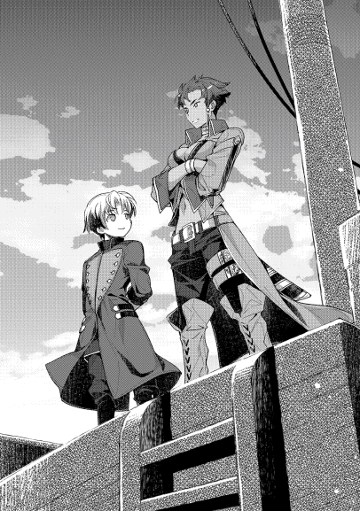
神王国の歴史は、都市国家の勃興期、国家創建期、拡大期、平穏王統治期、動乱期に分けられている。
近年では、その後の大戦を境にした復興期が入ると言われているが、これは何処から何処までを指すかによって、歴史を学問とする者の議論が続く部分でもあった。
ボンビーノ子爵家は、南方貴族でも有数の旧家だ。
国家創建期以来の臣であり、大戦後の粛清時に多くの旧臣・旧家・名家が取りつぶされて所領を没収された中にあって、現在も位階を維持し続ける名門。
しかしながら、大戦の影響は大きかった。
旧家同士のネットワークはズタズタになり、目ぼしい有力な縁故者は粛清やその余波を受けた。没落していった者も、親しい連中の中には多かったし、影響力というものが一気に低下した者同士の、連鎖反応が起きたのだ。
一時期は南方でも屈指の素封家であり、肩で風を切るような権勢家であったのも、今は昔。
かつては、強大な財力と、それに支えられた軍事力もあって統治していた村々も、家が没落していく中にあっては持て余すことになり、その隙を突かれて他家に領地を奪われることになった。いや、実際には奪われる寸前のところである。
しかし、このボンビーノ子爵家の苦境。
隣接するリハジック子爵領などにとってみれば、棚から牡丹餅が落ちてきたような美味しい状況である。
それでなくとも、幾多の権益でこの両子爵家は反目してきた。一気に権益を奪取する、絶好の機会の到来。
元々ボンビーノ子爵領は、南方のレーテシュ伯領から王都に抜ける街道の内、海沿いのルートの傍に村を持っていた。街道沿いの好立地だ。
リハジック子爵領は、同じく南方から王都に抜ける街道の内、森沿いのルートに村があった。
主要な南方街道二つの、両方を支配下に収められるならば、南方から王都に抜ける流通のほとんどを独占出来る。これほど美味い話もそうそう転がっているものでは無い。
故に、ボンビーノ子爵家が放置に近しい状況で手出し出来ないのを良いことに、自分達の支配下に収めようと実効支配を強めていたのだ。
「順調だな」
「はい。今年の税は当家に納めさせましたから、もう一押しといった感じです。年を越してしまえば、丸二年を当家が管理したことになりますので、王家に対して正式に管理権を主張出来ることになります。そうなれば大手を振って軍を入れられますから、いよいよ詰みでしょう」
「余所への根回しはどうなっている」
「新興貴族派の大半は押さえました。まだ南部でも辺境の家はレーテシュ伯の睨みが強い為に追い返される状況ですが、他は当家に賛同して頂いています。力の無くなった伝統貴族が旧来の権益に固執する様を、彼らは良く知っていますから。そこを強調すれば簡単でした」
「で、その伝統貴族への根回しはどうか」
「こちらは難航しています。彼らも明日は我が身と、ボンビーノ子爵家に心情的に肩入れするものが多いようです。ただ、彼らは揃って力を落としていますので、時間は我々の味方であると考えます。焦らずに時間を掛ければ、いずれは必ず当家の味方に付くでしょう」
「そうか、ご苦労」
「勿体ない御言葉です」
部下の言葉に労いの言葉を贈ったのは、アロック＝ハイント＝ミル＝リハジック。
ボンビーノ子爵家に隣するリハジック子爵領の当主。
年は二十代の後半ながら、口元に整えられた髭を蓄えた男。顔立ちはどことなく犬を思わせるが、三白眼の眼光のきつさがそれを強調する。
血筋からすれば先々代リハジック子爵の孫にあたり、先代の甥にあたる。先々代が粛清に遭い、事なかれ主義の穏健派筆頭の叔父が当主の座に座った時。大戦の余波で苦境にあったリハジック家の対外強硬派をまとめて、半ばクーデターのように先代を追い落として当主の座に座った、生粋のタカ派。
優雅に紅茶を手にしながら椅子に腰かけ、部下の報告を聞いている様は、険しさも無く上機嫌な様子だった。
「税収自体はどうか」
「予想通りです。主だった数字だけあげますと、街道沿いの三村とそれらに食料を供給していた一村から、小麦二百八十、銀二十、羊五を徴収出来ました。他諸々と細かい数字は別途の報告にいたします」
「良い数字だ。当家にとって、馬鹿にならん数字ではないか。さすがはボンビーノ家の食糧事情を支えていただけのことはある」
「はっ、当家の既存の収入の倍はあるかと思います」
「このまま当家に無事編入出来れば、金銭収入はもっと跳ね上がるだろうな。笑いが止まらんよ。街道沿いに関を設けるだけで、濡れ手に粟で儲かる」
「ご明察の通りかと」
子爵はお茶で口を湿らせる。
彼の頭の中には、南部街道と呼ばれる、二本の街道のことがあった。これは、南部地域において、最も重要かつ交通量の多い街道だ。大抵の場合は、二つをセットで語られることが多い。
しかし、何故主要街道が二つもあるのか。
元々、街道が二本通されたのには訳がある。
昔々の、森沿いのルートしか無かった時代。街道を領内に通す領主たちがこぞって関所を設け、関税をあちこちで要求した為に、物流が滞った時期があった。
関も最初は数が少なく、治安維持や領内の物流管理の為に最小に抑えられていたわけだが、関税とは領主にとって極めて大きな財源になる為、増えることはあっても減ることが無かった。
日を追うごとに負担の重くなる関税。反比例するように落ち込んでいく物流と活気。
当然、関所を設けている領主達全員が問題を認識していた。流通路の負担を軽くするべきだと、誰しもが考える。
だが、いざ自分たちの関所を減らすとなると尻込みをする。余所の人間が減らせば問題は解決する、と言って互いを罵り合った。
事を重んじたのは、当時の王家と、南方を統括するレーテシュ伯家だった。
両家が外交交渉の末で合意。揃って音頭をとり、海沿いに新たな街道を敷設した。足かけ五年の大工事は、様々な妨害にもめげずに完成する。
それ以降、森沿いのルートと海沿いのルートで競争が起き、無駄に多かった関所も徐々に廃止されていった。
負担が重すぎれば別の道に逃げられる為、自然と適当な水準に落ち着くことになったのだ。
リハジック子爵の関税収入も、ピークを過ぎて半分以下になった。
しかし今、もしもこの両方の街道をどちらも領内に抱えることが出来たなら。
そう、リハジック子爵は考え続けてきた。
政治的な権力の増大や、周辺諸領への影響力拡大はまず間違いない。
また、両街道を共に通すリハジック子爵領だけは競争とは無縁でいられる為、関所を増やすことも、或いは関税を上げることも、やりたい放題で出来る。
影響力が増せば陞爵して、レーテシュ伯に並ぶ伯爵位となることも夢ではなくなる。海上交易を独占するレーテシュ伯と、陸上交易を独占する〝リハジック伯爵〟となれば、手にする権力は計り知れないものになるだろう。
それが、リハジック子爵の夢だった。
「しかし、他家との摩擦が生じる可能性はありませんか？」
「王家は良い顔をしないかもしれんし、レーテシュ伯も嫌がるかもしれん。しかし、物流に決定的な打撃を与えるような愚行を避けるならば、基本的に海上に権益を持つレーテシュ伯とは折り合いを付けられる可能性は高いし、王家は介入の口実が無い。臣下の義務さえ果たすならば、貢納額を増やす程度で王家の顔色も変わるだろう。あとの有象無象は、我々が立場を確立しさえすれば、勝手に尻尾を振ってくる」
「なるほど、さすがでございます」
「全く、勝手に転がり落ちてくれたボンビーノ家様様だな。はっはっは」
リハジック子爵は、近年にないほどの上機嫌が続いていた。
ここ十年来、虎視眈々と両街道の抱合を狙って策動していた苦労が、ようやく実ろうとしていたのだからそれも当然だろう。
「しかし、気になることが二点ほど」
「ん、何だ、言ってみろ」
「は。一つは、ボンビーノ子爵が例のアレを探す動きを見せております」
「往生際の悪い連中だ。いい加減諦めて、我が軍門に下れば悪いようにはせぬものを」
さっきまで、とても機嫌のいい顔をしていた人間の顔が曇る。
紅茶を飲み干し、空になったカップを置く子爵の手つきには、若干不機嫌さが混じった。
「見つかってしまえば相当に厄介なことにはなりますが、如何いたしましょう」
「賊共の手綱はしっかり取っているのだな？」
「はい。当家に繋がる証拠を残さぬようにはしていますが、手配は抜かりなく」
「ならば放っておけ。一か八かで海に出たところで、あの幼い当主では軍も纏めきれずに敗走するしかない。それに水兵連中も、金払いの怪しいボンビーノ家の子供に雇われることは嫌がるはずだ。碌な者が集まるまい。それこそ海賊に追い銭を払うのと変わらん連中しか来ぬだろう」
「その件でもう一点の方を。実は、ボンビーノの連中は援軍を乞うたようです」
「何？ 頼んだ先によっては厄介だな。何処の家に頼んだか......彼奴らの財政状況では、碌な援軍など呼べまい。まして海の上となると、手出しの出来る家などは限られる。ほとんどにうちが手を回していた筈だが？」
「はい。ですが、モルテールン家には、手が回りそびれていたようです。南部の辺境でしたので、後手になりました」
「くそっ、あの連中か!!」
男は、今度こそハッキリと不機嫌になった。
リハジック子爵からしてみれば、街道を利用せずに【瞬間移動】の魔法で移動するモルテールン準男爵は、目の上のたんこぶとも言える存在なのだ。
時には、街道沿いに金をたんまり落としていくはずだった上客を運ばれることもある為、常々邪魔だと感じていた家である。
ましてや、ボンビーノ子爵家を追い詰める、重要な詰めの局面に介入してくるとなれば、不愉快極まりない。
「出しゃばってきたのは、準男爵本人か？」
「いえ。息子が援軍を率いているようです」
「......ならばいっそ、賊とのどさくさに紛れて不幸が起きるように手配しろ」
「よろしいのですか。それでは事が露見した際に、当家は多くの敵を作ります」
「だったら露見せぬようにやれ!!」
捨て台詞を残し、部屋を出て行く子爵の後ろ姿を、部下は慇懃に頭を下げて見送る。
子爵が遠くに行ったことを確認したのち、部下は呟く。
「......潮時、ですね」
部下の呟いた一言は、誰にも聞こえることは無かった。
◇◇◇◇◇
船の中、女団長とペイスは、進路について討議していた。
子爵との打ち合わせで聞いた、海賊の根城が想定される目ぼしい幾つかの島を、効率よく潰していく相談だ。
「こちらの島から、こうやって移動するのはどうです」
「駄目だね。それだと途中に岩礁のある海域を突っ切ることになっちまう。あたいらなら何とか出来ても、あっちの四隻に乗ってるど素人じゃあ、座礁するのが目に見えてるってもんよ」
「ど素人とは、言いますね。一応、ボンビーノ子爵家が抱える海兵と聞いているのですが」
「ダメダメ、あんな連中。ここら界隈じゃ、仕事も無くてどうしようもない落ちこぼれが、子爵様に雇われるんだ。あたいらのオヤジが生きていたころならいざ知らず、ここ最近じゃ小マシな連中でも近寄らないね。多少船に乗った経験があっても、素人に毛が生えた程度が精々。大半はそれ以下だ」
女団長は、手を顔の前でぶらぶらとさせる。ゴミを掃除するような風にも見えなくもない。
彼女は、態度そのもので、如何に子爵の子飼いが使えないかをアピールする。
「実態を聞くと、相当酷いようですね。子爵家の事情は」
「まあね。酷くなってきたのは、ここ十年ほどかね。何でもお隣のリハジック子爵に、金蔓だった利権を奪われだしてから落ち目になる一方って話さ。しかも海賊が出るってんだから、泣きっ面に蜂ってとこかい。今回の件でも、おたくらのことが無ければ、鼻で笑って断っていたよ。子爵様の払いは怪しいが、首狩りのところなら傭兵家業に理解があるってね」
「僕としては、我が家の利益がしっかり確保出来ればそれで良しです。歴戦の勇士たる貴女たちの活躍を期待しています」
「おうおう、どの口で言うんだか。まあ、話を戻せば、少し遠回りになるが、北回りでこの辺りを行くのが良い。ここらは海賊の噂も多い海域を通るから、上手くすりゃ鉢合わせって可能性もある。......あたいらこそ、坊ちゃん達の腕っぷし、期待して良いんだろうね？」
「愚問です。あの父様が心から信頼する部下達です。神王国の何処に出しても恥ずかしくない、一流の武芸者達ですよ。さて、ルートはそれで良いでしょう。操船の指揮は任せます。出来れば、海賊の方々に気付かれないでアジトを襲撃したい」
「そうかい。なら、早速行ってくるよ。うちの連中は、ケツを蹴り飛ばさないと動かないだろうしね」
腕っぷしに自信のあった水龍の牙の面々だったが、モルテールン家の面々に伸されたのが相当に応えたらしく、今は大人しく帆の操作を行っていた。
ボンビーノ子爵領界隈の海を熟知した彼らに曰く、しばらくは良い風があるとのことで、安心して良いとのことだった。
秘蔵の海図を丸めて仕舞い、その足で船員を見に行った女団長を見送り、ペイスは傍に護衛としていたシイツに声を掛ける。
「......何だか、臭いますね」
「作為の臭いってやつですかい」
「シイツも感じているなら、間違いないですね。ボンビーノ子爵家の凋落と合わせ、タイミングが良すぎる海賊の出現。恐らくこの件はリハジック子爵が裏で糸を引いているのでしょう。更にそれを操る黒幕がいるかどうか......は、まだ分かりませんね」
「だとしたら、ボンビーノ子爵の動きも怪しいっすね。海賊の裏に誰がいるかなんぞ、俺らよりはっきり見えていたはず。にもかかわらず、ここで行動を起こす。こりゃ坊、何か嵌められたんじゃねえですかい？」
「ボンビーノ子爵に、我々に言えない隠し事があるのは間違いないでしょうが、嵌める気なら当主自ら出張って来ませんよ。軍功を切実に欲している事情は事実ですから、ついでで狙っているものがある、と考える方が自然でしょうか。目的の本題が海賊討伐なのは、間違いがないと見るべきでしょう。ところでシイツ、羊皮紙を持っていませんか。出来れば一番大きいやつを」
「あん？ そんなものどうするんです」
そう言って、シイツは羊皮紙を一枚持ってくる。海図用のデカい羊皮紙であるが、これ一枚で金貨が何枚も吹っ飛ぶ高級品である。
「さっき海図を広げていた机の裏、見て御覧なさい」
「どれどれ......って、こりゃ、さっきの海図じゃねえですかい。一体いつの間に」
「会話中にこっそりと。さあ、あのおっかないお姉さんにバレないうちに、うちの手の内に入れてしまいましょう。【転写】!!」
「相変わらず油断も隙もねえ。って、おお、良い海図じゃねえっすか。さすがは大言吐くだけのことはある。要注意海域、魔物の情報、季節ごとの天候に風向き、潮の向きと変わり目、陸地同士の距離と目安の時間、補給の出来るポイントはこの記号か？......これさえあれば、ここら辺の海はうちの庭になりますぜ」
「これが手に入っただけでも、当家としては最低限の利益は確保出来たわけです。後は、どれだけおまけを稼げるか、です。重ねて全員に通達。絶対に死ぬなと。死なずに帰るだけで大儲けですから、無理だけはするなと言い聞かせておいてください」
「おまけの額が多すぎるでしょう......」
情報伝達が極めて限られる世界において、正確な情報を載せたものは、金貨を山と積んでも惜しくない価値がある。
ましてや、軍事行動に必須の情報の書かれた地図は、どの領主にしたところで厳重に取り締まりと管理を行う、最重要な軍事機密となる。
海図にしても同じこと。海軍を動かす際に、正確な海図が無ければ暗闇を手さぐりで歩くような状況になる。
腕利きの水兵団が長年積み重ねてきた知識の載る地図など、海沿いの領主ならば自分の娘を差し出してでも欲しがる一品だ。
「出来る準備はしておきませんと。それに......」
「それに？」
「何だか、嫌な予感がしてきませんか？ 他家の介入の気配。依頼人の隠し事。規模の不明な海賊に、本来は子爵家に雇われるはずが無かった水兵団......イレギュラー要素が多すぎます」
「......確かに。こりゃ何か起きそうな感じで」
シイツは、溜め息をついた。
物事は順調に進む方が珍しいとはいえ、ことペイスが関わって、ものが穏便に済んだ試しがないのだ。
出来ることならば、自分達にとって幸運を運ぶ騒動であって欲しい、と願うばかりである。
順調な航海の中、前途には期待と不安が渦巻くのだった。
一人の少年が、船の中にいた。
黒みがかった緑髪を綺麗に切り揃え、育ちの良さが随所に見える男の子。いや、既に成人していることを思えば、子供というのは憚るのだろうか。
その男性とは、ボンビーノ子爵家当主ウランタだ。傍には補佐役のケラウスがいる。
「モルテールン卿はどうしてああも堂々としていられるのかな。年も大して変わらないのに、凄いよね。何か秘密でもあるのかな？」
「秘密と言うよりは、血筋でしょうな。彼の家の子供は皆、賢いと評判でした。姉妹がそうなら、末弟がその中でも特に賢かっただけ、というのはあり得る話です。......しかしそうですな。考えてみれば、ただ単なる生まれ持った資質だけではないのでしょう。何かと目立つモルテールン家ですから、きっとかなり厳しく教育を受けたのだと思います。秘密と言うなら、家の教育方法に何か有るのやも知れません」
「見習わなければならない、かなあ。子供の教育のやり方なんて、教えてくれるとも思えないし。ところでケラウス、船着き場でモルテールンの人たちが言っていたことは本当だと思う？」
「言っていたこと、とは？」
「ペイストリー＝モルテールン卿が、部下達よりも強いという話だよ。部下の力量は、水龍の牙の男たちを倒すところを、この目で見たから分かるんだけどさ。それ以上に強いとなると、ちょっと信じられないと思わない？ 例えば覗き屋なんて、腕っぷしも結構強いって噂じゃない。それ以上ってことは、国でも指折りってことになると思う。交渉材料の可能性は無いの？」
「ブラフである可能性はゼロでは無いでしょうが、あの場面でやる理由もありません。力量を高く偽って、いざという時危険に晒されるのは当の本人ですから、実戦の前にやることではないでしょう。まず事実だと思います」
自分たちの武力や実力を、高く偽ることで交渉を有利に働かせる交渉術は、存在する。
ハッタリとして、見せ掛けだけでも強そうに見せられれば、不要なトラブルを避けられることも多いからだ。
しかし、今回のように実働が伴う中で、実力を高く偽ることは相当に危険性が高い。ハイリスクローリターンのお手本のような行動。
平常時であれば強そうな人間は遠巻きにされるが、有事の際は真っ先にお声が掛かるのだから。
否応なく実力を使わねばならない場面になって、化けの皮がはがれて困るのは、ハッタリをかましていた人間である。
だから、彼らが嘘や虚飾でペイスの実力を誇張している可能性は限りなく低い。傭兵家業の信用を無くして困る、モルテールン家の政治状況も踏まえるならば、あり得ないと補佐役は断言した。
「なら本当に、あそこにいた誰よりも強いということ？」
「そうなります。私の調査では詳しく分かりませんでしたが、ペイストリー様が持っている魔法は、相当に強力ということなのでしょう。魔法を使えるという利点は、かなり大きい。さすがに父親ほどの汎用性は無いかとは思いますが......推察しますに、あれほどモルテールン家の人間が信頼していたということは、父親よりもより直接的な武力行使に向く魔法なのではないかと。【発火】や【投擲】といった魔法での一騎当千の活躍話は、過去に聞いたことがございます。絵を描く魔法という噂もありますが、隠し玉を持っておられるのでしょうな」
「世の中は不公平すぎるよ。何それ。父親は英雄だし、顔もカッコいいし、魔法も使えるし、戦功もあげているし、しかも喧嘩も強いなんて、ずるい!!」
「そういえば、年上の婚約者もいるそうですな。かなりの美人という噂を耳にしたことがあります」
「ボクも綺麗なお姉さんが婚約者に欲しい!! って言っても、今のうちの状況じゃ高望みは無理だよね。はぁ、いいなあ、モルテールン卿は。本当に羨ましいよ。魔法の半分ぐらい分けてくれないかな？」
「無いものをねだっても仕方がありませんし、良いことばかりでも無いと思われます。モルテールン家の嫡子殿が恵まれているのは事実でしょうが、それ故に多くの高位貴族が取り込みを狙って策動しているとか。目立つ存在というのは、良いことばかりではありませんよ」
「そうだね。その点我が家は、お偉い人に目を付けられることもなく、いない者扱いと......」
「そう、卑下なさいますな。今回の作戦が上手くいけば、当家も興隆間違いなしです」
ウランタは、愚痴をこぼす。
ペイスと同年代とあって、子供らしい気質がまだ多分に残る年頃。
お家の事情から子爵家当主となったはいいが、苦労を重ねる境遇にストレスもあれば不満もある。偶には吐き出したくもなる。
ましてや、隣の芝生は青く見えるもので、ペイスの境遇はよりよく見えてしまう。
羨ましい、と思ってしまうのは、仕方のないことだろう。
ウランタの愚痴。一見すると、子供の駄々のようにも見えた。
だが、ケラウスは、補佐役として気付いている。
下手な軽口などは、怖さと緊張を隠そうとしている現れであると。実際、愚痴をこぼしている本人の手が、先ほどからずっと強く握られたままになっている。明らかな緊張の印だ。
それも仕方がない。何せ、今からはまさしく殺し合いという非常事態になるのだから。
ウランタは、一人の通信兵が、旗を抱えてやってきたことで、否応なくそれを自覚させられる。
「ご報告です。先頭の船より通信がありました」
「......内容は？」
「前方に敵影発見」
「っ!! 数は幾らぐらい？ 距離はどれぐらい？ 正確な方角は？」
「えっと、旗は敵発見とだけ掲げられておりまして......」
ウランタの質問に、通信兵は戸惑う。
旗による通信は、事前に取り決めている内容の旗を掲げることで行う。細かい内容の伝達は相応に時間が掛かる為、第一報としては重要な用件のみを簡潔に伝えるのが当たり前な為だ。
色々と聞かれたところで、知らない物は答えられるはずもない。
通信兵に、あれこれと細かい質問をしたウランタも、その点未熟である。だが、通信兵も未熟だ。
熟練の通信兵ならば即座に「分かりません」と答えるところなのだから。
こと戦時において、報告は簡潔かつ正確にすべきで、知らない言い訳をぐだぐだ言うのは、時間の無駄である。
それ故、補佐役が間に立つことになった。
「ウランタ様、ここは改めて敵の規模や距離。そして方角を先頭の船に尋ねた方が良いでしょう」
「そう、そうだね。よし、モルテールン卿の船に再度通信。内容は『敵の規模と方角と距離を報告せよ』と」
「分かりました」
ケラウスは、復唱しない通信兵に対する叱責を言いかけて思いとどまり、主君への助言に留めた。
通信兵とは、船同士で連絡をやり取りする専門職のこと。陸でも同じような兵科は存在するが、こと海上にあってはその重要性は極めて大きい。
旗の振り方や種類で情報のやり取りを行う為に、知識と経験が要求される類の兵だ。
ボンビーノ子爵領が大戦後の政変で力を落とす中、熟練の通信兵はどんどんと余所に引き抜かれたり、辞めていったりした為、この船の通信兵もまだ若い。
情報の精度に関して、まだまだ未熟なのだ。
「ウランタ様、敵影となれば、戦闘準備も必要かもしれません。まだはっきりとしたことは分かりませんが、手遅れになるよりかは、勇み足になるぐらいで良いでしょう。御準備をなさいませ」
「わ、わ、分かった。い、いよいよ戦うのだよね」
「そうご緊張なさいますな。この船が戦場になるのはどうあっても最後。最初に戦うのはまずペイストリー様方の船になります。領内でも名高い水龍の牙を手懐け、精鋭揃いのモルテールン卿の船は、今回の主力です。そうそう不覚もとりますまい。どうぞ、お気持ちを楽に、どっしりと構えておかれますように」
「そ、そ、そうだね」
慌ただしくも旗艦で戦闘準備が始まろうとしていた頃。
敵発見と報告した当の先頭の艦、バロンでは、実にのんびりとした空気になっていた。
旗艦が、すわ戦争かと弓に弦を張り、海戦用の鎧を着込み、仮眠していた夜番連中を叩き起こすのとは対照的に、モルテールン家ではほのぼのと食事の準備を行う程だった。
「シイツ、敵艦を見つけたんですって？」
「俺の【遠見】で、チョロっとだけ。向こうさんにも目の良いのがいるらしく、こっちに気付いて、途端に逃げの構えでさあ。一仕事終えた帰りのようで、かなり弛緩した感じでしたね」
「ならば、船の発見場所近辺は、彼らにとっての安全地帯と見てもよさそうですね。敵の根拠地はこの近場に有る。数日掛かると覚悟していましたが、初日の早々から当たりを引くとは、運が良いですね」
「根拠地ったって、一つとは限らんでしょう。用心深い連中なら、幾つか隠れ家を用意しておくもんですぜ？」
「なるほど、さすがシイツ。盗賊だった頃の経験談ですね？」
「人聞きの悪いことは言わんでくだせえ。俺は、傭兵だったことはあっても、盗賊や海賊だったことはねえです」
シイツが過去所属していた傭兵団は、武侠でならした少数精鋭の傭兵団だった。
カセロールと共にモルテールン領に来る前は、そこで剣と魔法を振るって活躍している。
盗賊と大して変わらない傭兵団も多い中、それらとは一線を画す数少ないまともな傭兵団であったし、そこに所属していたことはシイツの誇りである。
下手に茶化してくれるな、とペイスに物申す。
それに頷きながら、尚も軽口を言おうとしたペイスの許に、通信兵が駆け込む。
「おいモルテールンの坊ちゃん、敵の位置と方角と数を教えろって通信が来たぞ」
「ふむ、ならば『東北東に距離十以上、数少なし、敵逃走中。指示願う』と返信するように」
「了解」
ペイストリー達の乗る船は、バロンという船名の戦闘艦。
通信兵も一応ボンビーノ子爵家が用意してくれていたのだが、成人したての若者であった為、あてにならないとばかりに水龍の牙の一人が役目を替わった。
三十を過ぎた、シイツと同年代の男。口は荒いが、仕事は確かである。
「......坊、何で聞かれても無いのに、相手が逃走中だってことまで伝えたんです？」
「追うか追わないかの判断の役に立つでしょうし、その方が子爵閣下も落ち着くと思ったからです。初陣ともなれば気も逸る。敵が見えたと聞けば、即座に剣を抜く輩も多いと聞きます。落ち着いて判断してくれることを期待して、あえて付け足しました」
「普通は一旦ここで体勢を整えるでしょう。俺の【遠見】で見えた距離に、この大所帯で追いつくのは無理ってもんですぜ。相手からすれば、アジトまで逃げ切った上で準備万端迎撃してくるか、アジトをほっぽりだして更に逃げるかの二択でしょうよ」
「そうですね。ですがこちらとしては、どのみち追うしかない。逃走中という情報を知った上で追う決断をしたのと、とにかく何も分からず戦闘状態に入ったままずるずると追いかけるのとでは、意味が違います。前者の方が、司令官っぽい仕事をした気になるでしょう」
「子爵閣下の手柄にする為ですかい。お優しいことで」
ペイスが言ったのは、あえて聞かれていない余計な情報を与えることで、判断の余地を増やしたという意味だ。
海賊を討伐する為に出航した以上、海賊を追わないという選択肢はあり得ない。
だが、敵が逃走中だがどうするか、というクエスチョンに応える形で、追うと決める方が、仕事をした気分になるものだ。
答えが初めから分かっていながら聞くのだから一見すると無駄に思えるのだが、〝あくまで指示は総指揮官が出していた〟という建前のアピールという、政治的な配慮だ。
戦後にトラブルがあった時、何かと役に立つ、とペイスは考えている。
「坊ちゃん、返信だ。一旦船を止めろってよ」
「分かりました、『了承』の返信を。あと、ニルディアさんを呼んできてください」
「困ったらとりあえず立ち止まるか。経験不足の指揮官にしちゃ、上出来じゃねえっすか？」
「シイツ、一生懸命に頑張る人間を茶化すものではありませんよ」
「確かに、そりゃすいません。どうしても、どっかの誰かさんが初陣だった時と比べちまうもんでして。あんときゃ、酷い目に遭ったもんです。初陣の癖に大人しさの欠片もねえで、人使いの荒いこと......」
「あ〜ニルディアさん、遅いですねえ」
「坊、誤魔化しましたね」
ニルダは現在、操船の指揮を執っていた。
船の動かし方や、風の読み方については、ペイス達よりも遥かに詳しいので、完全に任せている形になる。
伝令が届き、ニルダがペイス達の元に来るまでには、それほど間が無かった。
「ニルディアさん、この先に錨を下ろせるところは？」
「あん？ 確かちょっとばかし南に行けば、船を止められる海域がある」
「ならば、そこまでこの船が先導しましょう。一旦そこで、作戦会議となるでしょうから、僕が旗艦に行ってきます。ニルディアさんもその際について来てください」
「あたいがかい？ 坊ちゃんが連れてきた奴らを供にすりゃいいじゃないか」
「貴女は僕らよりも海に詳しいですから。今までの動きを見て決めた、適材適所という奴です。今回の討伐に限り、貴女を僕の参謀とします」
「参謀ってのは何だい？」
「知恵袋、ですね。正式な軍の役職では補佐官になります。これは総指揮官殿にも了承を貰うつもりです」
ニルダは、困惑と共に絶句した。
神王国のみならず、この世界は身分の上下にうるさい。それが平穏と秩序を守る為の正義だと信じる者が多いからだ。
ニルダ達は、貴族どころか従士でもない。船で街から街に移動することが多く、市民権も無い下層民。
市民権が無い為、何かあっても裁判を受けることは出来ないし、〝自分達の領主〟がいないので守ってくれる者もいない。
故に貴族や、或いは従士でも、不評を買えば裁判なしで一方的に裁かれてしまう。彼女たちが集団を作るのは自衛の為でもあった。
犯罪者や奴隷を別にし、流浪者や貧民街の住人を除けば、一番低い身分なのが彼女達。
それが貴族の参謀となれば、酒場でも笑い話の冗談にしかならない。
「......坊ちゃん、変わり者って言われたことは無いかい？」
「不本意ながら、よく言われます。それで、答えは？」
「あたいに、断ることは出来ないさ」
ニルダの困惑をよそに、ペイスはニコリと微笑んだ。
「さて、それでは行きましょうか」
船が停止出来る海域に到着した後、ペイス達は連絡用の小舟で旗艦に移動した。
本来二人乗りの小さい船なのだが、ペイスが非常に小柄な為、ニルダとシイツが御伴として同乗出来ている。
旗艦の中は、かなり物々しい雰囲気が漂っていた。
乗組員の全員が武装していたし、明らかに戦闘態勢と分かる慌ただしさと落ち着きの無さが感じられた。
「これは、思っていた以上に子爵閣下は狼狽しているようですね」
「素人と変わらんでしょうぜ、これじゃあ」
「敵が来ているのに危機感が無いよりは遥かに良い、と思うことにしましょう」
「坊も前向きですね」
旗艦の中には、指揮官の乗る船室が存在する。
船の中で操舵室に次いで重要な場所だ。
招かれて中に入れば、そこには完全武装で固めたウランタの姿があった。
対するペイスは、簡易式の軍服である。前ボタンで留める長袖の上着と、裾丈をきっちり足に合わせたズボン。色も黒っぽい色で装飾っ気に乏しい。
剣こそ護身用に佩いているが、今から戦いに赴くという格好では無い。
当然、ウランタからすればペイスの格好は危機感と緊張感の無さに思えた。海賊を侮っているのではないか、とも思ってしまう。
「モルテールン卿、何故そのような格好なのですか？ 敵が来ているのでしょう？」
「敵が逃走中とご連絡した通りですから、戦闘はまだまだ先です。今から疲労を溜めても仕方がないので、先に作戦を相談しに参った次第です」
ペイスの答えに、子爵の後ろにいたケラウスなどは感心することしきりだ。
モルテールン家の跡取りが、既に戦功をあげていると聞いていたのは事実だが、容貌からどこかしら胡散臭い気もしていた。だが、今目の前にいるのは、確かに軍人だった。
有事とは、どうしても緊張とストレスが付き物。だからこそ、優れた軍人ほど、気の緩め方や、休息の仕方を知っているもの。
その点、自分の主人はまだまだ甘いと、つい比較してしまった。
そんな部下の想いを知ることもないウランタは、ペイスの説明に頷きつつも、後ろに立つ人間に目を止める。
「相談というのは構いませんが......何故ここに水龍の牙の方が？」
「彼女を、私の補佐官にしたく、そのご相談もあって連れてきました。それについては、ご許可願えますか？」
「彼女は下層民という身分ですが？」
「知っています」
「......それでもあえてとなれば、卿には何かお考えがあるのでしょう。結構です、許可しましょう」
「閣下の御配慮に感謝いたします。それで、今後の方針なのですが閣下はどうお考えですか？」
ペイスは、椅子を勧められたのでそのまま腰掛ける。
船の中なのでソファーのようなものではなく、木箱に近い。実際、木箱のように収納スペースとしても使われるものだ。申し訳程度に布が張ってあるが、船の中というのもあって快適な椅子とは言い難い。
普通の椅子を持ち込むと、揺れの影響で文字通り椅子が飛ぶこともあるので、安定性のあるものが船中では使われている。
現状の認識を刷り合わせ、情報共有を行った所で、今後の方針を決めなければならないと、ペイスはウランタにどうするかを尋ねた。
「なるほど、モルテールン卿の予想では、近くに海賊の住処があると？」
「こちらを見つけて真っ先に逃げ出したことや、その際の様子から、間違いないと思います。シイツの【遠見】は確かですし、状況だけを見れば疑いようがない」
「覗き屋の実力は知っています。そうですか、思っていた以上に近場にいたのですね......」
ペイスは、シイツが二つ名を呼ばれて、僅かに嫌そうな顔をしたのを横目で見つつ考えた。
海賊が、子爵領の港街から大して距離も無い所に巣を作っていた、という事実について。
普通、海賊というのは貴族の軍を恐れる。取り締まりは彼らが行うのだから、それは当然だ。
ならば、普通であれば出来るだけ軍の根拠地から離れようとする。警察署の前で不法駐車する人間がいないようなものだ。
しかし、現実として予想以上に近場に賊がいる。
これは、可能性として二つ考えられた。
一つは、海賊にボンビーノ子爵家が舐められているという可能性。
どうせ取り締まりも出来ないだろうとたかを括り、恐れることも無く町の近場に巣をつくる。
もしそうであれば、事は簡単だ。
舐めきっている相手が出て来た所で、雲隠れすることは考えないだろう。十中八九、返り討ちにしてやろうと出張ってくる。そこを一網打尽に出来る可能性は、かなり高い。
問題の根源を、根こそぎ治療出来る絶好の機会。
もう一つの可能性は、賊が海賊行為以外の目的を持っている可能性。
海賊行為だけを目的とするのならば、出来るだけ官権の及ばない場所に隠れる。だが、それを押してもあえて近場に来たがるのならば、別の目的が隠れている可能性はあった。
例えば、子爵領の様子を窺って襲撃を企てているだとか、子爵の身柄を目的としているだとか。暗殺の為に様子を窺っている可能性もある。
これらの場合なら、出来る限り情報を得やすい近場に巣を作る必要があるだろう。
もしそうであれば、子爵が討伐に出て来た時点で、案外あっさりと逃げ出してしまうかもしれない。
さて、どちらが正解なのか。
どちらの可能性も、現時点では確信を持てるものではない。
そこでペイスは、あえて判断を子爵に委ねた。
ペイスの話を聞き、じっと考え込み、補佐役と何やら長い間相談していたウランタであったが、結論が出る。
「一旦、ここで態勢を整えます。休息も取り、万全の準備を行った上で明日、夜明けと共に海賊のアジトと予想される一帯を捜索します。戦闘が予想されるので、先鋒は引き続き、モルテールン卿に頼みます」
「承知しました。閣下の指揮の下、微力を尽くします」
各々の船に伝達が行き交い、ペイスもバロンに戻った後、船員に伝達した。休息命令である。
次の日の夜明けと共に行う作戦行動が伝達され、その準備に各員が慌ただしくなる中。
結局、準備は徒労に終わることになる。
その夜、旗艦が炎に包まれた。
「一体、何があったのですか!!」
「分かりません。旗艦がいきなり燃えだして、あの通りです。何やら争っているような気もするのですが、暗い中のことで、はっきりとは......」
「シイツを叩き起こして甲板に来るように伝令!!」
「もう来てるんで、その必要はねえですよ。この騒ぎに寝こけるほどお上品な育ちではねえもんで」
休息命令に従って、目ぼしい連中が全て寝ていた時。
慌てふためいたような見張りが、ペイスを叩き起こさんばかりの勢いで駆け込んできたのだ。
急いで甲板に出てみれば、ペイスの目に映ったのは燃え盛る炎。
夜という、空と海が黒一色で溶け合う時間。本来であれば境など分からないはずの海面が、はっきりと赤い境界線を照らし返していた。
火中に有るのは旗艦。木造船が何よりもおそれる船の火災とくれば、只事では無い。
煌々と夜空を照らす明かりがあるのだから、遠目からでも何処に旗艦があるのかはっきりと見える。
それ故、シイツの【遠見】は十全に威力を発揮した。
「シイツ、見えましたか？」
「これはちいと不味いですぜ。どうやら、内紛です」
「内紛？」
「同じ格好の奴ら同士で争ってます。ありゃ海賊じゃねえですね。ボンビーノ家の内輪もめですかい？」
「そんなわけないで......不味い。すぐに船内を捜索し、侵入者の確認。船員を全員叩き起こして、周囲の警戒を戦時体制に!!」
燃え盛る旗艦の様子を目にした瞬間、一瞬呆けたペイスであったが、さすがに現状を把握すると動きは早かった。
ボンビーノ子爵家の船全てで争いが起きているらしいことを見れば、何があったのかを知るのは容易い。
「坊、もしかして」
「ええ。状況から推察して、ボンビーノ子爵は嵌められたのでしょう。恐らく、リハジック子爵あたりに。休息命令を見計らったように動いたところを見れば、計画的なもの。内通者の可能性も高い。うちの船にも必ず何かしてきているはずですから、工作員の潜入と、敵の有無を確認するのは急務です」
モルテールン家の次期領主が指示を飛ばしている時。
ドタバタと騒がしい音が、船内からした。
何事かと思っていると、四人程の男が網で巻かれて連れてこられる。
「全く、人の安眠を妨害するとは、躾の悪い奴らだ」
「糞が!! 放しやがれ!!」
悪態をつく連中を、何人かで協力して運んでいたらしい。
その中心にいたのはレーテシュ伯の恋人、セルジャンだった。
「セルジャン殿、一体何があったのです？」
「外が騒がしくなる少し前に、船に火をつけようとしていた連中がいたのですよ。私はモルテールン家の人間ではないので、いること自体が予定外だったのでしょうな。夜中に気配を感じて確認しようとしたところでばったりと。こいつらも私に気付いたので声を掛けたら、四人がかりで襲ってきました。甲板も慌ただしい様子だったので只事ではないと、縛り上げて連れてきた次第です」
「それはそれは。よく未然に防いでくれました。ありがとうございます。お手柄ですよ」
「この程度のチンピラに、後れは取りませんよ。それより、気を付けた方が良い。ただ単に火つけだけで済むわけがない」
「ええ、分かっています。すぐにも、襲撃があるかも知れません。セルジャン殿も御準備を願います」
火をつけようとしていた連中は、ボンビーノ子爵が手配していた漕ぎ手の一部だった。セルジャンやシイツによる強引な事情聴取の結果、結構な金で貴族の使いを名乗る男に雇われて、事に及んだらしいことが判明。
尚、船内捜索と事情聴取の結果から、幸いにもネズミはこの四人だけであったのは救いであった。
だが、この騒動に怒り心頭なのが水龍の牙の面々だった。
逃げ場のない船の上での火災というのは、船乗りにとって嵐や大波以上に恐ろしいものであり、海の上に暮らす者にとってみれば、放火は絶対の禁忌。最上級の禁則事項。
海の男のタブーを犯した連中は絶対に許さないと、放火魔たちをタコ殴りにし始める。簀巻きにされた男たちの歯が飛ぼうが、目玉が潰れようが、骨が折れようがお構いなし。シイツの事情聴取が穏健に見えるほどの暴力の嵐。
結局、ペイスが止める頃には、生きているのが不思議なほどの有様になっていた。アンモニア臭がまき散らされた中、ペイスは顔を顰める。
「放火魔も、れっきとした証拠です。それ以上やれば死んでしまうので、その辺で。それよりニルディアさん、旗艦に救出の要員を出せますか？」
「......難しいね」
最後に蹴りを一つ見舞った後、ニルダは答えた。
「駄目ですか」
「この船を近づければ、火の粉でこっちに飛び火する。船を預かっている以上、近づけるのはごめんさ。小舟でなら近づけるかもしれないが、二人乗りの船で行けたとしても、乗り込む前に矢の的。乗り込むにしても囲まれる。第一、あっちの船はもう持たないよ」
もう持たない。
そう言ったニルダの言葉の通り、火に包まれていた旗艦に決定的な動きがあった。
帆を上げる為の支柱が、根元から折れていく様が遠目からでもはっきりと見える。
「ああ、脇の辺りにでかい気泡が出た。こりゃ船内に大量の水が入ったね。いよいよ沈みだすよ」
ボコッという音が聞こえてきそうなほどに、大きな泡が旗艦脇の海面に浮かぶ。
ペイスはニルダの解説を聞くことになったが、これは船が沈む前に起きる予兆なのだそうだ。こうなると、船底にも穴が開いていると見るべきだという。
そして、気泡を発するほどに損壊した以上、船はもう沈むしかないとも言った。
誰もが旗艦に目を向ける中、夜目の利くグラサージュが動くものに気付く。
「若様、旗艦から小舟が一艘来ています。誰か乗っているようですが、どうしますか」
「弓構え、灯りを持ってきてください」
甲板に上がってきていた連中のうち、数人が弓を構える。
ギリリと音が揃い、何時でも矢が放てる格好。
燃え沈む旗艦の灯りで逆光になっていた為、確認の為に船上から小舟を照らす。そこには、見知った顔があった。
弓を向けられていることに気付いたのか、慌てた声がする。
「待ってください。私です。モルテールン卿」
「弓構えやめ。総司令官殿です。グラスとセルジャン殿は矢を番えたままで、何時でも構えられるように。小舟の後ろや周りに、良からぬ者が付いていないか確認。いたら、とりあえず撃ってよし。確認不要」
「はっ」
小舟に乗って先頭艦にやってきていたのは、ボンビーノ子爵ウランタとその補佐役ケラウスだった。
甲板に引き上げてみれば、子爵はかなり憔悴した様子。何があったのかと、ペイスは説明を求めた。
「面目ない。当家の手配した者の中に、何処かの手が伸びていたようです。皆が寝静まった頃を見計らって、全ての船で一斉に動いたらしく、気が付けば既に火に囲まれておりました。海へと逃げだす者も多く、私も小舟に乗り込むのが精一杯で、モルテールン卿の船だけは静かでありました為こうして......」
「僕を信用してもらえていたのはありがたく思います。この船に来た以上、もう安心です」
ウランタは、泣きそうな顔をしていた。
初陣で、寝こけていた間に部下の反乱が起きて逃げ出す羽目になった、という事実を受け入れる心痛からである。旗艦以外が火つけだけは阻止出来たことを見れば、それも仕方がない。
事実、ペイスの船は統制がしっかりと行き届いていたのだから、比較してしまうとどうしてもウランタの拙さが目立つ。
「誰の手引きか分かりますか？」
「分かりません。怪しいと思えるところは有りますが、一つというわけでは無いので」
「ふむ......ならば、ちょっと調べてみますか。総員戦闘態勢、総力戦用意。旗艦の炎を目くらましに、他の船の反乱分子を鎮圧します。最低でも一人、指揮官クラスを生け捕りにすることを優先。下っ端は、抵抗すれば容赦は要りません。まずは二番艦から行きましょう。ニルディアさん、海蛇ニルダの出番です。難しい操船になりますが、頼みます」
「よっしゃ、お前ら気合入れな!! あたいらの力を、見せつけてやるよっ」
この瞬間から、バロンが旗艦になった。
ウランタとケラウスを保護し、落ち着かせている間、水龍の牙の面々は大口を叩けるだけの見事な操船を見せる。
旗艦の脇のギリギリ。それも風上をキープしてすり抜けるという高難易度の操船を行い、そのまま勢いを付けつつ他の船に接近していく。
こすり付けるように際どい動きで船同士が近づく間際、ペイスが声を張り上げた。
「まだあちらの船には、此方の味方として戦っている者もいます。弓は撃てません。直接乗り込んで制圧します。全員、準備はいいですね？ 抜剣!!」
「モルテールン卿、何故貴殿まで剣を抜くのです」
ウランタの驚愕に対し、ペイスは当然の顔で答える。
「僕も出るからに決まっています。今です、全員かかれ!!」
「「うおぉぉぉ!!」」
戦場で獣の咆哮が重なる。
船の揺れにタイミングを合わせるように、一斉に船員たちが二番艦に飛び移っていく。鉤の付いた縄などで船体を固定し、まるでサーカスのような曲芸じみた動きで船に飛び移っていく者もいた。
途端に始まる、敵味方入り混じっての強襲戦。
「ボンビーノ子爵に味方する者は左袖を捲れ。さもなくば敵とみなして叩っ斬る!!」
元より、ニルダが素人同然と言い切った海兵たちが相手。
船の揺れにも慣れ、船上の戦いに最適化されている水龍の牙の無頼達の活躍は目覚ましい。船の上を文字通り飛び回るように、またたく間に制圧していく。
意外なことに、そんな彼らに交じり大活躍を見せていたのがセルジャン。
恵まれた体格もあれば、培ってきた武芸もある。船の上の戦いについても、ある程度の経験があるらしく、水龍の牙の面々も驚くほどの〝海の男〟がそこにいた。
彼らは敵味方を仕分けしつつも、敵には容赦なく剣を振るう。
モルテールン家の面々も、堅実に歩を進めている。
一塊になって死角をなくし、戦場を常に見渡しながらの行動には落ち着きがあった。
「ほう、さすがはセルジャン殿。伊達に坊と切り結んだわけじゃねえですね」
「......これは、使えそうですね。色々と」
「お、またペイス様が悪い顔になってる。俺初陣なんですから、無茶はやめてくださいよ。まだ恋人もいないのに死にたくない」
「ラミトは、いい加減女性の前だと緊張する癖を直すべきですね」
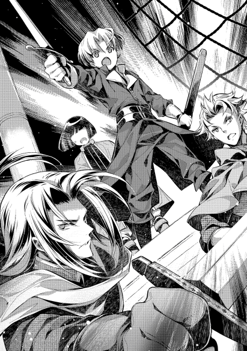
「どうも女の子の前だと意識しちゃって......まだ今回の方が落ち着きます」
「普通は逆でしょうに。初陣で落ち着くという言葉が出るのは、異常ですよ」
「坊がそれを言っちゃ......っと、せい!!」
船内の陰から襲い掛かってくる者も危なげなく倒していく。
「お、どうにもこいつが頭だったようですぜ。他の連中が逃げ出し始めた」
「ふむ、ならば」
ペイスは息を吸い込んだ。そして一気に声を出す。
「総員、掃討にかかれ!! 深追いは無用です」
俄然、戦闘員の意気が上がった。
何故ならば、水龍の牙にしてみれば、逃げる相手というのはこれ以上ないほどに刈り易い敵だからだ。活躍した内容によって報酬を付ける今回の契約から言うならば、金が目の前を泳いでいるような美味しい状況である。つかみ取りで金貨銀貨を取り放題の稼ぎ時に、より一層の気合が入る。
そんな勢いづいた状況であれば、逃げる連中も必死になって逃げる。海に飛び込む。
またたく間に、船上は味方と死傷者のみとなった。
「よし、次行きます。総員、バロンに乗船。この船はウランタ殿に引き渡します」
乗艦していた旗艦を失ったウランタに対し、制圧した二番艦を新たな旗艦として引き渡す。
ペイス達は引き続き他の船の制圧に向かうが、ウランタ達は後方で、海に落ちた味方の救助活動にあたることになる。
それぐらいはやらせて欲しいと、ウランタ自身が言いだしたからだ。
戦場の経験が豊富な人間の揃っているモルテールン家御一同様。
一旦掴んだ流れと、高まった士気をもってすれば、他の船の制圧もあっという間だった。
最後の方になれば、何もせずとも敵が逃げ出した。寒さの厳しくなってきた季節、まず生きて陸地にたどり着くのは難しいのだが、それでも船上よりはマシとばかりに海の中へと飛び込んでいく連中がいた。
無論、モルテールン家の人間も全くの無傷では無い。ラミトが軽傷の切り傷を負い、今回雇っていた人間にも刺し傷による重傷者が一名出た。死者が出るかどうかは、重傷者の予後次第。
全ての制圧を終え、敵指揮官格の人間がペイス達の元に引きずり出される。人数は四名。恐らく、一つの船に一人の指揮官を置いていたと思われるが、数が足りないのは大暴れしていた連中に始末されたからだ。そして、生かしたまま連行したのにも訳がある。
あまり気持ちの良い物ではないと分かっていながら、軍の指揮官として情報を強引に聞き出さねばならないのだ。
後ろ手に縛りあげられた者の前にペイスが立つ。捕縛された者の後ろにシイツが位置取り、縛られたままの手の指を握る。いつでも指を潰せる形だ。
「それで、あなた方の雇い主は誰です？」
「はん、俺たちは子爵の圧政に立ちあがった善良なうぎゃあぁ!!」
「綺麗な小指でしたね。シイツ、次は薬指で。そうそう、話したくないなら別に構いません。貴方以外にも捕まえた者がいますので。もし話したくなったのなら、早いうちに話すことをお勧めしますが。それで、他の仲間はいますか？」
「だから知らなぎゃああぁあ!!」
「仲間をどうやって見分けていたのですか？」
「あぎゃえええ、止めろ、止めてくれええぇ!!」
「行動決行を指示したのは何時ですか？」
「目が、目があぁあ!!」
指揮官格の四名ほどがそれぞれ別々に聞き込みの対象になり、情報の裏付けと口裏合わせの阻止を行う。
しぶとい人間もいたが、急所を潰されかける段になってようやく口を割る。
そうやって聞き込んだ結果、幾つかの情報が整理された。
「黒幕はやはりリハジック子爵。しかも、逃げるルートに海賊の待ち伏せですか......」
反乱した連中は、落ち目で凋落著しいボンビーノ子爵家を見限り、今回の作戦が上手くいけばリハジック子爵に、今以上の待遇で取り立てて貰えると約束されて内通していたと語る。
捕まっても自分達と繋がっているとは言うなと言い含められていたそうだが、モルテールン家の歴戦の古強者と次期領主に掛かれば、口を割らせるのも容易い。
海賊の内情が、彼らと同じようなリハジック子爵子飼いの手下という事実も確認が取れた。
おおよそ、想定していた可能性の中では、悪い方に該当する。
事実が明らかになった時点で、行動方針の話し合いが始まった。
総指揮の立場にあるウランタ自身が疲弊している為、ペイスが暫定で指揮権を持っている状況で。
「俺たちは戦争をしようってわけじゃねえでしょう。ここは海賊の待ち伏せを避けつつ一回退いて、改めて態勢を整えるべきじゃねえですかい？ こうやって証拠も揃ったんですから、外交でリハジック子爵に手をひかせることも出来るでしょうよ。ただの海賊相手ってのと、子爵家子飼いの海兵相手ってのとでは、まるで意味が違う」
思慮深い常識論を言うのは、モルテールン家従士長の役目。
今回の海賊討伐の目的は、海賊被害を無くし、海洋交易路を確保することにある。また、その副産物として、ボンビーノ子爵の実力を喧伝する狙いだ。
恐らく素直に認めはしないだろうが、リハジック子爵が黒幕と分かったのだから、交渉次第で海賊という名の兵を引かせ、海洋交易路の安全確保が叶う可能性も出てきた。それを達成出来れば、ボンビーノ子爵も面目を施せる。
ここであえて戦わずとも、作戦目的を達成出来るのなら、退くのも勇気。
そうシイツは言った。
無論、ペイスとしてもその意見は頷けるものだった。
別に戦闘狂というわけでも無い菓子狂いのペイスは、一旦はシイツの意見に賛同し、大きく遠回りさせての帰路につきかけた。
帆を上げ、さあ船を出そう、としていた矢先。
ペイスは何を思ったのか、船を海賊の待ち伏せる海域に行くよう命じた。
「坊、何を考えているんです!!」
「ちょっと、良いことを思いついたのですよ」
そう言った少年の顔には、これ以上ないほどに爽やかな笑顔が浮かんでいたのだった。
その時、男たちは困惑していた。
「おい、ここはどこなんだ？」
リハジック子爵家の家人、ガーブンド＝タカヤハィは、今自分達が何処にいるのかが分からなかった。
辺りには、自分の部下が転がっているものの、さっきまでいたはずの場所から全く違う場所にいること以外には分からない。
止む無く、周りで寝こけている連中を無理矢理起こす羽目になる。
その中の一人が、寝惚けたような声で周りの風景に意見した。
「どうやら、モンィエの辺りのようです。俺、ここの生まれですんで、風景に見覚えがあります」
「ほう、なるほど。ならば、とりあえずの腹ごしらえぐらいは出来そうだな」
一昨日の晩から、特殊事情により何も食べずに過ごしてきた。都合一日半何も食べていない。喉もカラカラに乾いているし、腹も空きすぎで倒れそうなほど。
この村出身の連中が、自分の生家や見知った親戚の家から集めてきた飲食物を、全員が貪るように腹に入れる。人心地がつけば、落ち着きも出てきた。
「結局、あの後どうなったんだ？」
「分かりません。あそこで寝ていた筈ですが、気付けばここに......」
「皆、同じです」
「ふむ。一体奴らは何を考えているのか」
ガーブンドはしばし黙考する。
敵の思惑が、とんと見当もつかない。
とりあえず、相手の言い分通り自由になったというのならば、取り急ぎ自分たちの主に事情の説明ぐらいは必要だろう。幸い、今いる場所は分かるのだから、主の下に帰ることも容易なはず。
そう思って立ち上がった男。
ガーブンドは、その瞬間に血の気を無くした。
周りを、見慣れない一軍に包囲されていることに気付いた為である。
「構え!!」
周りの軍のどこからか声がした。幼い声だった。
それに合わせて弓が構えられる。
不味い。死ぬ。
その直感が、ガーブンドを動かした。
咄嗟に物陰と人影に隠れた瞬間。
「放てっ!!」
号令の声が聞こえた須臾。
辺りは真っ赤な血で染められるのだった。
◇◇◇◇◇
ボンビーノ子爵領の港街ナイリエ。
そこからしばらく船で進めば、急激な海流に挟まれた海域が存在した。
海流の上に乗ってしまえば、風が相当に吹かない限り流されてしまうので、それを避ける為に自然と通ることになる限られた空間。
待ち伏せという目的には、最も適する場所に、彼らはいた。
リハジック子爵家の家人。海賊を装った一団だ。いや、実際に海賊行為をしているわけだから、まごうことなき海賊とも言える。
「親分、見張りから報告です」
「親分と呼ぶな、船長と呼べ。心まで海賊になるぞ。それで、報告の内容は？」
「例のボンビーノの残党が、見えたらしいです」
「そうか、よし。モルテールンの船は見えたか？ あいつらがいたなら逃げるしかないが」
「いえ。船の外装もボロボロですし、操船しているのはボンビーノ家の人間だったそうです。元ボンビーノ家の奴に確認させたので、間違いないっす」
「ならば予定通りだ。これで晴れて俺たちも従士になれる。皆、気合を入れろ!!」
「「おおう!!」」
部下達が一斉に呼応する。
彼らは一つの未来を信じてやまないからだ。
ボンビーノ子爵家の没落を決定づければ、お家は取り潰しとなる公算が大。新たに如何なる家が御役目を任じられるにしても、手続きだけで半年以上。下手すれば数年は手続きにかかる。
領地を分割される可能性もあるし、相続などとは違って全く新たに家臣団の整備等々を行わなければならないのだから。時間が掛かって当然。
そうなればその空白期間を使い、既にリハジック子爵が既成事実を積み上げている街道沿いの村々を、一気に手中に出来る。軍を入れる大義名分さえ出来れば、後はリハジック領編入まで一直線。
南部の主要街道をどちらも掌中にしたならば、お家の躍進は間違いなし。そこで、自分達にもある程度の役職や地位が与えられる。従士として雇われる人間も間違いなく増える。
ボンビーノ子爵家の没落を決定づけた功労者ともなれば、与えられる権益もでかいに違いない。
そんな、未来。
「よ〜し、そのままこいこい。てめえら、あの船、残らず奪うぞ!!」
「もし、ボンビーノ子爵が乗っていたらどうします？」
「知らんな。あの船には、最初から人なんぞ乗っていなかったんだよ。良いか、今の俺たちは海賊だ。船に誰が乗っていようと、やることは一つ。ぬかるなよ」
「アイアイ親分」
「だから、親分と呼ぶな」
いよいよ、自分達が海賊に扮してまで行っていた作戦の最終局面。否が応にも気持ちが盛り上がるというもの。
気合を入れろとの言葉通りに気持ちを奮い立たせていた彼らであった。
だが、海賊たちの思惑は木端微塵に砕かれる羽目になる。
たった一人の少年によって。
「あん、何だか様子がおかしい......不味いぞ、謀られた。急いで逃げろ!!」
近づいてきた船の様子が、明らかにおかしかった。
ボロボロに思えた船は、表面にボロボロの様子を描いているだけだ。船同士くっつくほどに近づけば、空いた穴らしきものも表面に描かれただけと分かる。光の当たり具合で不自然に過ぎた様子がはっきりと見えた。
ボロボロどころか、随分としっかりした防備が隠してあったのだ。
それに気付けたのは、気合が入って集中していたからだろうが、全ては遅すぎる。
偽装船の甲板に出て来ていた少年の声が、自分たちの船まで届いた。
「遠慮は無用です。徹底的にやりなさい!!」
「「おお!!」」
一斉に上がった鬨の声。鯨波に怯むのは、海賊側だ。
「畜生が!! なんでモルテールンの連中がいやがるんだ。聞いてねえぞ!!」
敗戦後のボロ船。に、偽装した船を使い、やすやすと海賊に接近したモルテールン家を筆頭とする面々。
船足の偽装も兼ね、定員オーバーにも思えるほど戦闘員を詰め込んでいた船から、わらわらと武装集団が湧きだす。
これには、海賊に扮したリハジック家の面々も、対処しきれない。
一つの船の中の人数など、増やせと言って増やせるものではない。
限定空間での、限られた戦力同士の戦い。
こうなれば、兵の数以上に兵の質が物を言う。
元々は騎士に憧れ森の傍で育ってきたリハジックの面々と、船を揺りかご、波音を子守唄として育った水龍の牙の面々。質の差は明らかだった。ましてや数でも劣勢となれば、反撃のしようも無い。
しかも、魔法で的確に援護しつつ指揮する少年が、より一層厄介だ。周りをがっちりと囲まれて護衛されながら、少年の視野は広い。
右往左往する海賊もどきとは、統制の取れ方がまるで違う。
「降伏すれば命は取らない。賊共聞こえるか。降伏しろ。そうすれば命までは取らない!!」
体格もよく、人一倍声のでかいトバイアムやセルジャンが、声を張り上げる。
モルテールン家の面々は、圧倒的優位な状況を背景に、海賊と思しき者達を降伏させていく。手際よく縛り上げては、一角に集めていくのだから、優位さの天秤は傾く一方。
しばらくすれば、海賊船三隻はモルテールン家の面々に鎮圧されていた。
戦いと呼ぶのも烏滸がましいほどの一方的な戦い。偽装船による奇襲で、一気に得意な戦場に持ち込んだモルテールン側の作戦勝ちである。
拿捕した船の一艘が戦場から離れて、総指揮官ボンビーノ子爵ウランタを呼びにいく。救助された者達を乗せて、船足が極端に低下した船でやってくることになる。
仮に夜襲を撃退出来ていたとしても、海賊に待ち伏せされ奇襲に遭っていれば、逃げることも出来ずに全滅していたに違いない。
そう思えば、ペイストリー達が援軍として来ていた意味は恐ろしく大きい。
モルテールン家に求められていた、海賊の討滅と海上交易路の確保はここに成る。
奇襲部隊を奇襲する、圧倒的大勝利という形で。
「さて、ここからが本番ですね」
「普通、これで終わりって考えませんかね？ 頼まれたことは終えでしょう」
「何を言っているのです。良いことを思いついたと言ったでしょう。これからが面白いのですよ」
「俺を巻き込まねえでいるなら、喜んでも良いんですがね」
「なら残念。シイツを巻き込むのは確定です」
「うげっ」
シイツは呻く。
彼の少年が企てをし、まともに終わった試しがないのだから。
砂糖を作ろうとして酒を造ってしまう程度は序の口で、何かにつけて人を振り回す。それに毎度頭を痛めるのは、シイツを始めとする大人たちだ。
「さて、僕はちょっと準備したいことがあるので、もうすぐこっちに来るウランタ殿とのやり取りは任せます。打ち合わせの通りに頼みますよ」
「坊がいないことはどう言い訳するんで？」
「僕は、海賊との戦いで行方不明になりました」
「無理があるでしょうよ」
「構いません。それを理由に、後の指揮は全面的にウランタ殿が行うようにしてください。むしろ、彼らはそれを望むでしょう」
「ほう？」
ペイスには、一つの予想があった。ボンビーノ子爵家の思惑について。
「ボンビーノ子爵にとって、このまま海賊討伐だけで終わりにはしないでしょう。彼らは、海賊が溜め込んだ金銭やお宝を相当程度あてにしていたはずです。多分、大金を奪われた商船でもあったのでしょう。或いは、子爵家の運搬船か。どれにしろ、金回りが悪くなっているボンビーノ子爵としては、それこそが今回の作戦の真の目的です。多分、うちへの払いはそれでする気ですよ」
「それは、何か根拠があるんで？」
「行動の幾つかに矛盾があるからです。真剣に、討伐のみを考えているのならば不自然な行動があったでしょう」
「そんなのありましたかね？」
シイツは首を傾げる。
ボンビーノ家の不自然な行動と言われても、どれがそうなのか思い当たらなかったからだ。
「ありましたよ。例えば、船内のスペースが相当に余裕を持っていたことなどです。彼の子爵の立場なら、たとえ碌に役に立たない有象無象でも、兵の頭数を出来る限り揃えたかったはずです。船内に、乗せられるだけ男手を詰めようとしていたはず。或いは、食料や水を可能な限り積み込みたがったはずです。危険や不確定要素が幾らでも考えられる初陣。わざわざ船室に空きを作る余裕など無いはず。ならば、彼らには船内に空きを作っておきたい理由が別にあったと考えるべき」
「なるほど」
「一番しっくりくるのは、何かを後で積み込みたかったという理由。海賊討伐後に載せたがる荷物なんて、海賊のお宝と相場は決まっています。しかも、船内のスペースを調整出来ているというのなら、予め賊が溜め込んだ財宝の見当が付いているということ。という推測で、ニルダさんにも確認を取ったところ、ここしばらく海賊の動きが活発だったらしく、レーテシュ伯領に向かう大きめの商船が襲われていたらしいです。中には、相当量の財貨があったはずだとか。金額にして五千クラウン以上」
「ひゅうぅ、そりゃスゲエ。そんな情報を得ていたなら、確かに海賊討伐をやりたがっていた理由も納得出来まさぁ」
今まで散々荒らされていたのだとすれば、溜め込んでいる財宝もまたそれに比例しているはず。その程度の予想は、誰にも分かるものだ。
そして、被害の見積もり。ひいては賊の懐事情の推測が、一番正確に出来るのがボンビーノ家であるのも事実である。
海賊の収奪品は、討伐した者に所有権が移る。今までの被害が大きければ大きいほど、海賊の溜め込んだお宝に対する期待値も増すというもの。
「ウランタ殿には、海賊の根城を捜索する方で指揮してもらいましょう。空っぽの巣を漁るようなものですから、ローリスクハイリターンのお手本のような作戦です」
「そりゃボンビーノの連中は喜ぶでしょうよ。それで、うちらはそんな美味しい作戦に参加しないってわけで？」
「僕らは僕らで、一番美味しいところを食べに行くとしましょう。それでは、手筈を整えてきます」
そう言って、ペイスは何処かに転移した。前もって話を聞いているシイツ以外は、何処に転移したかを知らない。シイツはペイスが瞬間移動の魔法が使えることを知っている為、尻拭いは大抵従士長の役目になる。
損な役回りだ。
件の苦労人がウランタを迎えた時、当然ペイスの不在を聞かれた。
「シイツさん、モルテールン卿は何処に？」
「さあ、どこにいったのやら。とりあえず、行方不明ってことにしておいてくれとのことです」
「はい？ よく分かりませんが......モルテールン卿のことですから、何か意味があるのでしょう。承知しました」
「ああ、それと。うちの坊から、海賊のアジト捜索と残党追撃の指揮を執って貰いたいと伝言があります」
「え？ よろしいのですか？」
ウランタが驚いたのにはわけがある。
賊討伐の経済効果三要素。短期的な財宝入手、中期的な懸賞金獲得、長期的な治安効果波及。これらを得る手柄を、全てウランタに進呈します、というような話だからだ。
一時は、自分の死すらも覚悟した後の、美味しすぎる話。棚から牡丹餅どころではない。
「坊が良いって言っているわけですし、良いんでしょうよ。とりあえず、海賊を締め上げて吐かせたアジトの位置がここですぜ」
「近いですね」
「早速向かいますかい？」
「それが良いと思いますが......」
チラリと確認した補佐役が頷いたのを見て、ウランタは号令を下す。
旗艦を燃やされるという不手際に対する、名誉挽回のチャンスが到来したと奮い立った。
「海賊の根城を捜索し、残党を討滅します。進路は北に向けてください」
「進路を北に。その間に食事もとっておけ!!」
さほど広くない船の中。
海賊のアジトに向かうという話は即座に皆へ伝わる。
財宝を集める仕事となれば、余禄が幾らでも考えられる、よだれの出そうな話。
どっちが海賊なのか分からないような面々が、一路海賊アジトに向けて進軍する。
しばらくすれば、海賊の根城が見えてくる。
海賊のアジトは、岩礁の多い海域にある、小島に隠れていた。
そこに足を踏み入れた瞬間、ウランタは顔を酷く顰めながら呟いた。
「酷いものですね」
粗雑な、洞窟のような場所に、海賊の残党が数名と、保護対象と思われる人間が若干名。
大所帯の武装集団を見て、残党は戦うことも無く降伏する。
この、若干名が顔を顰めた理由だ。
「うっ」
「おい、誰か布持って来い。毛布でもいい」
アジトの中には、確かに財宝が積まれていた。
眩いばかりの金銀宝玉。ざっと見て数千クラウンはある。モルテールン家と山分けにしても、子爵領の年収の倍は稼げただろう。
だが、喜ぶ人間はいない。
見るからに暴行の痕がある女性たちもいたからだ。彼女たちがどういう目に遭っていたのかは、ウランタですら容易に想像がついた。目を背けたくなる衝動を、ボンビーノ子爵は必死にこらえる。
彼女たちの保護は、自分の役目だと気持ちを鼓舞し、責任感で背筋を伸ばす。
財宝や女性たちを船に積み込んだ後。問題が一つ残った。
捕えていた海賊たちをどうするか、である。
海賊と言ってはいるものの、同時にリハジック子爵家の家人ということも自白済み。捕まえたのはモルテールン家の指揮下で行われていた為、ウランタには処罰の権限が無い。
奴隷に落とすにしろ、殺すにしろ、その裁量権はペイスにあるのだ。
ペイスが皆の下に戻った時、当然議論になる。
開口一番、憤りを隠さないボンビーノ子爵が息巻いた。
「奴らは死刑にするべきです。そうでなければ、禍根を残します。海を不法に荒らし回り、財貨を不当に収奪していたのみならず、女性に対して非道を働く連中に、情けなど無用です」
「ウランタ殿、その意見も正論ではありますが、彼らの扱いについて、権利は僕らにあります」
「それは分かっています。しかし、解放して自由にするなど......」
ウランタが問題視しているのは、ペイスが言った言葉。
曰く、海賊とされた連中を、自由にして解き放つというのだ。
「無論、単にこのままというわけではありませんし、無罪放免というわけでも無い。彼らには、我々の役に立った上で、罪を贖ってもらいます」
「それは、どういうことです？」
「すぐに分かります。まずは、賊と話をしましょうか」
そう言って、ペイスは盗賊たちの傍に来る。
「さて、あなたたちには、これを飲んでもらいます。ちょっとばかり眠たくなる水ですから、飲めば一日から二日、気持ちよく夢の中です。目が覚めた時から、あなたたちは自由の身とします」
ペイスの言葉に、言われた方は驚いた。
死刑や奴隷落ちを覚悟していた身として、無罪放免と言われたような言葉に驚かない方がおかしい。
だが、ここで下手に逆らって、折角自由にしてくれるというのを翻されてもかなわない。
言われた通りの行動を取り、海賊たちが皆眠りについたのを見計らい、ペイスは魔法を発動して残らず【転移】させる。無論、ウランタ達の見ていない所で。
「これで下ごしらえも終わりましたね。それではリハジック子爵に、舐めた真似をしたツケを清算してもらいに行くとしましょう」
自信あふれる少年の姿に、モルテールン家一同は頼もしさを感じるのだった。
リハジック子爵領領都エッハ。
森を切り開いて作られた町で、人口はおよそ千二百人。主要な産業は、麦の生産と麦酒造り。森の傍である立地を活かした養豚と、冬の間に行われる精肉。森の木の恵みを活かす製材加工業。そして、それらの産品の運搬業等々。
産業としても多様性があり、非常に豊かな町として知られているが、歴史自体はかなり浅い。元々小さな領地が幾つも混在していた地域が、大戦後に統合されて子爵領となり、その取り纏めの為に作られた比較的新しい町なのだ。
観光名所もちらほら存在するこの町には、リハジック子爵が生活する館も存在する。
出来てまだ十年ほどの真新しい屋敷で、見栄の為か屋根の辺りにとびきりでかい彫刻があり、荘厳と見るか成金趣味と見るかは評価が分かれるところだ。
この屋敷、大戦を経験して以降に建てられただけあって、防御設備が整っている。
深い堀に囲まれた中に屋敷が立ち、跳ね橋を降ろさなければ館に近づけないようになっていた。
厳しく管理されている橋は、そう簡単に降ろす許可も出ない。一般人が近づけない理由がこれだ。
その跳ね橋が、今は降りている。
何故かといえば、来客があったから。
無駄に広い応接間の中。高そうな一人掛けソファに腰掛ける男。リハジック子爵家当主アロック＝ハイント＝ミル＝リハジックは鷹揚に来賓を迎えていた。
「ようこそ。急なご連絡でしたので大したお持て成しも出来ませんが、精一杯のものを用意いたしました。ささ、お座りください」
「ありがとうございます」
「ご厚意に甘えますわ」
リハジック子爵は二十代。若々しさと威厳のバランスが均衡する風体で、目の奥には隠しようも無い向上心が見え隠れする。良く言えば上昇志向、悪く言えば野望でぎらつく有様は、好き嫌いがはっきり二極化するだろう。
その男の前に、二人の人物とその護衛がいた。
片方は、来るかもしれないと子爵も予想していた人物。ペイストリー＝ミル＝モルテールン。かなりの確率で父親の方が来るかと思っていたのだが、息子の方が来た。
これ自体に驚きは無い。
歴戦の勇者と名高いモルテールン家の連中だ。リハジック家が糸を引いていた海賊騒動の裏に気付き、一足飛びに本丸を攻めに来るぐらいは想定していたこと。
なければ楽だとは思っていたが、起こり得る可能性は想定している。
そしてもう片方が意外な人物。
神王国にその人ありと言われる女傑。レーテシュ女伯爵。
利に聡く、どんな難しい交渉でも利益をもぎ取っていく手腕から、諸領諸外国の面々からは女狐とも呼ばれる、油断出来ない相手。
彼女が出て来たということが、今回の面談が穏便に済むことが無いと暗示している。
「しかし、レーテシュ伯とモルテールン卿の御子息が揃ってお見えとは、何事でしょうか？ 只事では無いと身構えてしまいます。良ろしければ理由ぐらいは教えて頂きたい」
「あら、私は単に付添ですわ。当家もモルテールン卿には何かと助けて頂いておりまして、今回は御子息がこうして他領に出向かれることを心配された為に、付添をかって出ましたの。おほほほ」
女狐が白々しい、とリハジック子爵は心の中で吐き捨てる。
彼の顔はにこやかな笑顔のままだが、心中は警戒心で満ちていた。
レーテシュ伯ともあろう人間が、単なる子供の付添などするはずが無い。裏には相当なものがある。得られる見込みの利益なのか、或いは避けたい損失なのかは分からないが、何も無しなどというわけがない。
「子爵閣下、レーテシュ伯が今回に限って私の付添であるのは事実です。それよりも、幾つかお伺いしたいことがございます。今日お時間を頂いたのは、それについてお答えを頂く為でございます」
「ほう、モルテールン卿はなかなかしっかりとしたご子息をお持ちのようだ。それで、聞きたいこととは何だろうか」
「恐縮です。それではお伺いいたしますが、まず一つ。閣下は、ボンビーノ子爵家が近頃問題を抱えていることをご存じでしょうか」
「......さて、存ぜぬ。どの家にしても問題の一つや二つはあるものでしょう。何を指してのことなのか、それだけでは何ともお答えしようがない」
まずは様子見か、と軽く躱す子爵。何のことかさっぱり分からない、という演技を見事にこなして見せた。
当然、その程度のすっとぼけはしてくるだろうと考えていたペイスにも驚きは無い。
「知っての通り、ボンビーノ家と言えば、レーテシュ伯家と同じく海の安全を守るのが御役目の家柄。ところが先般、海を荒らし回る海賊が出たとのことでございます。海を守るお役目の家としては、これは大きな問題でしょう」
「物騒な話ですな。当家も何度か盗賊が出て討伐したことがある。自らの領分を守るのは、貴族としての務めでしょう」
「その通りです。ボンビーノ家としても本分に従って討伐を試みました。しかし、どうやらこの海賊、ただの海賊ではないようなのです」
「ただの海賊ではない。ほう、どういったものだったのでしょう」
「実はこれを知り得たのも、縁あって当家が援軍として助力したからです。小競り合いがありまして、何名かを捕縛。話を聞きだしたところ、何と、リハジック家の者だと名乗るではありませんか」
「ははは、それまた奇妙なことであるな。当家としては全く心当たりがないのだが」
リハジック子爵は、さも平然とした風でお茶を飲む。
そのポーカーフェイスはさすがに鍛えられた鉄面皮であり、感情のさざ波すら見せない。
「しかし、現実に捕まえた者達がそう証言しております。お疑いであれば、その者を引き渡す用意もありますが？」
「......例えば当家に恨みを持つような家が、当家の者のフリをして雇ったものかも知れないな。捕まった者達は心からそうだと信じていることであっても、真実とは限らないと思うのだが？」
「なるほど」
リハジック子爵も、交渉人としては経験を積んでいる。
ここで簡単に非を認めるような神経はしていないので、ペイスに反論した。
捕まえた者達が幾ら証言しようと、それだけでは証拠にならない、という反論だ。そしてそれは説得力のある反論だった。
「それとも、貴君は何か根拠をお持ちかな。其方が捕まえた海賊なるものが、当家の者であるという確たる証拠が」
「......いえ、ありません」
ペイスの言葉に、レーテシュ伯は驚いた。
てっきり、証拠を確保しているからこそこの場に来たのだと思ったからだ。彼の少年のしたたかさをよく知る人間として、どういうことかと問い詰めたい思いをぐっとこらえる。
対し、内心でしてやったりと思ったのがリハジック子爵だ。
伊達に大戦を生き抜き栄達を勝ち取ってきたわけでは無い。元々が準男爵位であったのを子爵に陞爵されたのは、自らの才覚故と自負もある。これから伯爵位を狙う人間として、用心もしてきた。
その彼がそれなりに苦心して用意した舞台。万が一に捕虜が生まれても、自分と繋がることは絶対にないと確信を持っているし、その為の隠蔽工作は完璧だと思っている。
事実、ペイスであっても疑惑以上の確証を得ることは出来なかったのだから、リハジック子爵の用意周到さというものはハイレベルである。
ペイスの口から、証拠がないと断言する言質が出た。
この勝負、貰った。そう、リハジック子爵は勝ちを確信する。
「これは異なこと。まさかモルテールン卿の御子息ともあろう方が、証拠も無しに、当家が海賊行為を嗾けていたとでも言うおつもりか？」
「......まさか。証拠がなければ誹謗にあたりますから、言うはずがございません。重ねてのご確認ですが、此方が把握していて、実際にボンビーノ子爵領界隈で荒らし回る海賊は、絶対に御家とは無関係とおっしゃるのですね？」
「無論だ。当家は疾しいことなど一片も無い。海賊風情が何を言ったかは知らんが、当家が海賊と関わりがあるなどとは誹謗も甚だしい」
「失礼しました。しかし閣下、彼らがリハジック家の者であると証言しているのは事実です。もしかして、彼らはリハジックの生まれでは無いのですか？」
「それは分からんが......だとしたら、どうだというのかな」
リハジック子爵は、心に余裕が出てきた。
手強い女狐相手の厳しい化かし合いになるかと覚悟していたものが、蓋を開けてみれば年端もいかない子供との児戯。
大人としての配慮も見せるべきかと、埒も無く考える程度の余裕がある。
「ボンビーノ家の統治の仕方が悪く、領民が海賊行為を働くようになった、というのならボンビーノ家の失態でしょう。しかし、仮に、海賊がリハジック出身であるならどうでしょう。彼らが海賊に身をやつした原因が、リハジック家に全く無いとも言い切れぬのではありませんか？」
「ほう」
なるほど、とリハジック子爵は思った。
モルテールン家の子も、伊達に賢才だの神童だのと呼ばれている訳では無いようだ、とも思う。
領地貴族とは、治安を守る責務がある。守れるからこそ、軍を持つことを許されている訳であり、税を集めることを認められているのだ。
であるならば、治安を守れなかった場合の責任もあるということ。
食い詰めたものが盗賊や海賊に堕ちることは割とありふれている。今回自分が手配していた者達が海賊になった理由が、リハジック家の統治の仕方が拙かったからだと言い張ることで、何らかの譲歩を迫る。
この少年が狙っているのはそこだろう、と子爵は思う。
狙い目としては良い。常人ならばなんとかして海賊とリハジック家を結び付けようと躍起になっているところだが、それをバッサリと見切った上で、攻め手を変えてくる。攻めるポイントも、海賊とリハジック家が無関係であることを前提に、リハジック家の統治について攻めてくる。
あら探しをしたいなら、幾らでも攻め手が思いつく、良い攻め方と言える。
見切りの良さと思い切りの良さ。しかも、着眼点は鋭い。この少年は、称賛に値するだろう。
だが、自分には届かない。如何に目の前の少年が賢かろうが、準備を入念に行い、用意周到に仕掛けている自分の方が上手。
壮年の男は、もう一口お茶を口に含んで香りを楽しんだ。
「なるほど、海賊という連中が、賊になったそもそもの理由が当家の施政にあるかもしれないという、貴君の意見には拝聴すべき賢がある。だが、責任という意味とは少し違うだろうな。どんなに優れた人間でも欠点の一つや二つあるように、如何に優れた善政であったとしても、はみ出す連中や零れる者が必ず出てくる。これは致し方の無いことだ。私が何か過ちを犯して彼らが海賊になったわけでは無い。彼らは、彼らの意思で海賊になったのだ。その点で当家に責任があるような言は、賛同出来ない」
「閣下の施政のせいで海賊が生まれたわけでは無い、とおっしゃるのですね」
「そうは言っていない。海賊や盗賊は、どんな善政でも生まれるものであって、それを迅速に処理するのが我々の責務だと言っている。もっとも、その責務を果たすのが全てであると思うがね。ネズミにテーブルを荒らされたとして、ネズミを捕まえるのは家主がすることで、責任というならそれが全て。ネズミの生まれ故郷をどうこう言うのは筋違いに思えるし、隣の家が汚いせいだと騒ぐのも可笑しな話だとは思わないかね？」
「ごもっともです」
ペイスと会話するリハジック子爵は、既にペイス達が海賊を討伐し終わっていることをまだ知らない。
だが、それでも一歩も引かない交渉姿勢はいっぱしの領地貴族として見事なものだ。
「では閣下、賊に領内を荒らされるような貴族については如何お考えですか？ それも、他家の手が無ければ被害を拡大させてしまうような貴族です」
「それは、無能の一言だろうな。貴族としては失格と言って良いと思う。どことは言わんが、海賊に荒らされているのに他家の手を借りねばならぬような家は、取り潰しに遭っても仕方がないと考える」
「それもごもっとも。確かに、賊に領内を荒らされたままにする貴族は、領地貴族としても落第でしょう」
「ほう、貴君の賛同を得られるとは心強い」
ペイスが、ボンビーノ子爵に不利となるような言動をする。
どうにも違和感が残るが、恐らく陣営の鞍替えを選択肢に入れたいのだろうと推察する。余りに不利が過ぎるボンビーノ家の状況と、手強い自分との比較で、寝返りを許して欲しいのではないか。
こう考えたのがリハジック子爵。
あまりに胡散臭い言葉に、何を企んでいるのかと更に裏を考えるのがレーテシュ伯だ。
この点だけでも、両者のペイスに対する認識の違いが明らかになっていた。
その後も、侃々諤々の議論と、そして腹の探り合いが続く。
小一時間もやり合った頃だろうか。
必要な議論は尽くしたと考えた少年が、互いに共通認識を持った結論を言う。
「つまりはこういうことですね。リハジック子爵家と海賊は一切の関係がない。ボンビーノ子爵領を荒らす海賊については、ボンビーノ子爵家の差配で対処するべき。討伐に関してもリハジック家は応援する。海賊に領内を荒らされるのは貴族失格。仮に他家が助けるとしてもそれは仕方のないこと。海賊の討伐後の遺留物は討伐者の物であり、賊が飲食寝起きする根城の統治と復興は、討伐する家の責任で、リハジック家は銅貨一枚たりとも出す気はない、と」
「まとめるとそういうことだろうな」
「では、その言葉。ここにおられるレーテシュ伯も承知したというのも構いませんね？」
「無論だ。当家としては全くの無関係な話ではあるが、同じ王国貴族としてボンビーノ家による一刻も早い海賊討伐を願っている」
白々しい言葉である。
ことここに至って、レーテシュ伯は自分の役割をはっきり理解した。
交渉の内容もきっちりと書面に起こし、表の署名にはペイスとリハジック子爵が筆を走らせ、裏書人にはレーテシュ伯がサインする。
これで、今回の合意内容については公式なものとなった。
「では失礼します」
「気を付けて討伐に当たられよ。健闘を祈っているよ」
リハジック子爵は、満足そうにそう言った。
今回の合意で、リハジック家と海賊が無関係であると、レーテシュ伯のお墨付きが出来たのだ。後は、海賊たちがボンビーノ家を苦しめれば苦しめるほど、自分たちの利益になる。どうあろうと自分の損がなく、利益しか残らない極めて素晴らしい状況だと感じていた。
自分の策が、最高の結果になったとほくそ笑む。
この時ばかりは、いつものポーカーフェイスが崩れていたのだから、相当に嬉しかったのだろうと、ペイスは推測した。
リハジック子爵の館を辞した時。早速という勢いで、ペイスを問い詰める女性がいた。
「ペイストリー＝モルテールン卿。この交渉、どういう意図があるのかしら」
「レーテシュ閣下であれば、既にお気付きなのでは？」
「......上手くすれば、うちがボンビーノ家を庇護することで、森沿いと海沿いの街道を統治下に置ける、と見ても良いわけね」
「お察しの通りです。陸上交易と海上交易。南方の交易の二本柱を閣下が治められれば、得られる富は膨大なものになりましょう」
「見返りは何が欲しいの？」
「ボンビーノ家に対する完璧な庇護。ボンビーノ家に対する当家の優先交渉権と、港湾使用権の承認。ついでに、御家の交易路の優先使用権を頂ければ」
「うちの交易路云々は別途の交渉にしましょう。まだことは終わっていないのだから」
「さすがはレーテシュ伯。油断なりません」
「その言葉、そのままお返しするわ」
お互いに、含みのある笑顔で笑い合う。握手を交わしたところで、交渉は合意したことになる。
交渉をまとめた後、ペイス一人だけは、ある村へと【転移】する。
そこには、ボンビーノ家とモルテールン家の一同が揃っていた。
捕虜も全て解放しているので、全軍が勢揃いである。なかなかに壮観と言える光景。
「海賊の包囲、完了しています、モルテールン卿」
「ボンビーノ卿ばかり働かせてしまったようで申し訳ない」
「何をおっしゃいますか。それで、こんなことをしても良かったのでしょうか？」
「こんなこと、とは？」
「いや、その、ここはリハジック領の村ではないですか」
ペイスが転移した村とは、リハジック領の村。森沿いの街道の要所を押さえる村として、リハジック領でも相当に重要な位置にある。
不思議なことに、何故か海賊が突然現れて領民やリハジック家の面々を追い払ってしまったらしく、見かねて止む無く隣領のボンビーノ家が討伐の為に包囲したということになっている。
今は、総力をもって村を監視しつつ、息を潜めていた。
「構いません。ほら、ここにリハジック子爵との合意文書があります」
「これは......」
「あそこにいる連中は、リハジック家とも無縁の海賊。おまけに、リハジック家当主直々に、討伐許可のお墨付き。しかも〝賊が収奪〟したものは、我々が貰って良いそうです......アジト丸ごと、ね」
公文書となった書面を見て、ウランタは心の底から衝撃を受けた。魔法使いを敵に回すという意味。そして、モルテールン家を味方にする心強さを、心底から感じたのだ。
陰謀を仕掛けてきた人間を、丸ごとペテンに掛けるような真似。驚くなという方が無理というもの。
「リハジック子爵は、一つミスを犯しました」
「それは？」
「海賊の根城が、ボンビーノ家の領内にあると思い込んだところです」
「ああ、なるほど!!」
海賊の討伐は、確かにその地を治める領主の責任。
だからこそ、リハジック子爵は〝荒らしていた海賊〟の討伐と被害からの復興は、ボンビーノ家の責任と認めた。
大前提として、海賊が荒らしているのはボンビーノ家の領内だという思い込みがあったのだ。その点、本来であれば間違いは無く、失点になりようはずも無かった。
普通の貴族が交渉相手であったなら。
「これで、賊があの村で寝起き飲食し、アジトにしていたという実績さえあれば、晴れてこの村はボンビーノ家の物。盗賊の根城の差配はボンビーノ家の管轄と、リハジック家とレーテシュ家が認めていますよ」
「本当に......本当に......」
ウランタは、感極まって泣きそうになった。
海賊のお宝も手に入れた。それを元手に軍を再編出来る。
改めて軍を整備して配置出来れば、街道沿いの村々がリハジック家に盗られる危険は大きく減退するし、相手の言い分の無効化も容易い。
その上、両街道をレーテシュ伯の後ろ盾でもって統治出来るのなら、お家の躍進はまず間違いがない。
もう余所の家に好き勝手されることも無いし、子爵家として胸を張れる。自分の当主就任にケチを付けられることも皆無となるだろう。
多くの貴族から良いように毟られ、果ては海賊によって進退窮まっていたところ。助けてくれたペイスに対し、心からの感謝を捧げた。
自分にとっての大恩人であると。
「そろそろ良いでしょう」
海賊による、村の根拠地化を誰しもが確認した。我が家の如く振る舞う海賊を、他家の代表としてセルジャンも確認した。間違いない、と。
ここに最後の大掃除が始まる。
「構え!!」
ペイスの号令一下。村を包囲していた手勢が、一斉に弓を構える。
「放てっ!!」
そして、矢が空を覆った。
海賊騒動から一月。
「乾ぱ〜い」
キン、と甲高い音がする。銀杯同士のぶつかり合う音だ。中身はボンビーノ家とっておきの秘蔵の酒。
広間の中のいくつかで、同じように銀杯や木杯を掲げる者もいる。当然、これらの中身も酒だ。
もっとも、銀杯のうちの二人分は、かなり薄まったものになっているのだが。
なにせその二人は、聖別の儀こそ済ましているものの、まだ体も出来上がっていない少年なのだから。
「ああ、美味しいですね。モルテールン卿」
「同感です。勝利の美酒というやつでしょうか」
ボンビーノ子爵家の大広間。先だっての晩餐会の折も、ここで行われた。
没落を重ねる子爵家の、精一杯の見栄として手入れされていたこの部屋も、今は本来の輝きを取り戻しつつある。
新しい照明、新しい装飾、新しい敷物、手の込んだ料理と、どれもが新鮮で豊かな気持ちを抱かせる。
そして何より、居並ぶ面々の顔色がとても明るいのだ。
没落しても尚ボンビーノ家と縁を持っていた家の者が、こぞって集まっている。
その理由は一つ。
「こうして戦勝祝いを開けるとは......先代以来になりますから、もしかしたら私が生まれる前ぐらいからの御無沙汰だったのではないかと。これも、全てモルテールン卿のおかげです。感謝しています」
「その感謝は、御家の為に尽くした皆にお願いします。僕一人の力ではありませんから」
「それでも、卿がおられなければ、こうした場に立つことも無かったでしょう。私の感謝を、どうかお受け取りください」
「そこまで言われては遠慮も出来ません。では、頂きます」
改めておかわりを出されたものを、ペイスは受け取る。そしてもう一度、二人の杯が綺麗な音を立てた。
中身こそほぼ水と変わりがないような葡萄酒ではあったが、これはこれで風味の付いたお冷と思えば美味しいもの。少なくとも、ペイスの口には合った。
「それにしても、リハジック子爵の凋落ぶりは、凄かったですね。たった一月であそこまで落ちぶれるとは」
「あれは、自業自得と言うのです」
先だっての海賊騒動の際、ボンビーノ子爵家がモンィエの村を接収した。
そのおまけに、蓄えられていた物資を、海賊収奪品の奪還という名目で、ペイスがその日の内にモルテールン領やボンビーノ家の港町に運んだのだが、その後のリハジック子爵の凋落ぶりは、仕組んだペイスさえ憐れみを持つほどに酷い物だった。
元々、モンィエの村にはボンビーノ子爵領の村や、リハジック子爵領の物資が集積されていた。海の無いリハジック領からは、全ての物資を街道で運ぶのだから不自然なことでは無い。
巷では、かなりのやり手と噂だったリハジック子爵アロック。彼は、何事も用意周到に準備することを好んでいたのだが、その性格もあって、集めた物資については既に売り先や使い道をきっちり決めていたのだ。
とりわけ、家畜と農作物については既に前金を受け取った上で、近日中に複数の領地に送り届ける予定だった。
そこにきて〝海賊による被害〟が起きてしまったのだから、当人が泡を吹いて倒れるぐらいの大騒動になる。
信用を守る為に家畜や農作物を買い集めようにも、冬を目前にした季節であった為、どこの村でも冬備えの屠畜や保存食作りを行っていて、まともに残っていない。残っているごく僅かなものも、家畜などは翌年の繁殖用の為、足元を見られて常時の市価の数十倍から数百倍を吹っかけられる有様。
家畜の冬備えをしない家など、そうそうに無い。というよりも、皆無だ。家畜を飼うのなら冬の備えをしないはずがなく、家畜の冬備えをしない家はそもそも家畜を飼っていない。
唯一と言って良い例外が、モルテールン家。家畜を冬備えで屠畜する風習がまだ無い新興の家の為、この季節でもまだ多くの家畜が飼われていた。ということになっていた。
ここなどは、山羊一匹に購入時の二百倍の値段を付けて売りつけ、大儲けしている。誰が企んだことであったのかは分かり切っていたが、背に腹は代えられないとリハジック子爵は臍を噛んだ。
それでも契約を守れず、結局は違約金の請求が飛び込んできたのだから、リハジック子爵もよほど星の巡りが悪い。
いい加減あちこちから請求が飛んでくるようになったところで、リハジック子爵もさすがにキレた。
「あの怒り具合は、歴史に残るでしょうね」
「そうですね。それで、ボンビーノ閣下の下に、軍勢揃えて怒鳴り込みに行ったところで、レーテシュのお姉さんが登場でしたか」
「あれも、モルテールン卿の取り成しあってのこと。事前に準備も出来ましたし、迅速に連絡がつきました。ありがたかったですね」
「何の。伝言ぐらいならアルバイト程度で、大したことではありません。それにレーテシュ家も自分の家の利益を守る為にやったことですよ」
憤怒の感情も露わに、最後の手段とばかりに軍を起こしたリハジック子爵だったが、結局これが止めになる。
元々、ボンビーノ子爵家にこそ大義名分も理由も実利も公文書もあった為、後ろ盾となるレーテシュ伯は勿論のこと、近隣諸領がこぞってボンビーノ子爵に味方したのだ。
そもそも、ボンビーノ家の後ろ盾でもあるレーテシュ伯に、面と向かって刃向える南部貴族などそうはいないのだから。
リハジック子爵家対南部諸領大連合という形になってしまった紛争。結果は、当然リハジック家の惨敗。半日も持たず無残な敗北を喫した男は、騎士としての名声まで奪われる羽目になった。
結果、多くの家からここぞとばかりに賠償金を求められ、今まで蓄えていた財貨も全て吐き出し、今や借金まみれに落ちぶれた。
落ち目にここぞとばかり集る弱肉強食の論理は、貴族社会の悲しい節理でもある。領都のみを維持するのにも四苦八苦したまま、他領に毟られ続けるという悲哀。
今やリハジック領は、ハゲタカとハイエナの狩場である。
対しボンビーノ子爵家は一躍、時の人となった。
少々多すぎる〝海賊の戦利品〟をモルテールン家と山分けにし、それで積もり積もった負債を全て完済。のみならず、今まで支援してくれた家に御礼まで出来た。
更にはその後に賠償もせしめたものだから、今までの凋落ぶりが嘘のように繁栄を取り戻したのだ。
おまけに、金のなる木ともいえる南部街道の両備え。リハジック子爵家を支えてきた金脈を丸ごと呑み込んだ形になる上、既存のインフラと併せての相乗効果は計り知れない。
今後の発展も間違いなしと、こぞって多くの貴族がボンビーノ子爵の下を訪れるようになったのだ。
今やボンビーノ子爵ウランタは、同年代の中では一番の有望株と見られるようになった。
丁度良い身代わり地蔵が出来たと、ほくそ笑む銀髪少年がいるのは余談である。
そして今日。
先だって国王陛下から海賊討伐の功を労うというお墨付きを頂けたこともあり、もって諸々の騒動が終結したことを祝って、晩餐会を行うことになったのだ。
ボンビーノ子爵が、何をおいても真っ先に招待したのがペイストリーであったのは言うまでもない。
「これからも、長い付き合いになると思います。モルテールン卿には、是非今後とも色々と教えて頂きたい」
「こちらこそ、学ぶことの多い、得難い経験をさせて頂きました。美味しいお魚も貰えましたし」
「あの程度はお安い御用です。受けた恩に比べれば、些細なものだと恥ずかしいぐらいです」
海賊騒動の後、大量の物資と共に、ペイストリーが持ち帰った魚介の類。神王国では高級魚とされる魚を、採れたてで沢山持って帰るものだから、モルテールン領で耳目を集めないはずが無い。
先にお土産を食べたことのある連中の話が広まって、噂が噂を呼んでいた為、是非とも食べたいという人間が、本村どころか領内中から集まってしまった。
とてもペイス一人では一度に料理しきれないと、魚のほとんどを保存食とし、冬の間の労務奉仕の炊き出しにすることが決定。
労務奉仕とは、本来は領主に対する労働力の貢納という意味合いがある税の一部、のはずなのだが、ペイスの料理食べたさに募集に殺到。
税を払わせろと領民が競い合う、という、何とも摩訶不思議な光景が繰り広げられたのも笑い話である。
「では、食事を楽しんでいってください」
会の主催者であるボンビーノ子爵は忙しい。
ペイスとの雑談もそこそこに、また別の人間に話しかけに行く。
一人残されたペイスはといえば、こちらも色んな人に挨拶をして回っていた。
今回の騒動の陰の主役と、誰もが知る秘密である為、集まった面々も下にも置かぬ態度で接する。
そんなペイスが、一人の女性に声を掛けた。女性の周りだけはぽっかりと開いたクレーターのようになっている。そう思えるほどあからさまに人が離れていた為、見つけるのが容易かったという点ではペイスに好都合。
「ニルダさん、ここの食事はどうですか？」
海蛇のニルダ。海賊討伐の際にはペイスの参謀として戦った、水龍の牙の頭目。
どう見ても新品に見える赤いドレスを着て、子爵家の用意した料理をガツガツと食べている所でペイスに声を掛けられた。
女性用のパーティードレスとは、多少の肌の露出もあるのだが、この会場のどの女性よりも逞しい筋肉と、日に焼けた肌が露出している為、ドレスが似合わないことこの上ない。
この服装、水龍の牙の口の悪い連中などが、いっそ男装にした方が良いんじゃないかと言って、ニルダに鉄拳制裁されていたりもする。ちなみに払いは、褒美の意味もあってボンビーノ家持ち。急遽誂えたものであり、故に新品の感じがあちこちに残っている。
ペイスの従士だったという立場と、海戦時の参謀にして功労者という異例の立場から、晩餐会参加を例外的に認められていた。ウランタの粋な計らいである。
「美味いね。こんな良い料理が食えるなんざもう二度とないだろうから、今から食いだめしておくつもりさ」
「そうですか。しかし、もう二度とない、ということも無いかもしれませんよ？」
「あぁ？ どういう意味だい、そりゃ」
「貴女方が望むならば、今後もこういった料理を食べられる機会があるかもしれない、という話です」
「モルテールンの坊ちゃん、あたいは学もなくて頭の悪い人間でね。何を言いたいのかはっきり言いな」
「では単刀直入に聞きます。貴女たち水龍の牙を、ボンビーノ家が従士として抱えるよう推薦するつもりです。その気はありませんか？」
「はぁ!?」
ニルダは、白身魚のソテーが山盛りになっている皿を、取り落としそうになった。
全く想定外のことを言われたからだ。
確かに、一般庶民が戦場で手柄をあげて、貴族の目に留まって従士として引き立てられるという話は、よくあるサクセスストーリー。ニルダとて、その手の話は幼い頃から腐るほど聞いてきた。
しかし、下層民で、しかも女の自分の身に起こるなどとは考えもしなかった。
それ故の驚きだった。
「今後、ボンビーノ家は人手を必要とするでしょう。中でも最も必要で、かつ最も雇用の困難な人材が、海を知り尽くした人材。そう、貴女たちのような人材です。僕が強く推薦すれば、必要なのは確かですから、まず間違いなく雇用されるでしょう。どうです、ここらで蔑んできた周りの連中を見返してやろうと思いませんか？」
「......急に言われても困る。うちの連中とも話がしたいよ。お貴族様ってのを嫌ってる奴らもいるからね」
「その気があるなら、これをボンビーノ子爵本人に渡してください。僕の直筆の推薦状と、今回の討伐での感状です。このままうちに仕えて貰えればとも思ったのですが、モルテールン領には海がありませんから、貴女方の能力の無駄遣いになってしまいます。それならば、うちが恩を売ってある家に仕えてくれていた方が、人脈のコネという意味では遥かに意味があります。前向きに検討しておいてください」
「ああ」
ニルダはそのまま、酒を煽った。
何だか、自分の境遇が激変していることに、頭が付いて行かない。だからこそ、とりあえず酒を飲んで、今日だけは何も考えずにいたかった。それなりに強めの酒のはずなのに、今日は酔いが回りそうにない。
下手な男よりも逞しい女性の様子を見ながら、場を離れたペイス。
彼にとってみれば、有力な手駒が友好的な立ち位置にある方が、何かと都合がいいのだ。もし今後、海上戦力を必要とした場合、かなりの無茶も通せる。
そして何より、水龍の牙という使える連中を、ボンビーノ家が養ってくれるのだから、維持費も掛からない。
自分達で抱え込むよりボンビーノ家に抱え込ませた方が、よりメリットが大きいとペイスは判断したのだ。
ペイスがまた一手、何がしかの手を打ったらしい。
当然、それに気付いた目敏い者もいた。
それもまた女性であったことこそ不思議な縁である。もしかしたら、ペイスには女難の相のようなものがあるのかもしれない。
「ペイストリー＝モルテールン卿」
「これはレーテシュ閣下。この度は御助力頂きましたこと篤く御礼申し上げます」
「いいのよ。うちにも結構余禄があったし、何かと鬱陶しかったリハジック家を潰せたし。今後とも、持ちつ持たれつでいきたいものね」
「おっしゃる通りかと存じます。持ちつ持たれつ、共存共栄こそ理想でありましょう」
レーテシュ家が南部統括にあるとはいえ、何かと反目する家も幾つかある。
上昇志向の強いリハジック家と、安定志向の強いレーテシュ家とは、何かと意見を違えることも多かったのだ。それを思えば、政敵を一つ合法的に潰せただけでも、レーテシュ家にとっては実に意義のあることだった。
情け容赦のない判断と行動。伊達に女傑と呼ばれる訳ではない。
「また美味しい話があれば、今回みたいに一枚噛ませてもらいたいわね。わたしと貴方の仲なわけだし、遠慮はしなくても良いのよ？」
「はは、今後ともお世話になります閣下。しかし、よろしいのでしょうか。あまり他の男と仲良くしていては、色々とあらぬ噂でもって足を引っ張ろうとする者もいるのでは？」
「おほほ、それは大丈夫よ。わたしとセルジャンの間ではよく話をしているし、今のところ誤解やすれ違いは無いもの。ヤキモチぐらいなら焼かれるかもしれないけど」
「仲がよろしいようで、紹介した身としても嬉しく思います」
レーテシュ伯が、自信を持って関係を肯定する。よほどセルジャンとの仲が上手くいっているということなのだろう。
二人の仲を取り持った人間としても、それは望ましい結果である。
白身魚のソテーに、たっぷりと柑橘類の汁を絞って食すレーテシュ伯に対し、ペイスは微笑ましいと言わんばかりの笑顔で応えた。
実際問題、セルジャンとレーテシュ伯の仲が上手くいけば、それを取り持ったペイスにしても箔がつく。
二人は、にこやかに見える風で談笑を交わす。
「ああそうそう、また今度、うちでもちょっとしたパーティーを開くの。是非いらしてね」
「都合が付けば、喜んで伺いますとも」
忙しい二人は、場を離れる最後まで笑顔だった。
その後も、あちらこちらからペイスは声を掛けられる。
中でも、低位貴族の売り込みが凄かった。今回の晩餐会の主催であり、主役であるボンビーノ子爵ウランタは、爵位のこともあって低位貴族の人間が自分から声を掛けることが出来ない。
ならばとばかりに、ペイスに声を掛ける者や、或いは取り成しや紹介を頼んでくる者が多かったのだ。
それに辟易するのも、仕方がないのだろう。
晩餐会も終わり、社交疲れもあって、挨拶もそこそこにしてモルテールン領へ戻ったペイス。
彼が家に戻って来れば、婚約者の笑顔がその労を労う。
「お帰りなさい」
しかし、その日は普段と様子が違っていた。少女の方が、では無い。少年の方が、である。
婚約者がどこか慌てた雰囲気をしていたことに、出迎えたリコリスが首を傾げながら尋ねる。
「ペイスさん、どうかしましたか？」
「リコは今、サイズと季節に合った礼服というものを持っていますか？ 簡易式でなく、正式の典礼衣装です」
「え？ 持っていませんけど......」
「ならば、すぐに手配して取り寄せるなり仕立てるなりしてください。御父上へのご連絡は僕がします。ああそれに、僕の礼服も大急ぎで仕立てるようにしなければ......」
質問に質問で返すペイスに対して、リコリスは戸惑った。
「一体、何があったんですか？」
「......レーテシュ伯の結婚式が、大幅に前倒しされる可能性が出てきました」
後日、ペイスの予言が的中した時。
神王国では大きな騒動となるのだった。
レーテシュ女伯爵が結婚!!
晩餐会より二週間も経たないうちに発表されたニュースに、神王国のみならず諸外国にも激震が走った。しかも、式が発表の一ヶ月後という慌ただしさ。
近年右肩上がりの活況を呈するレーテシュ領領袖にして、神王国の重鎮の突然の発表。まさにハチの巣をつついたような大騒ぎ。
ことが神王国南部で起きただけに、モルテールン領も無関係ではいられなかった。発表から今日までの一ヶ月は、事実確認の連絡やら方々への緊急連絡の伝達などでカセロールは大忙し。ペイスにしても、諸々の準備で寝る間も惜しむ日々を過ごしていた。
「しかし、よく坊は気付きましたね」
「レーテシュ伯の食の嗜好が、明らかに変わっていましたから。肉体労働者であるニルダさんと同じように濃い味を好むようになり、酸味を欲し、酒を避けた。服装にしても、身体を冷やさないよう露出の少ない服を着て、腰回りを締め付けないデザインにしていた。これで疑うなという方が無理じゃないですか？」
「ですね。それにしても、あのレーテシュ伯がご懐妊とは......」
「一応建前としては、電撃的に結婚式を執り行うことで、第三者の介入を避ける為......となっています。今までも色々と妨害を受けてきたので、というのが理由ですね。親しい者にすら突然の発表となったのも、敵を騙す為に味方にも黙っていたからだ、と言い張っていますから、懐妊のかの字も表には出て来ていない。しかし本当の理由が、結婚前に子供が出来ては都合が悪いからなのは明らかです。セルジャン殿も存外に手が早いですね」
「いや、案外女伯爵の方から押し倒したんじゃねえですかい？ 行き遅れで焦ってたんで、既成事実を急いだってのはありそうな話で」
「それなら周りが煽ったというのもあるのかも。焦りというなら、周囲の人間の方が深刻に感じていたでしょう」
「なるほど。ってえことは、部下も含めてグルでしょうぜ。ひょっとしたら、女伯爵と旦那が揃って一服盛られた被害者って線も......」
「シイツ、ペイス、お前らも下世話な話をしていないで、さっさと準備をしろ」
カセロールにせかされて、皆がせっせと用意をしているのは、結婚式典参列の準備。
誰あろうレーテシュ伯の結婚式典である。服装はドレスコードがきっちり決まった正式の典礼服でなければならない。
「何にせよ、ペイスが事前に気付いてくれて助かった。婚礼用の典礼服なんて、使う時は普通半年以上前から連絡があるものだからな」
「父様も、準男爵位になって日は浅いですが、前のものは使えませんしね。間に合ってよかったです」
典礼用の衣装について。葬儀の場合は、略装でも許容される。人が死ぬ時は大抵突然死ぬものだから、準備のしようが無い場合がザラにあるからだ。というよりも、準備万端整えて葬式に参加するなど、事前に死ぬのが分かっていたのではないかと勘繰られるのが落ちだ。
対し、婚礼の場合は一分の隙も許されない。祝い事にケチが付くような真似をすれば、祝われる側からの相応の報復を覚悟せねばならないのだから。
モルテールン家としても、絶対に敵に回してはならないのがレーテシュ家。装いにも細心の注意を払う必要があった。
例えば、まず髪型。
男性の場合は、肩以上に伸ばしてはならない。また、禿げていてはいけない。本当に毛が無い人間はカツラを被る。
前髪が目にかかってはならず、横は耳が隠れてはならない。
ボサボサにしてはならず、櫛で梳いた上に香油でしっかりと整えることとされていた。
服装についても厳格で、男性の場合はズボン。刺繍をはじめ飾りが多いほど良いが、多すぎて元の布地が隠れてはいけない。
上着にしても、ヒラヒラとした服装で良いのは聖職者のみで、それ以外は燕尾服のような形の上着を着る。色は様々で良いとされているが、前ボタンの数は位階によって決められていて、準男爵は大きいボタンが三つと、小さいボタンが一つ。
ペイスの場合は、小さいボタンが減って、大きいボタン三つで前留めを行う。
これに、勲章を受けている者は肩掛け布を掛ける。現代で言えばサッシュと呼ばれるようなものだが、これも色と模様が勲章の種類や位階で厳密に決められていた。
モルテールン家で言えば、カセロールが青一色の染め抜きに、赤と白の糸で格子模様を刺繍した布を掛ける。
勲章はこの布に付けておき、目立つように胸に飾るのが決まり。着ける時は、格の高い勲章ほど内側に着ける。
そしてこの布は、汚れたりほつれていたりしてはいけない。意図的に汚そうとした者は、たとえ相手が上位者でも剣を向けて良いとさえされていた。
靴は、必ず革のブーツだ。
色は、黒か茶とされているが、必ず膝までの長いブーツを用いなければならない。雨の日でもこれを履かねばならない為、普通は晴れの日の多い夏に結婚式を行う。
今回は季節が真逆であり、その点でこのブーツが実に扱い辛い。革が硬くなる時期だし、足のつま先まで冷え込むのだ。男性であっても悩みの種になるだろう。
「面倒ですね」
「全くだ」
他にも細かいしきたりがいっぱいあるが、それらを完璧に準備せねばならないのだから、貴族というのも大変だ。儀典官のいないモルテールン家のような弱小貴族は、しきたりをいちいち誰かに確認しなければならないのだから。
これらの準備について、普通は一月以上の時間が掛かる為、急遽執り行われるレーテシュ伯の結婚式には、各所で大騒動が起きた。
特に、王都では参列する者達やその縁者による買い物ラッシュが発生。目ぼしい職人は寝る暇もないほどに忙しい状況になった。
例えば、このラッシュで忙しかったのがカツラ職人である。髪の毛の買い取り価格が一時は二十倍に高騰し、王都の目ぼしい平民女性が皆髪を短くする光景が見られたとか。
髪の毛の転売屋まで現れ、女性が道を歩いていて髪を切られる事件が多数発生。王都駐在の騎士団が出動する事態になったのだが、この程度の騒動は序の口と呼べるものだった。
或いは、布職人のトラブルもある。
一つの服を作る際、一色だけの布というのはまずない。数色を組み合わせて使う。ただし、色ごとに使う量が違う。
普通は在庫を用意しておいて、注文客に対してはそこから必要な布を見繕って用意するわけだが、余りにも大量の注文が一度に来た為、在庫が空になる者が続出した。特に、数の多い騎士爵位や準男爵位の色が、こぞって町から消える。
こうなってくると、普通は組合の職人同士で在庫を融通し合って必要な布を揃えるのだが、今回は融通してくれる相手もまた在庫が払底する有様。
限られた糸や布を巡って職人同士が取り合い、刃傷沙汰まで発生するに至っては、関係各所は大わらわになったのだ。
馬車職人も忙しかった。
王都から南部辺境レーテシュ領まで行こうと思えば、丈夫な馬車が要る。お互いに乗り合わせ出来るほど親しい者がいれば良いが、そうでない場合は急遽手に入れる必要がある。
かといって、一台作るのに何カ月も掛かるものが、すぐに用意出来るわけがない。有り合わせの馬車や、商人が持っていた商品運搬用の馬車が売り買いされ、それを補強することで間に合わせる家が続出。何とか形だけは取り繕う家が多かった。
ところが、今度は馬が無い。商人ならば一頭引きで構わないが、貴族となれば最低でも二頭要る。これに関しては、農耕馬の徴発まで起きる混乱ぶりであったが、それでも揃えられなかった家もあった。
故にカセロールも運び屋としての依頼が重なり、ペイスに曰く三月の引っ越し屋状態。目の回る忙しさで、過労死が心配されたほどである。
或いは、傭兵。
護衛の依頼が幾らでもある為、有名どころの傭兵団は皆軒並み王都からレーテシュ領に移動することになる。
故に、王都から南は安全この上ない状況になるのだが、それはつまり他の地域が傭兵不足、盗賊過多になるということだ。
このことで余計な出費が嵩んで、肝心の結婚式用の準備が進まない家も出たほどである。
これらの特需と騒動。
今日を過ぎれば一山越えるとあって、多くの人間が胸をなでおろしている。
しかし、逆に言えば今日が最も忙しいという意味でもあった。
「とりあえず、僕は準備を終えました。女性陣を呼んでくるので、荷物の積み込みは頼みます。あ、この荷物は横置きや逆さ置きしないように注意して運んでください」
「これ、何が入っているんですかい？」
「レーテシュ伯へ届けるお菓子ですよ」
「菓子って言う割にゃ大きいですぜ？」
「そういうものです。準備を頑張りましたから、自信作ですよ」
「頑張る優先順位を間違えてるでしょうよ。クソ忙しい時に、菓子作りなんて」
「こればっかりは譲れません。ふふん」
お菓子作りに関しては手を抜かない、とペイスは胸を張ったが、優先順位のおかしさについては大人たち全員が匙を投げている。
この少年唯一の欠点だと。
荷物の搬入や、贈り物の用意は部下に任せる。そうでも無ければ【転移】を使える魔法使い二人は、あちらこちらを飛び回る為の労力を割けなくなる。
特に、魔力についても国内指折りのペイスは、魔力タンクとしては必須。些事にかまけている暇はない。はずなのだが。
取り急ぎ、自家の面々だけは最優先でレーテシュ領まで送り、その後は関わりのある色々な人間を、親子でピストン輸送せねばならない。
これから式が始まるまでに限って言うならば、レーテシュ家の従士長の次ぐらいに忙しいのがモルテールン家の二人である。
「準備出来たわよ」
「ジョゼ姉様、御似合いですよ。いつにもまして可愛く見えます。僕のと意匠を揃えているのですね」
「そうよ。下手に変えると時間が掛かるって言われたから、折角だし揃えたの。母様ももう少ししたら来るわよ。お化粧に時間が掛かってるの」
貴族家の妻として、身だしなみに隙があってはならないと、アニエスは数日前から入念な準備をしてきた。今朝もまた、日が昇る前から起き出して準備している。
それでも尚諸般の事情から、娘と比べれば化粧等々に時間が掛かるのは致し方ない。
付き合わされる男連中は皆、溜息をついた。幾ら忙しいとはいえ、こういった時に待つのも男の甲斐性である。
ようやくアニエスの準備も終わり、モルテールン家一同は揃って家の前に集まる。留守番役のシイツ以外、従士全員が護衛役として同行する。
荷物の積まれた馬車と共に、カセロールとペイスは騎乗。女性陣は馬車に乗り、従士は徒歩で周りを固める。広場までの行進だ。
これもまた、領主としてのお仕事。
広場までのごく短い距離とはいえ、こういった時には領民に対して顔見せもしておく必要があるのだ。
着飾った領主一家の姿に、領民たちは羨望の気持ちを抱く。時折こうやって見られる領主の魔法のデモンストレーションは、一種の娯楽。マジックショーの開演に、領内の村々からも人が集められていた。
「では皆、後は頼んだ」
「行ってきます」
瞬間移動で一家が転移した時。モルテールン領の領民は誇る。我らの領主こそ、国一番であると。
留守番役のシイツのみ、その後の後始末の大変さに憮然としていたが。
そして移動したモルテールン家一同はと言えば、レーテシュ伯爵領領都レーテシュバルの広場にいた。直接城に行かないのも、諸般の事情があってのこと。
「へえ、ここがレーテシュバルなの」
「身を乗り出すと危ないぞジョゼ。大人しくしていなさい」
「あ、ビビ姉様だ!!」
ジョゼが、馬車から身を乗り出すようにして手を振る。
彼女の目線の先には、自身と顔立ちのよく似た女性がいた。髪の色もよく似ていて、目鼻立ちが若干内寄りなことを除けば、ジョゼの数年後と言っても良いほど。
それもそのはず。何せ、ビビことヴィルヴェは、ジョゼの実の姉なのだから。
モルテールン家の馬車に、夫であるハースキヴィ騎士爵ハンスや、子供たちと共に近づくビビ。
ハンスとカセロールの儀礼通りの挨拶を始め、一通りの大人たちの挨拶が済めば、姉妹がくだけた挨拶をする。
「ジョゼ、元気そうね」
「ビビ姉様も久しぶり」
お互い正装で、重たい服を着込んでいる為に、凝った挨拶は出来無いものの、親しげに言葉を交わす。
そして当然、姉の目は弟の方にも向く。
「ペイスも、久しぶりね。ちょっと背が伸びた？」
「お久しぶりですビビ姉様。この服を仕立てる時に計って貰ったのですが、ちょっとだけ背も伸びていたらしいです。良く気付きましたね」
「そりゃもう。弟のことですから。あ、そうそう。今回は色々と世話になったわ。うちの旦那からだと言い辛いだろうから、私から御礼を言っておくわね」
「姉様と義兄様の為ですから、大したことではありません」
ハースキヴィ騎士爵は、絵に描いたような弱小貴族。
当然、諸領に情報網を張り巡らせるような真似は出来ないし、頻繁に社交の場に顔を出すことも無い。
それだけに、大抵の情報は遅れて届き、何かにつけて後手に回ることも多い家だ。
だからこそ、ペイスは気を回して情報をリークし、余った布を仕入れ値で譲る、といった援助も行った。そして何とかかんとか格好を付けて、今日を迎えることが出来たのだ。
自分の力不足を本人が口に出すことは出来ない為、ハースキヴィ騎士爵に代わって、妻が実家に礼を言った形になる。
もっとも、代わりに面倒事も押し付けられているのだが。
「それでは義兄様、母様とジョゼ姉様のこと、頼みます」
「うむ、任せて欲しい」
面倒事とは、レーテシュ伯結婚式当日の警護。
あちらこちらに飛び回らねばならないペイスやカセロールから、女性陣の護衛を託されるのだ。
結婚式の場ともなれば、社交において結婚を話題にするのは当たり前。当然、大貴族すら目を付けるペイスや、未だ婚約者のいないジョゼなどは、美味しい獲物だ。
式が始まる前の偶然を装い、何かと押し込もうとしてくる輩は少なからずいる。
そんな面倒事を、一切合財ハースキヴィ家に押し付けたのだから、持ちつ持たれつといいつつも、したたかなモルテールン家に嘆息を禁じ得ない。
「さて、では行きましょうか」
ハースキヴィ騎士爵の号令で、一団がレーテシュバル城に向かう。
モルテールン家の従士一同と、ハースキヴィ家の従士一同が護衛しつつ向かうのだ。これで十数人の軍集団が出来上がるわけだが、それだけに周囲への配慮は欠かせない。
ここで下手を打てば、レーテシュ家に対する軍事行動と見なされかねない為、粛々と行進を行って城に向かわねばならないのだ。
「ようこそお越しくださいました。モルテールン家御一同様並びにハースキヴィ家御一同様。これより会場まで、ご案内いたします」
レーテシュバル城に着けば、正門が完全に開いていた。そして、レーテシュ領の兵がずらりと並び、儀仗兵代わりに来訪者を歓迎する。
案内役は、多忙を極める従士長に代わって、若い者が務めるらしい。
案内に沿って進めば、城の一室。会場の控室となっている場所に通される。
ここで、式を挙げたレーテシュ伯ブリオシュと、オーリヨン伯爵子セルジャンの二人が披露宴を開くまで待機になる。
変わらぬ愛を、互いに神と精霊とに誓い合う儀式こそ教会で行うが、これは本当に身内のみの参列。終わり次第、新婦のお色直しがあって披露宴となる。
この披露宴こそ、レーテシュ家の張り切りようが見て取れる力の入りっぷり。
「凄いわね。さすがはレーテシュ伯って感じがする」
「ええ。来てる人も錚々たる顔ぶれよね〜」
女三人寄れば姦しい、とはよく言うもので、モルテールン家の肝っ玉母さんに、その娘二人が揃えば途端に会話が弾む。
しかも、こういった控室でも多少の社交がある為、会話に参加しようとする顔見知りも何人かいた。あら久しぶり、などといったどこかで見たことがある様な会話が交わされるのだ。
正装で着飾った女性陣が集まれば、非常にカラフルな集団になる。
「人も集まってきたわ。そろそろかしら」
「そうね。両陛下も来られたから、もう始まるわよ」
控室の中でも上座にあたる位置に、国王夫妻が陣取るに至り、間もなく披露宴が開始されると、誰もが察する。国王を長く待たせるというのも無いからだ。
ちなみに、多忙の国王夫妻をレーテシュバルまで運んだのも、アニエスの旦那達である。
最後の最後まで、多忙だったカセロールとペイス。控室のアニエスたちの下に帰って来た時には、ヘロヘロになっていた。
「父様、もう帰って良いですか？」
「馬鹿を言うな。これからが本番だ」
「もうへとへとに疲れましたよ」
「それは私とて同じだ。それ、もう始まった」
そして、式が始まる。
国王夫妻を先頭に、一組ずつ席へと案内されていき、控室から人が出ていく。
カドレチェク公爵夫妻一同、ジーベルト侯爵夫妻一同、フバーレク辺境伯名代、エンツェンスベルガー辺境伯名代、ミロー伯爵夫妻一同などなど、順に人が減っていき、いよいよモルテールン家夫妻一同が呼ばれた。
「ではお先に」
「ええ」
モルテールン家とハースキヴィ家は別々で、先にモルテールン家が呼ばれる。案内された席は、場所こそ下座の中ほどであったが、新郎新婦からは顔が見える位置で中央の導線に近い。どういう扱いをされているのかがこれで良く分かる。
レーテシュ伯から見て、あまり重要視されていない家人は、離れた場所や顔の見辛い位置にいるのだから。
特に、ペイスの座る席が一番顔の見えやすい位置だったのは、明らかな意思表示なのだろう。
ざっとカセロールが周りを見渡せば、数年前と比べて、大きく勢力図が変わっていることに気付く。先ごろモルテールン家と縁のあったボンビーノ子爵家が相当な上座にいるのもそうだし、カドレチェク家が他の重鎮を差し置いて陛下夫妻の最近に席を置いている点も目を見張る変化と言えた。
「これはまた、うちへの風当たりが増しそうだな」
カセロールは呟く。
大体、席順が大きく移動している面々に共通するのが、自分たちと縁のあった者達でもあるというのがその理由だ。
良きにつけ悪しきにつけ、原因は一つしかないわけだが、その原因は現在のほほんと姉や母と会話していた。
「お腹がすきましたね」
「食事はまだまだ先よ。挨拶があるし、そもそもまだ案内も終わってないわ」
最後の一人の案内も終わり、新郎新婦がお披露目に出てきた。
皆、一斉に立ち上がって拍手と歌で出迎える。
新婦であるレーテシュ伯は、全身白一色の衣装。両手を広げたよりもまだ広い幅のあるスカートを身に着け、専用の椅子に座ると、まるで大輪の花が咲いたように輝いて見えた。やはり女性とは、こういった場でこそ光る何かがあるのだ。
そして、新郎であるオーリヨン伯爵子セルジャン。今日の教会での誓いの後は、晴れてセルジャン＝ミル＝レーテシュとなり、レーテシュ家の婿という立場になるのだ。この場はそのお披露目でもある。
彼もまた白一色の衣装ではあるが、肩掛け布には真新しい勲章がある。海賊討伐による軍功を認められた証であり、ペイスは辞退したが、ボンビーノ子爵は同じ物を授与されている。
逞しい花婿と、美しい花嫁。そこには美男美女ともいえる二人が、大勢から祝福を受ける姿があった。
そして、宴が始まる。
国王陛下の祝辞や、来賓の挨拶といった、長くて眠たくなるような退屈極まりない時間を過ぎれば、食事の時間。
レーテシュ家の財力を惜しみなく注ぎ込んだ美食の有様は、来賓来客が舌鼓を打つに十分すぎるものである。山海の美味や珍味が並ぶ。その中には、どこかで見たことがあるタルトなどもあった。
この食事の時間を利用して、参列者は順に新郎新婦への祝辞を述べに行く。贈り物を贈るのも、この時とされているが、大抵は目録である。現物は後日の引き渡しだ。
急な話で、贈り物まで気が回らなかった家が多かったのだ。何せ、諸々の物資が不足する冬と言う季節が悪い。
もっとも、現物を持ち込んだ家もゼロというわけでは無い。無論、モルテールン家はその一つ。
「閣下、この度の御成婚に際し、心よりお祝い申し上げます。また、日頃より御恩を賜っております者として、些少ながらこの度のお祝いにお贈りしたく持ってまいりました物がございます。セルジャン＝レーテシュ卿ともども、今後ともお幸せに在らせられるようにとの気持ちを込めておりますので、お受け取りください」
「ペイストリー＝モルテールン卿にはこの度のことにも並々ならぬお力添えを頂き、またこうしてお祝いの品まで頂けましたこと、篤く御礼申し上げます」
社交辞令の後、ペイスが贈り物を披露した。
中にあったのは、当然お菓子である。それも、結婚式にはぴったりのお菓子。
「これは......」
「はい閣下。クロカンブッシュという菓子にございます」
クロカンブッシュ。
シュークリームを円錐状に積み上げて、飴などでコーティングした飾り菓子。
欧米。特にヨーロッパ西部や北部では、赤ん坊がキャベツ畑で採れるという言い伝えがあり、キャベツに見立てたシュー生地は、子孫繁栄を意味する。
結婚式には相応しい菓子であり、ヨーロッパの一部ではこのクロカンブッシュを結婚式のウェディングケーキとして用いることもあるのだ。
ペイスは、シュー生地が子孫繁栄を意味することのみ伝え、贈り物とした。
横で素知らぬ顔をしているカセロールなどは内心、このクロカンブッシュの美味しさと製法の秘密を巡り、また一騒動あることを覚悟しているのだが、騒動の中心人物はそれとは知らずに笑顔で社交をこなす。
招待客も多い為それほど時間を掛けることも出来ないが、僅かな時間でも手ごたえはあった。
ペイスは深々と一礼する。
「ではまた、後日改めてお祝いに伺います」
「ええ、お待ちしております」
最初から最後まで、社交辞令に終始するペイス。笑顔のまま席に戻れば、一仕事を終えた満足感が体を満たす。
そして宴もまた、大きなトラブルなど起きようはずもなく、恙なく進んでいくのだった。
◇◇◇◇◇
神王国南部。レーテシュ伯。
南の海を所狭しと暴れ回った初代には、自然と呼ばれるようになった二つ名があった。
曰く、海賊伯。
時には船の上に立って隣国と争い、時にはならず者を武力で強引に従えていく。
その姿は、見る者を圧倒した。
とりわけ神王国の基盤が不確かな時期にあっては、敵対者の船を襲って積荷を奪うというような、補給妨害作戦も立案・遂行している。騎士の称号を持つ海賊として、周りを震え上がらせたのも歴史の知る真実である。
レーテシュバルにある海賊伯が居城とした城は、何時の頃からか海賊城とも呼ばれるようになり、海賊の中の海賊とまで言われるほどの圧倒的実力をもって、南の海を制した。
以来代々のレーテシュ伯は、その二つ名を海賊伯と呼ばれる。
「音に聞こえた女海賊の、おめでたというわけですか。体面を取り繕うのも大変でしたね」
「あら、何のことかしら」
慈しむように腹を撫でるレーテシュ伯に、相対するは銀髪の少年。
大騒動で国中を混乱に叩き落した結婚式から二週間。情勢も落ち着いたとあって、改めて〝お祝い〟を述べに、手土産持参でペイスが訪問しているのだ。手土産は、勿論シュークリーム。
お祝いの内容が結婚祝いなのか、或いは別の祝いなのか。当人たちだけが良く分かっている。
「今更でしょう。もし誰も兆候に気付かず、招待客が準備も整わず、揃って欠席としていたら、閣下の面目は丸つぶれでしたよ？」
「貴方なら、絶対に気付くと確信していたわ。ねえ、稀代の魔法使いペイストリー＝モルテールン卿？」
ペイスは、目の前の女性が言った言葉で、自分が良いように利用されたことに気付いた。
モルテールン家の強みは、情報伝達の迅速さにある。
だからこそ爵位も低いのに最辺境の僻地を任されているわけだが、今回はその情報伝達の速さを利用された。
ペイスが晩餐会でレーテシュ伯の懐妊に〝それとなく〟気付いた所で、縁のある所にその情報を流すという形で。
モルテールン家の人脈の多さと情報伝達の速さ。利用すれば、僅かな期間で大勢に結婚式参列の準備をさせることも可能。だが、それと分かっていても、ペイスが気付かなければ大恥をかくことになるわけだから、豪胆さも含めて並みの神経では無い。
利用された側は、タダ働きに舌打ちするのだが、今回は海賊伯の一本勝ちだ。
「情報が届かず、結婚式の参加を見合わせた貴族もいたと聞きますが？」
「陛下や公爵、フバーレク卿を始めとする目ぼしい貴族は、参列するなり名代が来るなりしたから、問題ないわよ。耳の弱い連中が多かったのは意外だったわね」
「そして閣下は、他家の情報網の精度を計ることが出来る......ですか。いい性格していますね」
「褒めて貰えて嬉しいわ」
権謀術数の渦巻く貴族社会。情報網の質の良さは、貴族の実力と直結する。
つまりは、今回限られた情報の中でも正確に状況を把握し、結婚式に参加、ないしは代理を送れた家というのは実力の高い家。
逆に、結婚式の話を聞き、寝耳に水とばかりに慌てた家は実力の低い家だ。
また実力の低い家でも、何とか準備を整えてみせたのは侮れない家。準備に失敗して参加出来なかった家や、不完全なまま出席した家は相手にする価値の無い家だ。
そう、レーテシュ伯は判断する。
少なくとも、自家に対する他家の諜報網の精度を計るのに、これほど良い試金石も無いだろう。
「今日は、お祝いでしたので、この辺でお暇いたします。閣下のお元気そうな御姿を拝見出来ただけでも満足です」
「もっとゆっくりしていってもらっても構わないのよ？」
「それはまたの機会に。では閣下、どうぞご自愛ください。もう、お一人の身体では無いのですから」
一人の身体では無い。
結婚したから夫がいるだろう、とも受け取れる言葉だが、その裏にある言葉の意味を分からないはずが無い。
「そうね。ありがとう」
レーテシュ伯は微笑む。
そして、自らの大切な宝を慈しむのだった。
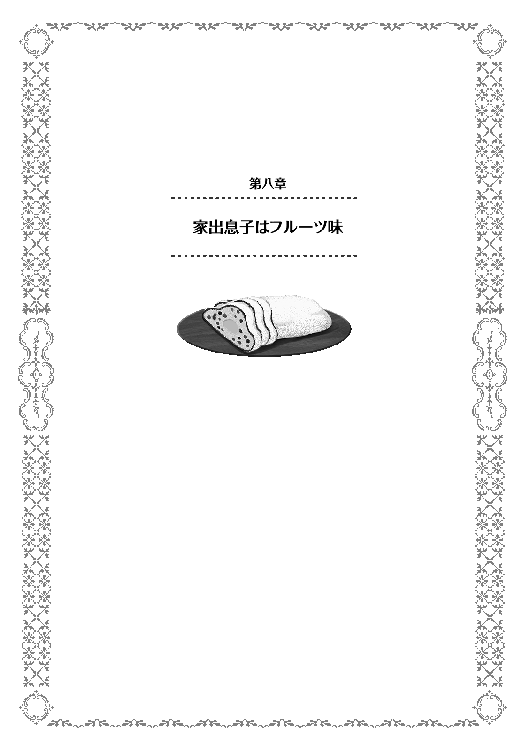
白下月の終わり。冬の寒さも日に日に厳しさを増す頃。
モルテールン領の執務室では、トップ達が会議を行っていた。
居並ぶ面々は、いつものお馴染みのメンバー。カセロール、シイツ、ペイストリーに、今日は議題のこともあってグラスことグラサージュが参加していた。
日頃現場にいることの多いグラスだが、こうやって執務室で会議に参加することもある。
「こっちの方から引くのはどうだ？ こうやって、こう。そうすれば、村までの直線距離が長くなるから、工事もし易くなるだろう」
「それだと、ここの傾斜がきつい。小山になっている部分を、相当削らないといけなくなるから、それならこっちからこうやる方が良い」
「ちょっと距離が長すぎやしないか？ 工事の難度が下がったところで、工期自体が延びれば余計に金が掛かるぞ」
「構わねえでしょう。どうせ金は有るわけだし。リハジック子爵様々で、来年の家畜の仕入れ分を余裕見て残すにしても、相当の剰余金があるわけでしょう。ここで少々余計に費用を掛けても、財政に響くほどじゃねえでしょう」
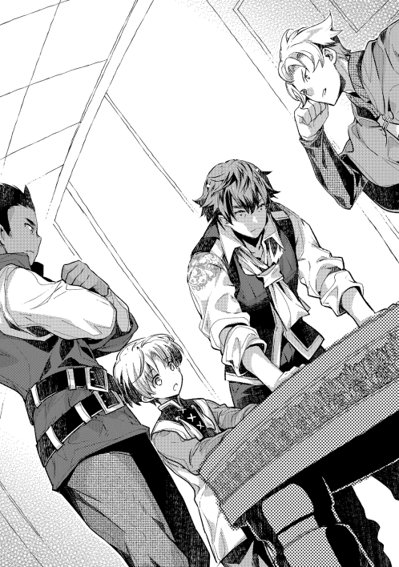
「だからといって、無駄遣いするわけにもいかんだろう。今後何に幾ら掛かるか分からんのだし、レーテシュ伯の結婚の時のように、出費が突然降りかかるということもあり得るんだ」
彼らが何を議論しているかと言えば、この冬の工事計画の相談だ。
去年、十年以上も店晒しにされていた水道整備案件が、ペイストリーの功績によって一挙に進んだ。
今年はその整備計画の完了を目指して工事が進んでいるのだが、これについてもそろそろ終わりが見え始めていた。一番大変な部分を、重機代わりのペイスがやったのだから進んで当たり前である。
山から村までの間は地下水路を通り、村の中や周囲の農地には溝を通して水を運ぶ。大雑把な概算で、地下水路一本につき中規模農村一つの水需要を賄える計算であり、まだまだ小規模農村と言えるモルテールンの村々は、水事情にゆとりが出来た。
出来たらいいな、が実現した以上、領主としてはこれをもう一歩進める計画を立てねばならない。
「こうなってくると、水量をもうちいとばかし増やしたいもんですぜ。春の雨が来る前に」
「だが、その場合はペイスのアレは使えんぞ。あちこちから探りが来ている現状だと、表だって前のようにやるわけにもいかん」
カセロールの言うアレとは、ペイスの魔法。それも、【転写】を使って【掘削】を使えるようになっていることである。
長年モルテールン家に勤め、ペイスの非常識さには免疫の出来ているグラサージュでさえも、最初にこの秘密を聞かされた時にはことの大きさに驚いたのだ。
モルテールン領の発展の秘密を探ろうと、他領の間諜や商人が頻繁にうろつく現在、この秘密をバラしてしまうような真似は極力避けたいのが本音だ。
かといって、使わないでいるのも非常に勿体ない。人力で数十人が何ヶ月もかけてやるような作業を、たった一人が短時間でやってしまうのだから、便利すぎるというジレンマもある。
上手く隠し通せる目算が立つなら、使いたくなるのが人情だ。
「ならば父様、やはりグラスの指揮で、人力でやるしかないのでは？」
「水量を増やす為に、貯水池を大きくするなら、か」
「大きくする必要はありません」
「何？」
「もう一つ作れば良いのです。複数の貯水池が出来れば、メンテナンスもし易くなります。今のままでは、いずれ貯水池に泥や土砂が堆積して、使えなくなります。保守のことも考えて、もう一つぐらいは貯水池を作るべきだと思います。今の貯水池を空にして補修する間も、新しく作る方で間に合わすというような使い方が出来ます」
「なるほど。それならば、春先の雨に合わせ、掃除を冬の定例工事に出来そうだな」
冬の間は、農作業がほとんどなくなる。余所の領地では、この間はほとんど家に籠って手仕事をするような生活になるのだ。
だが、かつてのモルテールン領では土地が非常に貧しく、冬の間の蓄えなども碌に出来なかった。
かような理由から、毎年冬の時期は、報酬付きの労務奉仕をさせることで領民が飢えないようにして来たのだ。
今は農政が上手くいき、多少の冬の蓄えが出来るようになってきたとはいえ、まだまだ心細さや、不慣れなことからくる不安定さは残っている。
だから、冬の間の決まった仕事として水底の浚渫・掃除という仕事を用意出来るのならば、一定の経済効果や救済措置になり得る。
無論、毎年費用を計上せねばならなくなる、という領主側の事情も加味せねばならないが。モルテールン家の経営が黒字になった分、こういった将来を見据えた費用計上も出来るようになったことは喜ばしい。
「よし、新しく貯水池を作ろう。アレは極力使わないにしても、実際に工事しだせばドサクサで誤魔化せる場面も作れるし、その分で費用も浮く。アレで工事が予定よりも多少早くなったところで、誤差で済むだろう」
「なら、何処に作るかでしょうぜ」
「ハパパ山に作る......ってのは？」
「効果は大きいだろうが......リプタウアー騎士爵との折衝が要るな」
「その件は、僕がやりましょう。今なら勝算もありますし、ダグラッドが使えるなら手も足ります」
「よし、ならその件はペイスに任せよう。上手く交渉がまとまり次第、ここに貯水池を作る。縄張りや下準備は、グラスに任せようか」
「了解ですお館様」
メラント・ハパパ。語源は誰も知らないが、地獄の境界だの人外魔境の入口だのと、散々に言われてきた山。小さい山が連なって山脈を形成し、それなりに険しい山肌を持つ。通称がハパパ山。
モルテールン領の南東に位置し、傾斜こそ緩やかであるものの、街道を通らずに越えるのは非常に難しい山である。モルテールン領で公式に交易路の通っている山でもある。
隣領であるリプタウアー騎士爵領との領境となっている為、この山に手を出すならばお隣さんへの挨拶が必ず必要になるのだ。
下手に通告もせずに領境で蠢いていれば、良からぬ企てをしていると疑われるし、軍事行動と見られても言い訳が出来ない。最悪は相手側からの軍事攻撃さえあり得る。
これが城を建てるとでも言うならば、すわ戦争準備かと身構えられるだろうが、今回は貯水池。ダム建設だ。軍事的脅威は無いと言い張れるし、実際にそんなものは存在しない。
それに、昨今の盗賊禍があって以来、リプタウアー騎士爵家は借金が嵩んでいると聞く。低利の融資による借金の借り換えや、或いは貯水池建設時の物流刺激での経済効果を謳い、肯定的な返答を引き出す勝算がペイスにはあった。
その点、勝算ありと見るカセロールやシイツも、意見を一にしている。
「父様、ついでに街道拡張も計画に入れませんか。それがあれば、リプタウアー騎士爵の説得がとても簡単になります」
「ふむ、今後物流を増やしていくことを思えば、街道の拡張や整備は必要なことだな。よし、その件はお前がリプタウアー家から戻る前に調整しておく。拡張するものと思って交渉するように」
「分かりました」
「では、お互いに動こう。解散」
領主の一声で、一斉に動き出す。
ペイスは早速、可哀想な生贄。もとい、モルテールン家筆頭外務官を捕まえに行く。傍にはグラサージュがいる。
目的の人物は、領主館の一室で礼状という名の外交文書を作成中だった。
「ダグラッド、仕事です」
「アイタタタ、俺、急に腹が......」
「馬鹿なことやってないで、行きますよ」
「今回は何処に連れてこうって言うんです。ペイストリー様が率先して動いて、今まで穏便に済んだことなんて無いでしょう」
「失礼な。今回はお隣ですよ。リプタウアー騎士爵に、ハパパ山の工事の了承を取り付けに行きます」
「......あれ？ ほんとにまともな仕事だ」
「だから、そう言っているじゃないですか」
ダグラッドは、ぱちぱちと目を瞬かせた。
ペイスの持ってくる仕事にしては、拍子抜けするぐらい普通の仕事だったからだ。
初仕事で国のトップへの連絡をしろと言われたり、国中の重鎮やその縁者が集まる中で慶事にかこつけて情報収集しろと言われたりするより、よほどまともな仕事だ。
「さあ、行きますよ」
「ちょ、心の準備が。あぁぁ〜」
半ば人さらいのように強引に部下を連れ去っていくペイスを見送ったグラサージュは、自分の仕事に向かう。
彼の仕事は、基本的には工事現場監督兼統括責任者になる。
ここ最近のモルテールン領の建築ラッシュや工事フィーバーに、業務過多を心配されるうちの一人だ。トラブルも付き物で、先日などは大きな岩が邪魔をしたとかで、除去するまで予定が大幅に遅延して大変だった。
怠け者のケツを蹴り飛ばすのも仕事のうちだし、報酬を多めに集ろうとしてくる連中を怒鳴りつけるのも仕事という、かなりストレスの溜まる仕事。
グラサージュは、普段から馬に乗ることを許可されている。従士であれば、有事の際の騎乗は認められているのだが、平時であっても騎乗を許可されているのは、シイツとグラス、後はコアントローだけだ。かつてはバラモンド老も許可されていたが、引退後は乗ることも無くなった。
馬に乗って駆ければ、工事現場までは比較的短時間で着く。
今日の作業場所は、西の村の用水路。西の方の隣国との領境の山にどでかい貯水池があり、半乾燥地であるモルテールン領の気候風土の制約から、地下水路を通して水を運び、この用水路に流し込む仕組み。製作設計の全てがペイストリーである。
現代の世界でも残る、乾燥地帯での地下水路。中東地域や中央アジアに散見され、特にイランのカナート等が有名だ。砂漠にポコポコと、動物の巣穴のような小山が延々並んでいる光景は、ある種観光地のようなものにさえなっていた。学生が社会科や世界史などで学ぶこともある。
ペイスは、このカナートやカーレーズといったものをおぼろげに覚えていた。これはその応用である。作業場所が地下だけに人目につかず、ペイスがこっそり動きやすかった、という理由もあったりするのだが、効果は絶大だ。地表での蒸発を最大限抑えるおかげで、何キロ何十キロと運んでも水が乾くことが無い。
そんな地下水路での今日の作業。
貯水池の水位が一番低い冬の時期を利用して水を止め、地下水路に溜まったゴミや汚れを取り除き、ついでに拡張を行う作業になる。
モルテールン領全ての村から人手を集め、その数は実に五十人強。これらを監督し、上手く動かして、作業を効率よく出来るよう整えるのがグラスの仕事だ。
日頃、仕事が多いとボヤくのも分かるというもの。
「グラスさん、お疲れ様です」
「ああ」
非常に狭い地下への通路から、細身の男が出てくる。いや、実際は細身というほどでもなくがっちりとした体型なのだが、年齢が年齢だけに、大人たちと比べるとどうしても細身に見えてしまうのだ。きっと顔立ちがまだ幼いせいだろう
頑張っている後輩に対し、グラスは労いの声を掛けた。
「お前も頑張るな」
「ラミトやヤントには負けてられないですから」
グラスにそう言って胸を張ったのは、皆からアルと呼ばれて親しまれるトバイアムの息子、アーラッチだ。
地下水路の通風孔は狭いので、子供が作業するのが一番適している。その為、彼も駆り出されていた。
「そういや、そのラミトは何処にいる？ 仕事を命じていた筈だが」
「ああ、多分向こうの方にいる」
「そうか、ありがとう」
グラスは、息子の顔を見ようと思った。
彼の息子は二人。ラミトとヤント。上がラミトで、一つ離れて弟のヤント。どちらもやんちゃであるが、男親としてはどちらも可愛い愛息子だ。
もっとも、将来は家を継ぐと公言するラミトに対して、最近は厳しく教育しようと自分を律しているところであり、厳しい自分に対する息子の反発も感じていた。
そろそろそんな年頃かと、感慨深くもある。
「なんだ、全然進んでおらんじゃないか。たるんでいるぞラミト」
父親の声に、件の少年が顔を上げ、そしてそのまま険しい顔になって反発する。
「なんだよ親父。今朝からずっと頑張ってる息子に対して、労いの言葉ぐらいあっても良いじゃないか」
「まだまだ、それぐらいじゃあ褒めるほどでは無いな。アーラッチを見てみろ。お前よりも年下なのに、自分が言われた仕事はきっちりこなしているぞ。少しは見習え」
「何だよ......ちくしょう」
ぶつくさ文句を言いながら作業する息子に、グラスは複雑な心境だった。
自分がまだラミトと同い年の時分は、父親であるバラモンドに大いに反発した。親子喧嘩で、何度クソオヤジと叫んだことか。一度は本気で殴り掛かり、当時現役の従士だったバラモンドに伸されたことだってある。
それを思えば、不満こそもらすものの覇気の薄い様子のラミトに対して、少々物足りなさも感じていた。
「まあいい。今日中に終わらせろよ」
「分かってるよ」
現場監督に従事しようと思えば、現場の作業について身をもって体験しておくのはいい勉強になる。頑張れよ、と心の中で応援しつつ、グラスは息子の傍を離れた。
そのまま、西の村の拡張を見据えた用水路整備の指揮を執っていた時。
グラスの元に連絡が届く。
曰く、すぐに執務室に来てくれ、という通達だった。
何があったのかと思って駆けつけてみれば、そこには見慣れた面々と共に、財務担当のニコロがいた。そして、モルテールン領ではよく知られた行商人デココとその弟子もいる。
その面々を見た所で、グラスは感じた。いよいよか、と。
「グラス、要件について察しは付いているな」
「ええ。まあいつかくるとは思っていましたが。用地確保と整備は任せてください」
「そうだな。だが、まだデココの口からはっきり聞いたわけでは無いのだ。まずはハッキリとさせておこう。デココ、要件は何だ？」
カセロールやペイスの注目も浴びる中。三十代の行商人は、柔和な笑みで口を開く。
何処か誇らしげであり、感慨深げなその言葉。モルテールン家の人間もまた、待ち望んでいた言葉。
「はい。実は、本村に私の店を出そうかと思いまして。その許可を願いたく伺った次第です」
モルテールン領に商店出店。
行商人の往来しかなかったモルテールン領にとって、待ちに待った商業店舗の誘致第一号であった。
神王国の中でも辺境部に位置するリプタウアー騎士領。
元々ブールバック子爵領として存在し、隣国の監視という意味合いがあった場所が、サルグレット男爵領、ブールバック男爵領、リプタウアー騎士領と分割されて出来た新興領地。
モルテールン騎士領が創設されるまでは、神王国の最辺境という位置づけであった。
このリプタウアー領。村が三つほどあるそこそこ豊かな領地なのだが、去年全ての村が大規模な盗賊被害に遭った。特に被害が大きかったのが、主力産物でもある麦の畑。不本意ながら血肉が撒かれた為に、土地が荒れた。
農業を知る者であれば、排泄物や血肉が腐敗し酸化することで、土中のｐｈ値が偏る現象を、体験や経験として知る。糞尿などを直接畑に撒かず、堆肥などとして一度発酵させるのはこの部分でも理由があるのだ。病原菌や害虫の温床にもなる。
また、一度に大量の血液が撒かれた土地は、血中の塩分や鉄分の影響を受ける。早い話が、実りが極端に悪くなるのだ。神王国では、これを死者の怨念が残っているからだと信じていた。
こういった土地が荒れた影響というのは、長ければ数年程度尾を引く。地道な土づくりをやり直さなければいけないという農家の苦労は、現代人の感覚ではなかなか理解しづらい。
そして、ペイスは現代人の感覚を持つが故に、目の前でその現実を見て、改めて理解するに至った。
「話には聞いていましたが、酷い有様ですね」
「ここは特に酷いところだったと聞いています。村人がほぼ全員殺されたらしいですから、今いるのは余所の村の生き残りでしょう」
リプタウアー騎士領の領都にあたる村、クァテラン。
村の周囲を取り囲む農地は、土の色が悪い。更に、麦藁などを保存しておくサイロ等も、この時期の標準量からすれば半分程度に見えた。
麦藁などを焼いたりすることで、土を作っていた形跡も垣間見えたが、この様子ではかつての繁栄を取り戻すのに、相当長い時間を要するだろう。
「この分なら交渉は簡単でしょう。若様がわざわざ出張るまでも無かったのでは？」
「交渉が楽なのは喜ぶべきなのでしょうが、この状況を見れば素直に喜べませんね」
「相手の苦境につけ込むのも、俺らの仕事です。死に体に鞭を打つのか、或いは恩を高値で売りつけるのかは違いますが。取り繕わずに言うのなら、相手が苦境であればあるほど、此方には望ましい」
「分かってはいますが、貴族というのも因果な商売ですよ」
リプタウアー騎士爵の屋敷は、村の中心部にあった。木造建築であり、土台だけは立派な石造りのようではあったが、上物は築二十年程度の風格がある。もっとも、かつてのモルテールン家のボロ屋敷とは比べ物にならないほどしっかりした建築ではあったが。
すぐ傍に教会がある所を見れば、騎士爵領の領民は皆、敬虔な聖教徒なのだろう。その証拠に、教会にはチラホラと人の姿が見えた。
「それではダグラッド、騎士爵に僕が来たと伝える先触れは頼みます。僕は村の様子をスパイ......ごほん、見聞を広めていますから、教会の前あたりで後ほど落ち合いましょう」
「分かりました」
ダグラッドと一旦別れ、村の中を散策するペイス。
護衛もつけずに歩き回る見慣れない少年を、まさか貴族だとは誰も思わないらしく、物珍しそうな村人の目がペイスに突き刺さる。
それでも遠巻きにしているのは、身に着けている服装がそれなりに高そうなものだったから。
村人たちの常識からすれば、良さそうな服を着て貴族でないのだから、どこぞの商家の子供だろうと考える。
そしてペイスは、それをよく自覚した上で、さりげない情報収集に励む。声を掛けたのは、人の良さそうなお婆さんだ。
「どうも〜」
「おやおや、何か用かい？」
「大したことじゃ無いんですけどね。もしよければ、何かご入用のものはありませんか？」
「足りない物というなら、何でもそうさ。ただ、おあいにく様。あたしは金がないから買えやしないけどね。あんたはどっから来なさった」
「お隣の領地からです。ここの御領主様に用事がありましてね」
「そりゃそりゃ。ご苦労さん」
「どうです、何か御領主様に言いたいことがあれば、それとなく伝えておきますよ？」
「そうさねえ、最近は塩が高いよ。冬支度でも足らずが出たから、何とかして欲しいねえ」
「それは大変だ。分かりました。ちゃんと伝えておきますよ」
「期待はせずにおくよ。ほっほ」
同じような調子で何人もの話を聞き回り、ペイスが教会の前に戻った時にはダグラッドはすっかり待ちくたびれていた。
「遅いですよ」
「思わぬ収穫が多かったものですから。先触れは何と？」
「これから若様が伺うとだけ」
「なら早速行きましょう」
リプタウアー騎士爵の屋敷は、玄関口からすぐに応接間へ繋がっていた。
先触れもしていたからか、さほど待たされずに当主がやってくる。
厳格な騎士、といった感じのする男性。モルテールン家当主よりは年が少しだけ上という話ではあったが、白髪が混じった上に薄くなった頭を見れば、相当年上に見えてしまう。
頬が少しこけていて、疲れの為か目の辺りが腫れぼったくなっていた。
「ようこそ、ペイストリー＝モルテールン卿。近頃何かと噂の貴君とは、一度ゆっくりお話してみたいと思っておりました」
「高名なリプタウアー騎士爵閣下にそう言って頂けるとは、光栄に存じます。閣下のことは名高い勇士であると常々父から伺っておりまして、本日こうしてお会い出来ることを楽しみにしておりました」
「なんの、貴君の御父君に比べれば、私の武功や勇名などは些細なものです。ま、どうぞお掛けください」
「失礼します」
ソファを勧められたペイスは、背後にダグラッドを立たせての、社交辞令の応酬から始めた。
リプタウアー騎士爵は武勲を立てて今の地位にいるので、その点褒める内容を選ぶ必要も無くて楽ではある。
だが、社交辞令だけでは今回の目的を果たせない。
「さて閣下、今回貴重なお時間を頂きましたのは、一つご了承頂きたいことがあってのことです」
「ほう、何であろうか。他ならぬモルテールン家からのお話であれば、友領の領主として出来る限りのことはさせて頂くつもりですが」
「ではご厚意に甘えまして。実は近年当家の下では領民が増えてきておりまして、それだけに不足するものも多々ございます。特に喫緊の課題となっているのが水の確保。しかしながらご存じの通りモルテールン地域は水気に乏しい土地柄故、目ぼしい河川がございません。止む無く、定石に則って貯水池を作ろうとしております」
「なるほど、さすがはモルテールン閣下ですな。そこまで領民を思いやるとは。モルテールンの御領地で池を作るとなると、相当に費用も嵩みましょう。豊富な資金が御有りというのは、羨ましいですな」
水気の乏しい土地が、限られた水の利用の為に貯水設備を作るのは極々当たり前の政策。それだけに、リプタウアー騎士爵も必要性については頷いた。
「つきましては、ハパパ山に貯水池を作りたく存じます。この件で、閣下にもご了承頂きたいと思い、本日伺った次第です」
「なるほど、それは御配慮痛み入る。無論、簡単に了承出来ぬことと承知でおっしゃっておられるのでしょうな」
「勿論」
ハパパ山を境として、リプタウアー騎士爵領とモルテールン準男爵領は隣り合っている。一応はモルテールン領内にこの山があることにはなっているのだが、なだらかな傾斜の山だ。何処から何処までが山だと明確に線引き出来るものでも無い。迂闊に許可を出せば、相当騎士領側に押し込んだところまで手を出されるかもしれない。
それに、領境に建造物を建てられて、万が一の軍事侵攻の足掛かりにされても敵わない。
過去の先例に倣えば、領境の山に地下資源が見つかり、その鉱脈が他領まで伸びていたことが後から分かった事例などもある。そうなって来れば、揉め事の火種をダース単位で抱え込む羽目になる。
何事も無く平穏無事にいたいなら、領境の付近はお互いに手を付けない空白地帯とするのが良いのだ。
「一応、山頂から見て当家領側のみを開発する予定ですので、閣下の御懸念は承知しますが、なにとぞご了承願いたい」
「しかしそうは言っても物が貯水池だ。作りようによっては、当領に流れるはずであった水を奪いかねない。その点を踏まえてみても、やはり遠慮して頂くに越したことはない」
これが今回の問題のややこしい所だ。
確かに、山の開発の権利はモルテールン側にある。だが、現状リプタウアー領に流れ込んでいる水は、リプタウアー騎士爵のものだ。
山を削ることで水の流れを変えてしまう。或いは地下水がモルテールン領に流れるようになるとなれば、資源を奪われたということになる。
変な話で、水を溜めない貯水池ならば問題ないのだが、そんなものがあろうはずもない。
「では閣下、こういうのはどうでしょう。当家の開発をご了承頂く見返りに、御家にそれなりの利益を供与する」
「ほう、利益と......」
何処かペイスを値踏みするかのような騎士爵の目が、より一層強くなる。
相手の思惑を見透かそうとする強い意志を持った目であり、武人の目だ。ペイスは、この手合いの相手をずっと経験してきた。何しろ父親がそれだ。
じっと相手の目を見返しながら、おもむろに外交条件を切り出した。
「少し小耳に挟んだところによれば、閣下はあちこちから借財を重ねておられるとか。確かこのあいだも......」
そう言って、ペイスは後ろを見る。ダグラッドはすかさず意図を察してサポートした。
「イフリーデ騎士爵」
「そう、イフリーデ騎士爵から、千二百レットの借入を行ったとか。期限は二年。返済時には五割増しでの返済と聞きました。これはあまりに阿漕でしょう。つきましては、当家は期限十年、年利一割三分でご融資を用意いたします。金額は三千レットを上限にお好きなだけ。如何です？」
「ほほう、年一割三分となれば、二年で五割の利息から見れば半分程度ですな」
「そうなります。我々は同じく盗賊の被害に遭った身。余所の人間が苦境に立つ我々を食い物にしようとするのは許しがたい事態です。ここはお互い手を取り合い、共存共栄を図ろうではありませんか」
「なるほど、結構なお話ですな。では......」
その後も交渉は小一時間続いた。
結局、工事状況をリプタウアー騎士爵に報告する義務をモルテールン側が負うであるとか、細かい付帯条件のみで、大枠はペイスの持ち出した条件でまとまった。
そのまま騎士爵の館を後にした時。
ダグラッドはどうしても気になった点をペイスに尋ねる。
「若様、何であんな破格の条件を出したんです？」
「破格？ 金利のことですか」
「ええ。リプタウアー騎士爵が金に困っていたことは明らかでしたし、イフリーデ騎士爵の利率を俺が苦労して調べたのに、大して考慮にも入れず大幅に値引いたように思います。二年で五割なら、年利で二割五分ほど。てっきり俺は、二割二分ぐらいで落としどころを持ってくると思っていましたし、それぐらいでもあちらには魅力的だったはず。一割三分とした理由は何故です。どうにも納得がいかない」
「......ダグラッドは、ニコロに帳簿を習うべきですね」
「え？」
「世の中には、複利というものがあるのです。金利を計算するやり方ですね。それで十年の複利ならば、どうなると思います？」
「えっと......」
「十年後には、約三倍強。元金差っ引いた利息だけで、二倍強。十年で割れば、年利二割四分換算になるんですよ。最終的には......ね。二割五分から二割四分になったのですから、まあ後で気付かれてもお得には違いない。騙したことにはならないでしょう」
「うげっ。それホントですか」
「うちに帰って、ニコロかシイツに聞いてみることです」
複利の恐ろしさは、指数関数になるところにある。有名な所では倍々算だろうか。
帳簿を付けるのならば、この手の数字には強くなくてはならないのだが、この世界で複利計算などをやったことがあるのは、高度な財務を担当する極々一部の超エリートな人間か、或いはそれなりに経験を積んだ大商人ぐらいだ。八歳児がやること自体が間違っている。
ダグラッドは結局二度驚いた。
落ち着いてゆっくりと計算してみて、ペイスの言う通りであったことにまず驚く。そして、そんな計算を悟らせずに、如何にも格安金利であるかのように振る舞って交渉をまとめたペイスに対して、更に驚いたのだ。
「何はともあれ、無事に交渉もまとまったわけですし、これで心置きなく開発に取り組めるというものです」
「俺......自信無くしそうです」
「これも、ダグラッドが事前に調べてくれた情報あってのこと。今後も期待しています」
ペイスの笑顔に、ダグラッドはボヤキで応える。
非常識にもほどがある、と。
モルテールン領に意気揚々と戻ったペイスと、意気消沈して戻ったダグラッド。
彼らがザースデンに足を踏み入れたところで、人だかりが出来ていることに気付く。
下手をすれば、村中の人間が集まっていそうな雰囲気だ。
ダグラッドなどは、すわトラブルかと身構えた。何せ、傍にいるのが歩くトラブルメーカーだ。何に巻き込まれるか分かったものでは無い。
「どうしました？」
「ああ、ペイストリー様。丁度良かった」
商売用の実に良い笑顔で人だかりの中から出てきたのは、商人デココ。
どうにも彼が困っているらしいのだが、何があったのかとペイスが尋ねる。
「実は、出店に先立って、従業員の募集を行っていたのですが......」
デココは語る。
自らの長年の夢であった店舗の出店。これに先立って、従業員を募集したのだという。
店の建物が出来るのは突貫工事でも春先になるのだが、それまでに教育をせねばならないと、人を雇う旨の報せを各村々に送った。
これが上手く行きすぎた。伊達にモルテールン領で長い間行商をしてきたわけでは無く、デココの知名度は相当に高かった為、募集に応募が殺到。
とりあえず一名という募集に対し、三十人以上が申し込みに来た。その為に収拾がつかずに、人だかりになってしまったのだという。
「何とか今日は一旦帰って貰うように話をしたところだったのです。もういっそ、ペイストリー様に人材をご推薦頂ければありがたいのですが」
デココは、二人か三人程の少人数から選ぶつもりだった。少人数ならば、選ばれなかった人間にも説得の上でフォローも可能だからだ。新しい船出に、無用な恨みや嫉みを買いたくは無い。
ましてやそれが数十人ともなれば、選ぶにしても手に余るし、フォローなど出来ようはずもない。
ならばいっそ、選ばれなかった人間が納得するだけの理由が欲しい。
そうとなれば、ペイスなりカセロールなりに選んでもらうのが、一番角が立たない。
憎まれ役を押し付けるような提案ではあったが、デココの願いに対してペイスはしばし考え込む。
「ならば、サーニャはどうでしょう」
そして、一人の少女の名前を挙げる。
ペイスの笑顔は、胡散臭いほどに輝くのだった。
数人の男が村を歩く。
彼らは皆、酷く真剣な様子であった。
「この辺りに倉庫を建てるというのは？」
「ちょっと店から離れすぎている気がしますが」
「いやね、ここだと大した手間もいらずに、作業場部分も併設出来るぐらいの土地を確保出来るのよ。俺はお薦めするが？」
「もう少し狭くても良いので、店舗から近い方が倉庫は便利です。大きな荷物を倉庫に抱えるようになる頃には、また別途の倉庫を用意する手も使えるでしょう」
街商人デココは、今一番重要な取引を行っている。店舗の縄張りの設定だ。
より正しく言うなら、店舗の建設場所付近で、倉庫として使える土地を協議している。
二十年近くモルテールン領に出入りしてきたデココだけに、自分の店舗を建てる場所には最初から目星がついていた。その為、土木作業関係の責任者であるグラスや、内務系の庶務全般を担当するシイツなどと協議の上、店の場所自体はすぐに決まった。
メインの道路の傍。領主館からは一本道で、井戸も敷地内に敷設可。将来ザースデンが大きくなっていけば、誰もが欲しがるであろう一等地。になる予定の場所に、店舗の建設が進んでいる。
それと並行して、荷物や商品の保管場所となる建物の建設予定地を相談中なのだ。
領主家としても、初めて誘致する商業店舗だけに、未経験が先立つ。故に、細心の注意を払う意味で、シイツやカセロールが直々に対応している。
「そうかい。ならここら辺の家を一旦別に移築するってのが良いかね」
「ここは今誰が住んでおられるのです？」
「空き家だな。年が明けて新しく従士を雇おうと思っていてな。その連中の貸家にするつもりで置いておいたものだ」
「益々のご隆盛、結構なことと存じます」
ピクリ、とデココの耳が微かに動く。
家の移築となれば、またぞろ金が動く。そして、人が新しく雇われて新居に移るとなれば、必要とするものもあるだろう。
或いは、デココがそれを察して動くことを見越して、情報をリークしているのかもしれない。
ここら辺の腹の探り合いは、毎度のお馴染みである。
「とりあえずでかい倉庫が要らねえってんなら、それでもいいさ。ってか、デココよ。お前さん一体うちで何を扱う気だ？」
「さし当たってはモルテールン領に腰を据えて、麦や豆の買い付け。それと、他領に出向いての塩、木材、布、家畜、鉄製品の仕入れが当面の柱になるでしょう。後は、こっちに来る行商人の取引仲介や問屋業を商うつもりです」
デココは、当面の商いの予定を披露した。
無論、モルテールン家の御用聞きであったり、今後生まれる新産業への期待であったりもあるが、現状ではそれらも不確かであり、あくまで収益の柱は別に考えておく必要がある。
モルテールン領で主要な産物を買いとって余所へ売り、余所で目ぼしい消耗品を買ってモルテールン領で売る。
モルテールン領の人口が右肩上がりで、需要も増大していく一方の現状。これだけでもそれなりに収益は安定するはずと見込んでいた。だからこその店舗出店の決断も出来た。
また、行商人相手の問屋業も考えている。
行商人が持ち寄る様々な産品を、一括でまとめて取り扱うことで得られるスケールメリットが肝だ。
モルテールン領で収穫時期に一括で買い上げた農作物などを、不定期に来る行商人に小分けにして売り、細かく利益を得ていくのも問屋業の仕事である。
「それだけやるなら、人手が足らんだろう」
「そうですね。取り急ぎ店番の出来る人間を育てるつもりですが、他に取引を任せられる人間も育てて行きたいものです」
「年を越せば、奉公先を探すのも出てくるだろう。良いのを見つけることだ。後はそうだな......お前も嫁さんを貰うってのはどうだ。家のことを任せられる賢い嫁を貰えば、楽になるぞ？」
「それはシイツさんにだけは言われたくありませんね。年の順から言えば、そちらが先です」
「おうおう、言うようになったねえ」
「皆様に鍛えて頂きましたから。特にペイストリー様にはかなり手厳しく鍛えて頂きまして......」
「そういえば坊を見かけねえな。どこに問題を起こしに行った？」
シイツの言葉に、デココは苦笑いだ。
既に、どこかで問題を起こしていることを規定事項とするような口ぶりについて、である。そして、それを否定する材料を、デココにしても持ち合わせていなかったが故の苦笑い。
そんなシイツの疑問には、カセロールが答えた。
「ああ、あいつは今スカウトに向かった」
「スカウト？」
「デココの店の従業員にぴったりの人物だそうだ。ある程度の読み書きが出来て、しっかり者で、年も若い。物覚えもよく、素直で、人気者だそうだ」
「そりゃ是非うちに迎え入れたいぐらいだ。一体誰なんで？」
「サーニャだ。ほら、一度グラスから懸案事項として挙げられていた娘だよ」
「ああ、あの」
「一石二鳥を狙うのは、ペイスらしい。うちに縛り付けるのに、良い手を打つよ」
「せめて、夢の応援、ぐらいの表現にならないですかい？ 大将の息子でしょう」
「息子だからこそ客観的に評価せねばな。あれは、私以上の策士だ」
「違えねえ」
大の男たちが、大声で笑った。
◇◇◇◇◇
ザースデンの村人が、毎週楽しみにする日がある。
この日ばかりは皆早起きをし、子供たちもうきうきとしながら率先して家の手伝いをする。年寄りもまた、今日がその日だと知れば嬉しそうに微笑む。
それが、パン焼きの日。
ザースデンの旧領主館の傍には、煉瓦でつくられた大きな窯がある。パン焼き用として整備されている窯で、領主たるモルテールン家の持ち物だ。
窯というのは、温度が一旦下がってしまうと上げるまでに燃料を余計に食う。それ故、焼くとすれば一度に大量にまとめて焼く方が効率も良い。
ただ、領内にはパンを焼く窯がこれ一つしかない為、週に一度、ないしは祝いごとの前、村人がパン生地を持ちより、薪代を納めてパンを焼いてもらうのだ。焼かれた一部は使用料という形で、領主家への租税となる。
窯の使用権については序列もきっちり決められていて、中ほどの焼きやすいところは家格の高い家が使い、端の方や釜の手前といった焼きづらい場所には、身分の低いものが割り当てられているのだ。
もっとも、この焼きの悪いものが租税としてモルテールン家に収められ、モルテールン家の下男下女に下げ渡されている、という暗黙のルールもあるのだが。
「だぁ〜熱っいわ。もう嫌になる!!」
「当番だから仕方ないよ〜がんばろ〜」
窯の前でずっと番をしているのは二人の女性。
一人はリラという名。
元々癖っ毛なせいか、栗毛がふわふわと緩くウェーブが掛かっていて、少し丸めな顔立ちと、垂れ目がちな目つきとが相まって、おっとりとした雰囲気のする少女。
もう一人が、サーニャ。
キュっと釣り上がり気味の目つきや、スレンダーな体つきから、年以上にお姉さん扱いされてしまう少女。
共に十六歳。リラの方は婚約者という恋人もおり、いよいよ来年あたりには結婚するのではないかと言われている。相手の男の度胸次第。
対しサーニャは未だフリー。周りの者は、別に不細工というわけでも無く、性格も割とさっぱりしている彼女が、何故恋人を作らないのか不思議がっている。
何人かから結婚を前提としたお付き合いを願う告白も受けているのだが、如何せん本人にその気がなく、全て振っていた。
この二人、今日は窯当番の日に当たっていた為、日が昇る前から働いていて、日が既に中天に差し掛かろうとする今も尚働きづめという状況。
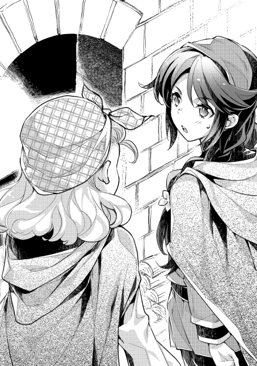
そろそろ疲労で体が重たくなってきている。
「おう、ご苦労さん。二人とも疲れただろ」
「あらガラガン。女の子二人を働かせて自分は休憩って良い身分ね」
「おう。これでも窯役兼任だからな。もっと敬って良いぞ」
「逆よ馬鹿。サボってたこと、シイツさんにでも告げ口って欲しいの？」
「うひゃあ、それは勘弁っす。ほら、窯役権限でこれやるから、二人とも休憩して来るっすよ。水分はこまめに摂るようにってのは、若様のご指示なわけっすし」
「んじゃそうする。あ、燠はもう少しもつと思うけど、新しくしといた方が良いわよ」
勤労少女二人に声を掛けたのは、窯の責任者に就任しているガラガン。普段は森林の警護任務に就いている新人従士で、別にサボっていたわけでは無く、見回りもまた彼の仕事なのだ。
二人と同じく十代である彼なりに、年下の女の子とのじゃれ合いが楽しく、言葉のキャッチボールを楽しんでいる。
サーニャとリラは、ガラガンから受け取った焼きたてのパンを持って休憩に入る。
このパンは、焼き加減を確認する為に焼かれるパンで、窯役が管理する範疇にある標本だ。
焼け焦げることもあれば、生焼けの時もあり、普通は焼く数には入れないのだが、上手く焼ければ普通のパンと変わらない。
当然サイズもきっちり決められている。大人が手のひらをいっぱいに広げた横幅。すなわち親指の先から小指の先同士の幅いっぱいの、更にその二つ分の幅。こがらな人間の肩幅ほどが直径になる大きな円盤型のパンだ。ペイスがピザ生地と評したこともあった。
厚みこそ精々膨らんでも指の関節一つ分から二つ分程度であるが、これ一つか二つが大体一家族の一食に供されるパンとなっている。貧しい家なら一日分になることさえある。
家族毎に違いはあるが、それぞれ同じぐらいの大きさのパンを二十から四十程度焼き上げて、一週間分のパンにするのだ。
焼きたてのパンが美味しいのは、誰しもが共通して思うこと。
それだけに、今日の焼きたてのパンが一週間の中でも一番美味しいわけで、村人も楽しみにする道理である。
ガラガンが女の子二人とバトンタッチで汗をかいていた時。
窯の傍までやってきた人影が、勤労青年に声を掛けた。
「精が出ますね」
誰が来たのか、等とは思わない。ガラガンでも分かる、よく知った声なのだから。
彼が声のした方を見れば、やはり想像通りの青みがかった銀髪がそこにあった。
「若様、こりゃまた珍しいところに。視察っすか？」
「まあそんなところです。焼きの加減は？」
「可もなく不可もなくっすね。ようやくこの仕事にも慣れてきたっすけど、忙しいのは相変わらずで」
「来年は、また人を増やして部下の一人もつけてあげたいところですが......ところで、ここにサーニャが来ていると聞いてきたのですが、彼女は何処にいますか？」
「ああ。あっちで休憩してるっす」
「ありがとう」
ペイスは、聞いた通りに言われた方へ探しに出る。
冬場の真っただ中なだけあって、丁度日当たりのよい、それでいて風の無い場所に女性二人が座っているのを見つけた。
「二人とも、休憩ですか」
「あ、ペイストリー様」
「もご......こんにちは」
女性陣は、水筒のハーブティーを飲みながら、パンをちぎって食べていた。
年頃の女性として、頬張っている姿を見せるのは若干の戸惑いがあったのだろう。慌てた風な二人の動きを制し、ペイスは用件を伝える。
「ああ、そのままでいいですよ。視察のついでですし、たまたまサーニャに伝えることがあって来ただけですから」
「あたしに？」
「ええ。前にサーニャが、余所の街に行ってみたいと言っていたことを思い出しまして。それで聞くのですが、今でも行ってみたいと思っていますか？」
「はあ？ えっと......まあ、行ってみたいなあと思いますけど......これって何か不味いことだったりします？」
「普通ならば、領民が余所の領地に行くのは領主の許可が要りますから、それを抜きにして余所に行く話となれば、罪になることもあるでしょう。それこそ、余所の領地なら死罪と連座もあり得る」
「え!?」
サーニャは心臓が口から飛び出そうなほど驚いた。
自分が口にしていたことが、それほど大それたことだとは思っていなかったからだ。ただ単に、自分の見たことの無い外の世界に憧れていただけなのだ。
神王国のみならずこの世界において、領主とは統治権を持っている。いわば一つの国のトップのようなものだ。領民は、領主の統治権の下に庇護され、裁判を受ける権利や、財産権は領主によって守られる。だからこそ、街に住まない行商人や船乗りの立場は弱いものとされていた。
そんな領民が余所の領地に行くとなれば、現代でもパスポートが要るように、領主の許可が必要となる。
この許可を受けずに他領に行けば、難民や流民扱いになる。或いは、不法な入領として処罰の対象となり得るのだ。
以前、サーニャが余所に行ってみたいと言っていたことを小耳に挟んだグラスが、カセロールに懸案事項として挙げたこともある。
もっとも、その時は問題なしとして処理されたが。
「大丈夫。その程度で罰するほど父様は狭量ではありませんよ。それよりも、貴女のその夢を叶える方法を提示しましょう」
「はい？」
「先日来、デココが従業員を募集しています。そこに貴女を推薦しておきました。街商人であれば、領主の意向で他領に出向く機会もある。従業員もそれに準じるので、夢を叶える可能性は高い。どうです、新しく出店されるお店で働いてみませんか？ 貴女の御両親は、既に僕から説得しています」
「ほんとですか!!」
花の芽が咲き開くような笑顔。サーニャは、嬉しさを全身で表現した。
サーニャの両親は余所からの移住組。といっても、領内に西の村を作り始めた頃の募集に応じた移民であり、そこそこ古株にあたる。
両親が余所の領地を知っているだけに、モルテールン領に不満は無いが、他領に対する憧れも持つ。そんな女の子がサーニャだった。
デココが従業員を募集しているというのは知っていたが、両親が家業を継いで欲しいと願っていた為と、募集が自分の夢に繋がるのだという発想が無かった為に、募集自体には応募していなかったのだ。
「とりあえず、話だけでも聞きに行ってください」
「はい。あ、でも、それだと窯番が......」
「仕方がないので、僕が少しの間だけ代わりましょう」
「えぇ!! ペイストリー様にそんなことさせられませんよ」
「構いません。視察の一環ですから、実際に体験して分かることもあるでしょう。さあ、窯番は気にせず、早く行きなさい」
「はい......」
何だかペイストリーに申し訳ないという気持ちを抱えながら、サーニャはデココの元に急ぐ。
それを見送ったのは、リラとガラガンとペイスの三人。
特にペイストリーは、とても良い笑顔で見送っていた。先ほどからずっと抱えていた籠を大事そうにしつつ。
「さて、それでは窯番でもやりますか」
「それは良いんですけど、若様、そりゃ一体なんです？」
「ちょっと焼きたいものがあったのでついでに焼けないものかと。お、標本パンのスペースが丁度良く空いているじゃないですか。ただ空くのも勿体ないので、これを置いておきましょう」
「......もしかして若様、狙ってました？」
「ああ、焼けるのが楽しみですねえ〜」
窯の辺りには、甘い匂いが漂い始める。パンの焼ける香ばしい匂いや、薪の煙が混然となる、パン焼きの日独特の匂い。
ペイスは香りをかぎつつ、ガラガンの訝しげな目を何食わぬ顔で受け流すのだった。
「へぇ〜じゃあ元から商人の勉強をしていたわけじゃないんですね」
「そうさ。親は農家だったし、私も手伝っていた。大体、十エイク程の畑を持っていたかな」
「あ、じゃあうちの方が大きいかも。うちの家でも多分倍ぐらいは畑作ってる」
「そうだね。ここの人たちは、多分恵まれていると思う。大きな畑を持てるし、冬も仕事があるし。やっぱり御領主様が凄いのだろうね」
「あんまり実感無いな〜デココさんが畑耕してた頃と比べても、うちって恵まれてるの？」
「どうだろうね。実は農家だった頃ってあまり覚えてないんだよ」
一軒の仮設住宅で、男女が話をしていた。デココとサーニャの二人。
何をしているのかと言えば、サーニャの従業員教育を行う為の、基礎知識の確認だ。もっとも、会話するうちに話が逸れていて、今は互いの身の上話になっていた。
現在急ピッチで建造が進む、デココの商店舗。そのすぐ傍に、暫定的にデココが寝起きする為の建物が建てられていた。仮の店舗でもある。
身の回りの世話をする為に、昼間だけ雇われた中年女性が出入りする以外は、ほとんど人の出入りの無いボロ屋。
ここに、ペイスからの紹介を受けたサーニャが出入りするようになったのは昨日から。
とりあえずの雇用の意思と、彼女の希望を確認。デココ側の出せる条件等が話し合われ、合意の後に今日に至る。
独身男性の部屋に独身女性が出入りするのは憚られるものがあったのだが、デココが今まで培ってきた信頼と、出入りする中年女性の目も光るとの理由から、サーニャの教育は仮設店舗内で行われていた。無論、昼の間のみ。
デココとしても、ここで下世話な風聞を立ててモルテールン家の信頼、もっと言えばペイスからの紹介を台無しにするつもりは無いので、配慮を怠るつもりも無い。
「え？ 覚えてないってどうして？」
「まだ子供だったから、かな。うちには兄がいてね。兄が畑や家屋敷を継ぐことになっていたから、いずれ家を出るつもりでいたのさ。それで十歳の時に、道に迷って偶々村に来た行商人に頼み込んで丁稚にして貰って。その人を師匠と仰いで修行して。師匠の下を離れて独立して。色々あって、こうしてザースデンで落ち着いた、ってわけさ」
「へぇ〜そんなことよく親御さんが許可したね」
「してないさ。師匠の馬車にこっそり潜り込んで、なし崩しで丁稚にして貰った。今思えば無茶も良いところ。あの時は馬鹿だったなあ」
デココの語る過去にサーニャは驚いた。
一見すると穏やかで、いつもにこにことしている行商人の顔しか知らなかったから、少年時代に家を飛び出したやんちゃ坊主だったと言われてもイメージが結びつかない。
どちらかと言うなら、代々商人の家系のお坊ちゃまでした、と言われる方が納得出来るのだが、そうではないとデココは言うのだ。
「おっと、話が大分逸れた。つまり、小さい頃の私でも覚えられたことだから、サーニャならば問題なく出来るようになるはずだということだ。まずはこれを全て覚えてもらう」
「これは？」
「春先から間違いなく取り扱うことになる商品の一覧だな。扱う商品のことぐらいは、店員として覚えておいた方が良い」
「多っ!!」
木板に書かれた単語の一覧。
春小麦の品種であったり、豆の品種名であったり、家畜の名前であったり、産地ごとに区別された塩であったり。注意書きと併せて、物の名称が書かれている。ずらずらと沢山書かれていて、その数も百程度はあるだろうか。
「デココさん、これ多くない？」
「これでも常時取り扱わない物は省いた。臨時に取り扱う商品や、客から注文を受けて仕入れる商品なんかもあるし、そこに書いたのなんて序の口だ」
「うっそ〜」
「ホント。あと、商人ならそれぞれの商品の大まかな相場を覚えないといけないし、相場が変動する要因だとか、商品の良し悪しの見分け方だとか。そういった商品知識もそれぞれに覚えないと、損をすることになる」
「商人って、思ってた以上に大変なのね」
「コツを掴むまでが大変なのさ。要は慣れの問題。よく見て御覧。多分、馴染みの有る商品も結構あるはずだから」
「あ、ほんとだ」
商人にとって、商品知識とは文字通り商売道具。商人としてやっていこうと思えば、まず頭に叩き込む。大工が釘の打ち方を覚えるようなもので、初歩の初歩と言える。
商品知識を学び、人脈を作り、交渉術を磨いていくことで、商人としての実力を高めていくものなのだ。それを思えば、デココもまだまだ商人としては未熟な部分も多い。
一生勉強しても足りない、と言われるのが商人の世界。
店員として、商売人の世界という異世界に、足を半歩踏み入れようとしているサーニャからすれば、奥が深いことぐらいしかまだ分からない。
「うんうん、やっていますね〜」
一生懸命に商品名を覚えようとする女の子と、それを見ながら仕事をする男。
そんな二人の元に、来客があった。モルテールン領で彼を知らねばモグリと言われるほどの有名人。
「これは、ペイストリー様。御用がお有りでしたら、一声伝言頂くだけでもこちらから伺いましたのに」
「ランニングの途中で寄っただけですから、気にしないでください。ああ、あとついでにデココに相談がありまして」
「ほう、何でしょう」
「家畜の仕入れについてです。このあいだ、とある家に家畜を全て、適正価格で売っ払ってしまったのです。そこで、春になるタイミングで改めて家畜を仕入れて貰いたいのですが......」
「それは商売ですから、任せて頂いても構いません。ですがそのご様子なら、前回のように、ただ単に数だけ揃えれば良いというわけでは無さそうですね」
「ええ。春先という季節なら、数を揃えるとなるとどうしても生まれたての子供ばかりになる。違いますか？」
「それは、まあそうですね。間引く前の子ヤギや子羊なら、手に入れるのも容易い。数を揃えろとだけ言われれば、成熟期の個体よりも優先しますね」
「僕が欲しいのは、乳を出すものなのです。クリーム系にしろ生乳系にしろ、材料が無いとお菓子が作れないのですよ。季節柄手に入りにくいとは承知していますが、何とかまとまった数で手に入れる方法を思いつきませんか？」
「そうですね......少しお時間を頂けるのであれば、昔の仲間内で手配出来なくも無いと思います。少々貸しのある相手もおりますから、そこからあたるのであれば何とか」
村人相手とは違い、油断の出来ないペイス相手にはデココも真剣になる。多少険しい顔つきになる商談の様子を、これまたサーニャは初めて目の当たりにした。
いっぱしの商人の、商人らしい姿。自分達には見せたことの無い表情に、柔和で穏やかな顔しか知らなかったサーニャは改めて感心する。ギャップに驚いていると言っても良い。
もっとも、そんな少女の眼差しは交渉人同士には関係が無く、話はしばらくすればまとまった。
「さすがデココ。では、多少値は張っても良いですので、乳の出るのを多めで百ほど仕入れてください」
「予算は如何ほどで？」
「四百レットを用意しましょう。物と引き換えにはなりますが、父様達には話をつけておきます」
「大商いになりますが......十分です。期限は？」
「春。赤上月の終わりまでに」
「再来月までですか。ちょっと期間的には厳しいですが、頑張ってみましょう」
「ええ、頼みます」
お互いに、交渉がまとまれば握手を交わす。
デココはペイスを見下ろしながら、いつの間にか思案顔から商売用の笑顔に戻っていた。
商談も無事すんだと、ペイスはそのまま日課のランニングに戻っていく。
「というわけで、私はしばらく出かけなければならなくなった。ついでに他の商品も仕入れてこられればいいが......サーニャ、早速で悪いけど店の方を頼むよ」
「ええ!?」
ペイスを見送ったデココは、今度はサーニャに向き合った。店を任せるといういきなりの大仕事に、少女は戸惑うしかない。
もっとも、店舗自体はまだ出来てもいないのだが。
「なに、建物が完成するまで様子を見るぐらいで良い。後......そうだな、私の弟子が多分何度か顔を見せるだろう。シイツさんかニコロさんあたりにも頼んでおくから、代金を預かっておいてくれ」
「了解......わたしに出来るかなぁ」
「大丈夫。サーニャのことは信頼しているし、能力にも不足は無いと思っている。きっと出来るよ」
サーニャの初仕事は、とても簡単な仕事だ。店番らしい仕事と言ってもよいが、単にレジ番のような仕事をしろと言っているのだ。
建設の進む商店。その様子を見守ることで、建築資材のちょろまかしや窃盗、サボリによる遅延を僅かなりにも防いでくれるだけで、デココからすればありがたい。
また、デココの弟子のデトマールが、正式に行商ルートを譲られている。当然、メインであるモルテールン領についても必ず行商に来る。
彼からの仕入れ。すなわち、モルテールン領に売りに来るものに関しては、さすがにデココも今のうちからは見積もれない。
手堅く塩や布を仕入れてくるのではないかと予想はするが、不安定な弟子の力量から考えても、どの程度の量を仕入れて来られるか分からないし、そもそも予想通りの品を仕入れてくるとも限らない。デココも若かりし頃に経験があるが、大きく儲けようと焦って、売れない商品を掴まされることもあり得る。
だからこそ、支払いに関してはサーニャに任せることは無い。素人に任せられるはずもないのだ。
逆に、此方が売る方についてはサーニャに任せられることがある。
予め、交渉の余地のない値段で商品を用意しておき、値引きを一切考えずに定価で販売するのだ。
さし当たって、麦粉を数種類用意しておいて、一袋あたり幾らと決めておく。もし弟子が欲しいと言えば、決めてある代金を受け取ってから、商品を渡して欲しい。
これこそ店番としてサーニャに期待する部分である。交渉技術も要らず、値段を覚える記憶力と、多少の算術能力があれば良い。
足し算と銀貨までぐらいの金勘定が出来れば能力的に事足りるし、その点の確認は既に今までの面接で確認済み。村人としては賢いサーニャなら、能力的には全く問題が無い。ペイスの紹介は確かだ。
デトマールにしても空荷でモルテールン領を発つなどはしないはずで、多少安めに値段を付けておけば、喜んで買うはずである。
「早速準備をしてくるが......明日の朝には私もここを発つ。もし何か困ったことがあれば、モルテールン家の方々を頼ると良い。あの方達であれば事情を知っているし、無下に扱われることは無いはずだ」
「分かったわ」
指示を出し終えたデココは、早速遠出の準備を始める。
〝元〟行商人の彼からすれば、旅の用意などは手慣れたものである。
次の日の朝には、二頭引きの馬車の手配が済んでいた。
気負いもなく出かけた店主を見送った女店員は、早速仮店舗での店番を任されている。
といっても客などもまだ来ないので、残された宿題をこなすだけだ。幾つかの商品の名前とその値段を覚えることと、計算問題の練習がその課題。
これが案外難しく、特にお釣りの計算が厄介だと頭を悩ませる。
そんな風にサーニャが店で木板とにらめっこしていると、彼女の親友が笑顔で遊びに来た。自分の仕事を片付けて、空いた時間で気晴らしに。
「やっほ〜サーニャ。お仕事頑張ってる〜？」
「リラ。あんた何しに来たのよ」
「何しに来たって酷いな〜。ナータ商店の看板娘を見に来たに決まってるじゃな〜い」
「冷やかし？ 今忙しいんだけど」
「なになに〜？ 木板？ うわ、何かいっぱい書いてあるし......。あたし字が読めないから分かんないけど、それがお仕事なわけ？」
「そ。って言っても、本格的なお仕事の為の勉強って感じだけど」
サーニャとリラは同い年ということもあって、仲が良い。
モルテールン領で初めて従士や農民以外の職に就いた村人という話題に、噂好きの女性陣が食い付かないはずもなく、リラとて興味津々でサーニャの話を聞く。
「へ〜凄いね〜。もう商人って感じだね〜」
「あ〜......ありがと」
リラは、自分の親友が頑張っている姿を見て、率直な気持ちを伝えた。文字が読めない人間も大勢いる中にあって、読み書きの出来るサーニャはインテリ。村の中に限るならエリートの部類。
その彼女が難しい仕事を早速任されているように見えたから、もう一端の商人のようだと感じた。
しかし、サーニャの反応は微妙だった。
「なに？ 何だか変な返事ね」
「う〜ん、褒めてくれたのは嬉しいけど。ちょっと前に、本物の商人さんって感じのところ見ちゃったから、それと比べるとね〜」
「本物の商人？」
「そっ。見てる限り、別世界の住人って感じだった。何かね、物凄〜く賢い人同士が、と〜っても難しそうな話をサラっとしてたのよ。それで動くお金も、金貨が何百枚と動くの。しかも涼しい顔して。あれぞ商人って感じだったね〜」
「うわっ何それ凄〜い!!」
サーニャが置かれた立場を例えるなら、先輩エリート商社マンが、何十億という商談をさらりとまとめる場面を見た、新入社員といったところだろうか。
昨日まで単なる村人だったサーニャからすれば、銀貨ですら一月の生活費にあたる。金貨なんて一生に一度見るかどうかの大金。
それを一度に何十枚何百枚も動かすような商談が、自分のすぐ目の前で行われていた感覚は、かなりの衝撃だったのだ。
「何だろうな......カッコいいって思った」
「そっかぁ、そうかもね。何だか憧れちゃうね」
「うん、憧れちゃう」
どこか非現実的な光景を、実際に体感したという現実。
遠い世界の話の登場人物たちが、自分たちのよく知る人物であったという現実。
不思議な感覚であったと、サーニャは遠い目をしながら友人に語る。
そんな二人の少女の会話。
物陰で聞いている男がいることに、彼女たちは気付かなかった。
その日、モルテールン領コッヒェンにニュースが届く。
受け取ったのは、モルテールン準男爵家譜第の従士家当主、グラサージュ=アイドリハッパ。
今日も今日とて治水工事の指揮を執っていた中に、村人が駆け込んできたのだ。慌ただしい様子に、何事かとグラスが聞けば、重大なニュースを告げる。
「ラミトがいなくなった!?」
「ええ。今朝方大きな荷物を持って家を出たきり、いなくなったそうです。今、領主様がお屋敷に皆を集めています。グラスさんも至急戻ってくださいとのことです」
件のニュースとは、グラスの長男であるラミト行方不明の報。
一体何事かと、グラスは本村に大慌てで戻ることになった。駆け込むのは、彼の主の館。
息を切らせて執務室に飛び込めば、そこにはほぼ全ての関係者が揃っていた。従士の面々のみならず、グラスの父まで揃っていた。
「グラス、大変なことになった」
「うちの息子が行方不明になったというのは本当ですか!!」
「行方不明になった......と言えるのかどうか。詳しく情報を集めたのだが、今朝がた村を出たラミトは、西の方に向かったということがほぼ確定した」
「西......まさか!!」
「ああ。山脈を越える気に違いない」
モルテールン領は、神王国の最辺境の一つ。山々に囲まれた盆地にあたるのだが、山を隔てて東にリプタウアー騎士領やブールバック男爵領などと接する。そして、西方にはヴォルトゥザラ王国の複数の領地と向かい合っている。
本村から見てヴォルトゥザラ王国側は、高い所では四千メートル級の山も数座存在し、一峰の山脈を形成していた。
モルテールン領を間に挟んでいることを除けば、ヴォルトゥザラ王国側にしろ神王国側にしろ、山の裾野には豊かな森や平野が存在した。その為、神王国とヴォルトゥザラ王国の間では土地を巡って幾度か干戈を交えて血を流している。
もっとも、いざ最短経路を取って戦うとなれば、どちらにしろ山越えの上に水の無いモルテールン領を通らねばならない。少数ならばいざしらず、軍勢となれば補給の困難さから迂遠なルートとならざるを得ない為、モルテールン地域は常から不干渉地帯になっていた。実際、過去の戦いは全て山脈を迂回する経路を取られている。
直近に戦った戦争の停戦時、この険しい山々を国境として線引きしたのは当然のことだし、だからこそモルテールン領が、広さの割には不相応に低い位階の領地として割り当てられたのだ。
軍ですら迂回を余儀なくされる場所。
つまりは、一切街道の整備がなされていないということ。人が立ち入ることを端から想定していないエリアなのだ。
「早いこと見つけ出して連れ戻さないと、この時期の山越えなぞ自殺と変わらん」
冬場という今の季節、険しいこの山々は人々の来訪を頑なに拒み、最も危ないと言われているシーズン。
カセロールが発する言葉には、危機感があった。将来ある若者の身の安全を危ぶむという、危機感。
「捜索隊を出しますかい？」
「当たり前だ。幾ら自分の意思で出ていったとはいえ、成人前の子供を放っておけるか。ましてや、グラスの息子となれば身内も同然だ」
「なら、その指揮は自分が。息子を叱るのは、親である私の仕事です」
捜索隊の指揮を願い出たのは、その場にいた皆が予想した通りグラスだった。
カセロールやコアントロー、ダグラッドなどは、グラスと同じく子を持つ親である。それだけに、グラスが我が子を心配しながらも、責任を感じているのが良く分かった。
だからこそ、誰も異論を唱えずに決まる。
「よし、総動員で当たるぞ。グラス、ダグラッドとガラガンを連れて捜索隊の指揮を執れ。手の空いた者も順次合流させる。村の連中にも手伝わせろ。急げよ」
「はい」
「シイツは私と来い。他の村を回って、人手と情報をかき集めるぞ」
「あいよ」
「ペイス、お前はここに残って留守役を頼む。何かあった時は、お前の裁量で動いて構わんが、最優先は人命だ。色々と物騒な連中も領内にいるだろうし、これが何かの陰謀の一部とも限らん。諸事、コアントローにも相談して当たれ」
「分かりました」
カセロールの指示に、皆が頷く。
ただし、あえて反対意見を言わねばならない立場のシイツを除いて。
「大将、坊が留守番ってなあ何故です。坊の魔法はこの際です。使い倒せば良いんじゃねえですかい？ 猫の手も借りたい中に、遊ばせることもねえでしょう」
「それも考えたが、こいつが動けばヤントやルミニートを大人しくさせられないし、留守役が少数になるならば臨機応変に対処出来る者を残すべきだ。とりあえず領内を飛び回る程度なら私で十分な以上、今は余計な心配事を減らす方を優先する」
「そうですかい」
今度こそ、反対意見は出なくなった。
一斉に、全員が動き出す。こういった非常時に強いのが、モルテールン家家人の長所でもあった。伊達に非常識を鍛えられてはいない。
ほとんどが出払った中。
残ったのは銀髪の少年と、怪我の後遺症で冬山登山が厳しいコアントロー。そして、既に引退をしているラミトの祖父バラモンド。
今は彼らで、領内の諸事を代行しているところだ。
「ラミトの奴、何でまた家出なんてしたんでしょうね？」
「それは分からんが......何、すぐに帰ってくるじゃろう。あの年頃のガキなんぞ、女子に良いところを見せようと無駄に格好つけてみたり、訳も無く大人たちに反抗してみたりと、色々とやらかすもんよ。グラスが同じぐらいの年の頃には、儂も手を焼いた」
「無事帰ってくるなら良いですけど、今は祈るしかない」
「そうじゃな。ただ......もし最悪があるとするのなら」
「あるとするなら？」
「遭難〝しなかった時〟が問題じゃろうな」
「え？」
バラモンド老の言葉に、コアントローは首を傾げた。
この時期、冬山の環境の厳しさは筆舌に尽くしがたいものがある。乾燥する気候だけに雪こそ稀だが、それだけに風が非常に冷たい。
少し風が吹くだけでも、体中の体温を一気に奪いかねないのだ。冬山での一番の死因は凍死である。
道に迷い、体力を奪われ、遭難してしまったとするならば死神がやってくる。将来のある若者が危険になるとするなら、遭難などしていない方が望ましいはずだ。
コアントローはそう考えた。しかし、経験豊かな翁は違ったものが見えている。
「若様ならば分かるじゃろう」
「国境を越えてしまうと、事が外交問題になりかねない、ということでしょう。ラミト自身にとっても、領境を無断で越えてしまっては出奔の罪になります」
「おお、さすがは若様じゃ。その通り」
バラモンドが言うのは、ラミト自身の安全ではなく、彼の行動によって起きる諸々の問題についてだ。
ことがモルテールン家の内に収まるならば、穏便な対処も出来る。しかし、いざ領境を越えてしまっては事が複雑になりすぎる。
ましてや、同じ王を奉戴する同国人同士であればまだしも、他国との折衝となれば、話が高度に政治的なものとなる恐れもあり得るし、こじれれば対外戦争勃発という事態にもなりかねないと、老人と少年は危惧する。
「儂としては、お館様に迷惑をかけるぐらいならば、遭難して途中でへばっておった方が良いと思う」
「そりゃへばるどころではなく、生死に関わる。自分の孫にまで厳しすぎやせんか？」
「戦場に立つなら、それぐらいの覚悟があってもええ」
「さすがは爺様。しかしラミトはああ見えて根性がある。西の方ならあいつも多少の地理感があるだろうし、一人と言うなら身軽に尾根の低い所を抜けられる。案外、冬山を越えてしまうかもしれんぞ？」
「山を舐めちゃいかんぞ。それに根性があると言っても、あ奴もまだまだ。子供のそれよ」
「爺様に掛かっちゃ、誰でも子供だわ」
領内の諸事雑務をこなしていれば、時間も経つ。
やがて、ラミトの家出について情報が集まりだした。机に向かって今年度の収支を纏めていたペイスの下に、最年長の元従士から報告が届く。
「若様、あの馬鹿孫の足取りがまとまりましたぞ」
「ありがとうバラモンド。それで、何か手がかりはありましたか」
「なんとも、はっきりしませんな。儂の勘では、下らん理由のような気がしてきた」
「ほう？」
ペイスは長老の話に片眉をあげて反応する。
長い間、戦場でも活躍してきた翁の勘だ。時に理不尽が襲い、理屈が理屈通りに動かない戦場を駆け抜けた人間は、ある種の直感が鋭くなるものである。
熟練の職人が、ある種の感覚的な直感で食材の良し悪しを見極めるようなもの。ペイスもまた、その手の感覚をよく知るが故に、爺様の勘を無下にはしない。
「家出の時期から逆に辿って手がかりを追っていたのじゃが、どうも奴が不審な動きをしだしたのは、例の子爵家への援軍に参戦した時からのようじゃ」
「ああ、ボンビーノ家の」
「うむ。奴としても、魔物討伐や盗賊退治は経験しておった訳じゃが、その時分は子供扱いされておって、本格的に対外的な戦いに出向いたのはあれが初めて。かなりの意気込みで参戦しておったらしい」
「確かに、気合が入っていましたからね」
成人間際や、或いは成人したての人間を戦場に連れ出して、戦度胸を付ける風習は割とよく見られる。
中には傭兵の中に叩き込んで、最前線で鍛えるという荒行を課す家もあるが、ただでさえ人手不足のモルテールン家では若手は大事に育てる方針。
ペイスのすぐ傍という、ある種一番安全な位置でラミトは海賊討伐に参戦していた。思い返せば、人一倍張り切っていたのを思い出す。
「あれでも腕っぷしには自信があったらしくてな。参陣の前、ヤントはじめ周りの連中に、大活躍してみせると吹聴しておったらしい」
「あり得そうな話です。昔からラミト兄はお調子屋でしたから」
「ところが、いざ蓋を開けてみればなんの、大活躍どころか、怪我をして碌に役にも立たず、足手まといにすらなる有様」
「それは最初から分かっていたことです。自分の実力を正確に把握してもらえたなら意味はある」
「それが、奴の自尊心からは許せなんだようじゃな。特に、女子の衆にまで慰められたのが堪えたらしい」
「もしかして、好きな女の子でもいたんでしょうかね？」
「そこは分からん。じゃが、奴も年頃じゃで。惚れた女子に大見得を切っておきながら、結局慰められることになれば、落ち込みもするじゃろう」
バラモンドの調べでは、本当に好きな女の子に慰められていたのかまでは分からなかった。だが、その可能性は大いにあると互いに頷き合う。
「そして援軍参戦の後、どうやら仕事にも身が入らんようになっておったらしい。倅の下に就いて色々と教え込まれていたようじゃが、もっと責任のある仕事をさせて欲しいと言い、親には反発するようになっておったそうな」
「傷心から、でしょうか？」
「分からん。じゃが、力不足を感じた者が、挽回と成長を焦るのはよくある話よ。倅としてもそれに気付き、ラミトの成長の為にとあえて下積みを経験させるように取り計らったらしい」
「望みとはまるで逆のことをしたわけですか。ラミト兄の成長を思うというなら、基礎を固めるのは正解でしょうし、多分僕でも同じ選択をしたでしょうね」
「儂でもそうするわい」
バラモンドなどは、自分の息子であるグラサージュが、全く同じことを言いだした頃を思い出した。思い返せば、自分もそんなことを言いだした若かりし頃があった気もする、とも考える。
ある程度の仕事を任されるようになり、気負い、もっともっと上の仕事をしたいと望み、焦らずに経験を積めと年長者に諭される。
若い者にはよくありがちな行動だ。
「そうして燻っておったのじゃろうが......先日、ほれデココが商店の仮店舗をこさえたろう」
「ええ。僕の担当でしたからよく覚えています。土地の検分やら何やらで、父様やシイツまで出張った案件でしたか」
「デココはあれで苦労人じゃで。独り立ちで商店までこさえた男に思う所があったんじゃろう。ラミトがデココのところに話を聞きに行くと言って、仮店舗まで出掛けたらしい、というのは分かった」
「ほう、それはまた。しかし、デココもすぐ買い付けに出かけましたから、話をする暇なんてあったんですか？」
「分からん。が、どうやらそこで何かがあったらしい。戻ってきたラミトが明らかに挙動不審になっていたと、ヤントやルミの話が聞けた」
ラミトは長男であるが、弟のヤントや妹のルミニートとは仲が良い。男兄弟の常で喧嘩もするが、お互いに言い合いながらも思いやっているのが、他人から見てもよく分かる。
「挙動不審？ 具体的には？」
「頼りがいのある男になるだの、かっこいい仕事をしなくちゃだの、別世界の住人になるだの、このままじゃ駄目だの。ブツブツ呟いておったそうな」
「おおぅ......それはまた。確かに挙動不審ですね」
「デココと何か話したのか。或いは何かを見たのか。いずれにせよ、ラミトが思いつめる何がしかがそこであったらしい」
「何があったか......詳しく調べてもらっても構いませんか？」
「儂ぁ、この手の仕事は苦手なんじゃが」
「孫の為ですよ。引退しているとはいえ、バラモンドが頼りになることは知っています。頼みましたよ」
「若様にそこまで言われては、儂も頑張るしかないかの」
自分の孫。下手すればひ孫でもおかしくない年のペイスの頭を、老はポンポンと軽く撫でて仕事に戻る。
だがしかし、結局老の頑張りは無駄になった。
ご老体が改めて情報を集め終わる頃。
何故か、モルテールン家の家人が集まっていたのだ。ラミトを探しに行ったはずの連中まで揃っていたのだから、何をか況や。
カセロールが、開口一番でラミトについて述べる。
「ラミトは見つかった。特に健康にも問題は無さそうだったし、ひとまず無事な様子だった」
「それは良かった」
ペイス達居残り組みは、ほっと胸をなでおろす。最悪な状況として、ラミトが命を落としていた可能性も懸念されていたのだから、それが無かったというだけでも安心材料。
「ただし、隣国の兵に捕まっていたがな」
カセロールの言葉には、皆絶句した。
ラミトは独り、考えていた。自分が如何に愚かしい行為をしていたのかと。
隣国の兵に捕縛され、尋問される中。真冬の屋外で、後悔は既に半日は続いていただろうか。
「いい加減に吐いたらどうだ？」
成人間際の少年の前には、一人の男。
服装こそ山岳用のそれだが、ヴォルトゥザラ王国レイング伯爵家の紋章が入ったマントを身に着けている。伯爵家に属する正規兵の証。
「だから、知らないものは知らないんですって」
「強情な奴だ。素直に吐けば、温かいお茶と食事があるんだぞ？ 良いかね、君は当家の領内に不法に入ってきた招かれざる客だ。それでも素直に知っていることを話すなら、それ相応の礼遇をもって扱おうと言っているのだ。いつまでもそうして意地を張っていては、腹が減るだけ損だぞ？」
「なら勝手にしておいてくれ」
「君もしぶといね」
マントの男。伯爵家に属する、貴族号を持つ騎士。
ヴォルトゥザラ王国は神王国に比べてより封建的色合いが強く、貴族でありながら王家でなく地域領主に仕える者がいる。彼もその一人。
男はラミトを拘束したまま、その場を離れて仲間の元に行く。
小さなテントの中には、同僚が数人座っていた。
「あの坊やは吐いたか？」
「駄目だ。性根が座っているのか、本当に知らないのか。知らぬ存ぜぬの一点張りだ」
「いっそ拷問で吐かせてみてはどうだ？」
「いや、拷問は出来ん。それをしてしまえば最後、モルテールン家と伯家の戦争になる。あの首狩り騎士相手に戦って、まともな睡眠が取れない日々を過ごすのは御免こうむる。あくまで我々は、冬の山中で迷ってしまった為に止む無く下山した、という建前を崩してはならない。あの少年は、その途中で同じように遭難していたのを保護したに過ぎない」
「保護という割には、飯も出さずに寒空の下に放置か」
同僚が笑ったことに、笑われた騎士は憮然として答える。
「ただでさえ乏しい食糧事情で、予定外の支出は避けたいのは当然だろ？」
「まあ、建前だの言い訳だのは、あんたに任せるよ。俺たちの任務が果たせるなら、ね」
「任務......モルテールン領の躍進の秘密を探れ、だったな」
「ああ。短期間で突然出来た貯水池。急に羽振りのよくなった平民。急激に増えつつある人口と兵力。影響力を増しつつある領主家。これらについて総合的かつ網羅的に、柔軟な対応で情報を集めよ、と閣下は仰せだ」
厄介な任務だ、と騎士は肩を竦める。
総合的かつ網羅的、と言えば高尚な任務のようで聞こえはいいが、早い話が何でもいいから行き当たりばったりで手当たり次第に情報を集めろ、という曖昧な指示に他ならない。
例えば今ここで引き返して、特に変わった秘密はありませんでした、と報告して納得するはずが無いのだ。この任務はつまるところ、伯爵を納得させろということに他ならない。騎士としては、最も厄介な部類の命令。
「難しい任務だ」
「だが、必要な任務だ。モルテールン家には何か秘密がある。それは間違いないのだから。脅威には早めに対処する。閣下のお考えは正しい」
山脈が大きな壁になっているとはいえ、モルテールン家は仮想敵国の一領主。ましてや、単身で一個小隊に匹敵すると言われるカセロールは、最も警戒せねばならない重要人物。
貧乏領地の運営に四苦八苦するだけならば様子見だけでも構わないが、猛獣を閉じ込めていた檻が壊れかけているなら至急に調査が要ると、レイング伯爵は考えている。
だからこそ自分達がここにいるのだと、騎士達は自分自身を納得させていた。そうでもしなければ、寒い冬山を越えてまで、危険な敵地に乗り込むなどしたくない。
「あの馬鹿でかい貯水池について、何時頃から作られていたかぐらいは掴めたのか？」
「いや。何時出来ていたかは知らないと言っている。ある日突然出来ていたと言い張っているのだから、始末に悪い」
「馬鹿な。あれほど大きな建造物だぞ。作っていることに気付かないわけがない」
「俺もそう思う。もし気付かなかったのが本当だとするならば......考えられるのは、今は知られていない魔法使いがモルテールン家にもう一人いるということだが」
「それも可能性は低いだろう。あの大きさだ。仮にうちの国の魔法使いをそれなりの人数集めても、魔力が足りるか怪しい。一人二人でやったとするなら、人外レベルの魔法使いがいるという話になる」
「数を集めたという可能性は無いか？」
「どうやってだ？ 魔法使いは希少だ。我らが伯爵家以上の数が、たかだか騎士爵家......いまは準男爵家か？ に抱え込めるとも思えないし、非現実的すぎる。首狩り、覗き屋、後は絵描きの息子に加えて、もう一人穴掘りか？ 四人も魔法使いがいるなら、他が黙っちゃいまいよ」
「だよなあ。やはりもう少しあの貯水池まで近づいてみるか？」
「向こうさんに気付かれるのを覚悟でか？」
騎士として、任務を果たさずに帰還するわけにはいかない。
何とかして、十分な情報を得て帰る必要がある。少なくとも、伯爵が満足する程度の情報を。
そうとなれば、実地調査をしてみるのも悪くない。ただし、相当に危険になることを覚悟の上で。
モルテールン家にとっては農業生産や生活インフラを支える水瓶。その傍でうろうろしていれば、気付かれないはずが無いのだ。武装した他国の人間が重要施設の傍をうろつけば、問答無用で攻撃されても仕方がない。
「気付かれるとしても、やるべきだろう。迷った末に水の補給で近づいた、というのは十分な理由になる」
一大決心をした騎士達。皆でテントを出る。
リーダー格の男は、危険でもやるしかないと、腹を据えて同僚を見た。
ところが、同僚は別の遠くを見ていて、馬鹿のような顔をしている。そして呟く。
「......どうやら、わざわざ情報を探しに行く必要も無くなったようだな」
「何を言って......なっ!!」
同僚が見る方に目を向けた者は、途端に大きな驚きと衝撃に襲われる。
何故なら、つい先刻までは影も形も無かったはずの軍集団が、自分たちを包囲するようにして立っていたのだから。
「気付くのも、行動も、早すぎる......さすがは首狩りの悪魔。この行動の素早さだけでも、報告する価値がある」
騎士達は、ただただ驚くしかない。
「不法に侵入した者共に告ぐ。武器を捨て、大人しく投降せよ。さもなくば、敵とみなして殲滅する。繰り返す、直ちに武器を捨てよ」
その言葉に、言われた方は一瞬戸惑う。騎士達が一歩下がった所で、一斉に包囲の人間が武器を構えた。なかなかに統制の取れた動きであり、モルテールン家が常から有事に備えている証左。
包囲の中心にいるのは、この場にいる誰もが知る人物。首狩り騎士こと、カセロール＝ミル＝モルテールン。
この男とまともに事を構えるつもりも無かったので、騎士達は皆武装解除に応じる態を見せる。
「そこにおられるのはモルテールン卿とお見受けする。我々は、レイング伯爵家の者だ。事を荒立てるつもりも、交戦の意思も無い。武器は置くので、貴君らにも誠意ある穏便な対応を要求する。まずは話がしたい」
「分かった。武装解除に応じるのであれば、話し合いの場を設けよう」
一人、また一人と、様子を見ながら武器を手放していく騎士達。
周りを取り囲んでいた者達は、それを見て同じように構えた武器を降ろしていく。睨み合う両者。
しばらくの時間を経てようやく両者ともに、ものものしい雰囲気が落ち着く。ただし、包囲は崩さないままであったが。
その囲みの中から、一人の男が走り出す。
「ラミト、無事か!!」
「親父ぃ......腹減った」
「この馬鹿息子が。どれだけ心配したと思ってるんだ」
「ごめん。本当に、ごめん」
走り寄り、縛られていたのを半ば強引に外し、息子の五体満足な姿に安心するグラサージュ。シイツの【遠見】で捕まっている所を確認したと言われた時には、心底から心配したのだ。安堵の溜息が白く漂う。
ラミトには結構な憔悴が見られた為、父親に伴われてすぐに村の方に移送されていく。
疲れ切った二人組を見送ったカセロールは、数人の騎士達に向かう。
「さて、詳しい話を聞こう。事と次第によっては、全員生きて帰れんことは覚悟してもらう」
「......心します。話し合いに応じて頂けたことに感謝を」
「まずは名乗れ。私のことは知っている様子だったが、私はお前らを知らん」
「では代表して、小職が。バフェギン＝オル＝チェンマイグと言います。レイング伯爵家に仕えております」
互いに険しい雰囲気の中、リーダー格の騎士が名乗る。
カセロールは、名乗りを聞いて片眉だけピクリと動かした。
チェンマイグという家名は聞いた覚えがないが、レイング伯爵と言えばモルテールン家にとっても警戒するべき対象。何度となく家中の会議で挙がったことのある家名だ。
「そのバフェギンが何故当家の領内にいるのか。私はお前達の入領を許可した覚えは無いぞ」
「さて閣下。我々は御家の領地に入ったことは有りません。あくまで、通常の視察中に吹雪に遭い、止む無く普段と違う巡回路を使用したまで」
「何を言うか。現に今こうして、お前たちは我が領地にいるではないか」
「これは異なこと。ユノウェル山脈はヴォルトゥザラ王国の領土でございます」
「なるほど、お前たちの言い分はそうなるわけだな」
二十年以上前のこと、モルテールン地域を含め、神王国南部辺境一帯の領有権を巡って、ヴォルトゥザラ王国とプラウリッヒ神王国の両国は戦い合った。
後の停戦時に、ユノウェル山脈を境にしての、互いの領分からの撤兵が交渉としてまとまったのは歴史的な事実だ。
だが、お互いに領有権を放棄したわけでは無い。
あくまで停戦であり、軍を入れないことで暫定的にモルテールン地域が神王国の支配下にあるに過ぎない。領有の権利自体は自分達にある。というのが、ヴォルトゥザラ王国側の言い分である。
無論神王国側としての言い分は違う。軍を入れないというのは、実質的に統治が不可能になるということ。つまりは、ヴォルトゥザラ王国が何を言おうが、実質として統治権を放棄したことに他ならず、実際に統治するモルテールン家の二十年以上の実績を見ても、明確な神王国の領土である、という言い分になる。
この点では議論をしたところで平行線になるばかり。
「ならば話を変えよう。お前たちが山脈を越えて来たことは、明確な停戦合意違反になる。ユノウェル山脈を境に、東側にはヴォルトゥザラ王国の兵を入れぬとの約であった。それを破ったということは、停戦破棄。宣戦布告と見なすが、それで構わぬな」
領有権の話を取り上げても平行線に終始すると、カセロールは停戦合意についてのみをまず挙げた。
モルテールン地域にヴォルトゥザラ王国の軍を入れない、と明文化されているのはこの合意であるからだ。
カセロールの言葉に、モルテールン家の従士達は一斉に身構える。剣を抜く。
慌てたのは、バフェギン達だ。
「とんでもございません閣下。先に申し上げました通り、交戦の意思は我が主レイング伯爵家始めヴォルトゥザラ王国の者は誰も持っておりません。プラウリッヒ神王国とは友好関係にあると信ずるものです」
「ならば、今回のお前たちの越境については何とする」
「あくまで偶発的な事故として扱って頂きたく思います。何分吹雪に遭いました折、ここに降るより他に生存する方法が無かったのであります。緊急のことで道も分からず、迷い迷ううちにここへとたどり着いた次第です。その点ご理解を賜りたく存じます」
「......分かった。我々としても、やむを得ない場合を除いて、事を荒立てるのは本意ではない。事故として扱う旨、承知した」
「ありがとうございます」
「ただし、事故とはいえ越境の事実は許容しがたい。レイング伯爵にもそれ相応の抗議を強く行い、不手際について賠償を請求する」
「我々ではその点お答えしようが無いのですが......」
「では、納得のいく回答が得られるまで、お前たちの身柄は当家で拘束する」
「なんとっ!!」
バフェギンは、今度は驚いたふりをした。
彼らの目的はモルテールン領についての情報収集である。拘束されるとはいえ、合法的にモルテールン領に滞在出来るのであれば、情報を取得する機会にも恵まれやすくなる。願ったりかなったりだ。
それだけに、困ったようなフリを演技しながら、交渉を続ける。
「それは困りますな。我々とて騎士の端くれ。せめて相応の礼遇を頂きたい」
「お前たちは我々の同胞を虐待していたようだが、それでも礼を尽くせと？」
「見解の相違でしょう。我々としても、物資の乏しい中で遭難していた少年を保護したのです。感謝されこそすれ、虐待とは心外です。我々が保護していなければ、あの少年は行き倒れていたに相違ありません」
「......保護という割に、縛られて憔悴していたようだが？」
「保護した際に少し取り乱していたようでしたから、双方に怪我人を出さない為の処置です。暴れられて我々に被害が出ても困りますし、かといって少年を傷つけるわけにもいかない。止む無く行った措置であり、此方は保護という認識ですが？」
「ほう？」
ここが踏ん張りどころと、バフェギンは張り切る。
モルテールン家の招かれざる客人として領内に入れて貰えるのは御の字だが、かといって完全に拘束されてしまっては任務を果たせない。
ある程度の監視は受け入れるにしても、それなりの行動の自由が欲しい。
そして、こういうこともあろうかと、捕まえた少年には怪我をさせないようにしていたのだと、内心でほくそ笑む。
「我々は、モルテールン卿に対して剣を向ける気はなく、先の少年についても最大限配慮して保護しておりました。図らずも越境してしまった件を事故とお認め頂けたのであれば、騎士として、名誉ある待遇を求めます」
名誉ある待遇とは、捕縛や拘束といった身体的自由の喪失を伴わない待遇、という意味だ。早い話が、勝手にさせろと言っている。
無論、バフェギンとて認められるとは思っていない。揺さぶりの一環として、テクニックの一つに強気に出る手法があるのだ。
こうして押しておけば、若干引いた所で折り合いがつくだろうとの目算。
だがしかし、バフェギンはまだ気付いていない。この場に最も厄介な交渉人がいないことを。
交渉の前提をちゃぶ台返しでひっくり返す、迷惑事クリエイターの姿を。
レイング伯の部下達が、少年の姿を見たのは、既に交渉が纏まった後だった。いつの間にか、少年の姿が増えていた。小柄な体躯に、今までは隠れていたのを見逃したのだろうと、気にもしない。
合意した内容は、越境の件を事故とし、伯爵が相応の賠償金と身代金を払うまで身柄の軟禁を甘受し、軟禁中は行動の自由こそ無いものの、発言や飲食の自由、仲間内の会話等々を認めるという内容。
バフェギン達は心の中でほくそ笑んでいた。伯爵との交渉が纏まるまでの時間を使い、自分たちの任務を果たせる、と。
だがしかし、その思惑はカセロールの発言で吹き飛ぶ羽目になる。
少年から何やら耳打ちされたカセロールが、険しい顔を緩めた。
「諸卿、喜ぶと良い。レイング伯は賠償等の支払いを終えた。よって諸卿らは自由の身だ。今すぐ、この場で身柄を解放しよう。速やかに、レイング伯領に戻るように。ある程度は我々の部下も見送りに同行しよう」
碌な情報収集も出来ない中で、再度の山脈越えを命じる無情な通達。幾らなんでも早すぎると、絶望を貼り付ける騎士達。
カセロールの背後に隠れつつその様子を見ていた少年は、一仕事終えた満足感に浸るのだった。
「何ですって!? 確かですか」
執務室の中。
ラミト発見の報せがあったその瞬間。
「ああ、間違いない。ラミトは隣国の兵に捕まっていた」
カセロールの発言には、皆が無言になる。
沈黙を破ったのは、今最も心配事の多い父親、グラサージュだった。
「息子は、うちの息子は無事なのですよね!?」
「シイツが確認したところ、一応は無事のようだが、拘束されている」
知らされた情報に、グラサージュは落ち着いて良いのかどうか、しばし狼狽えた。だがグラサージュとてモルテールン家の従士。それなりに修羅場も経験してきただけに、落ち着くのは早かった。
深呼吸一つで落ち着きを取り戻す。
「他国の兵が越境、ですか」
大人たちが深刻な問題に懸念を表明している中。
ペイスが、何事かを考え込みながら呟いた。
その様子を見て、他国の兵の越境という事実に改めて皆が向き合う。
「いよいよ来るべきものが来たという感じですぜ」
「ああ。我々の領地はまだまだ人口も少ない。それだけに、情報の統制が極めて容易な状況だった。ものごとが秘匿されていることで、焦れてくれば強引な行動を取る者もいるとは思っていたが、まさかあの山脈をこの季節に越えて来るとはな。来るにしても春以降だと思っていた」
「それだけ、うちのことを恐怖に感じているんでしょうぜ」
「そういうものか」
カセロールは、勇敢な騎士である。それだけに、臆病な発想というものがどうしても縁遠いものになってしまう。気弱な人間の考えが、分かり辛いのだ。
人間の恐怖の根源とは、未知である。得体の知れないものが、防ぎようもなく何時襲ってくるか分からない状況程怖いものはない。
予め正体が分かっていれば、幽霊だろうが強大な魔法使いだろうが、対策が考えられるだけに怖さは無い。怖いのは、全く何も分からないことなのだ。
何処に地雷があるか分からない道を歩くのが怖いのであって、何処に地雷があるか分かっているのならどれだけ強力なものでも怖さは無いに等しい。
常識では測れないモルテールン領の発展と繁栄は、一応は味方である神王国の貴族からすれば、不気味ではあっても頼もしさがあるし、他家からこっそり聞き出す機密情報にしても、質と量が共に豊富だ。対し、諸外国の領主から見れば、不気味さと恐ろしさしか無い。隣り合っていれば、尚更。いつ落ちてくるか分からない刃の下で寝るようなもの。
この恐怖心を克服しようと思えば、正体を探りたくなるのが人情である。
「ってことは、ラミトも今頃は尋問中ってことですかい」
「無論だ。私があちらの立場であっても、同じ行動をするかもしれん。彼奴らの狙いが当家の探りにあるのなら、知っていることを洗いざらい吐かせようとするだろう」
「拷問の可能性は？」
「ある。もしそこまでされていれば、ことは急を要する。向こうが何がしか切迫しているということだからな。何にせよ、成人もしていない身には酷な状況であろうことは間違いない」
モルテールン領のことを知りたくて仕方がない連中からすれば、モルテールン家中枢に近しいラミトの情報は貴重。まして子供だ。
都合よく群れからはぐれた羊は、狼にとって格好の標的。
彼らとて、まさか家出した従士の子が、一人でのこのことタイミングよく目の前に現れるとは思っていなかったはずである。
しかし、だからと言って見逃してくれると期待するのは愚かしいことだ。
カセロール達は、状況を悲観視しないし諦めない。だが、楽観視もしない。拷問された上で、人質にされる可能性も視野に入れる。
「さて......となると、どうやってラミトを救いだすか。ラミトの傍から人が離れたところで、私の魔法を使い一気に奇襲、というのが良いか？」
「うちの息子がご迷惑をお掛けします」
「気にするな。結果を見ればラミトのおかげで早期発見出来たとも言える。起きてしまったことを謝る前に、どうするかを考えろ」
グラサージュが口にした謝罪の言葉を、カセロールは軽く頷くのみで流した。
そもそも、自分の子供が他人に迷惑を掛けるという点に関して、カセロールほど経験豊富な人間もいないのだ。息子の不始末に頭を下げる父親に、寛大な気持ちになるのは極々当たり前。むしろ、同情さえしてしまう。
「しかし、政治的に大きな問題にしてしまうと厄介だな」
「力づくで取り返して、後は知らんぷりの無視を決め込むというのはどうですかい？」
「向こうがどの程度探りを深めているかが知りたい。疑心暗鬼で対策がとり辛くなるぐらいならば、多少の情報漏洩を甘受してでも、向こうの情報を集めたい。こちらの情報を漏らさず、対処出来るのが理想だったのだが......今の状況では難しいか」
「なら父様、僕が本丸に攻め込んできましょうか？」
「ペイス、それはお前が直接ラミトを救いだすということか？」
「いいえ。ラミトの奪還は父様方に任せます。それよりも、相手がこちらの懐に飛び込んでくることが厄介だと思います」
ペイスは、父親の性格をよく知っている。伊達に男爵令嬢を惚れさせたわけでは無く、お手本のように高潔な騎士だ。清濁併せのむ柔軟性を持ちつつも、心根には一本通った芯がある。
騎士として誇り高い性質を持つ以上、相手が完全に両手をあげて無防備なまま庇護を求めれば、問答無用で切り捨てるような真似は出来ないだろうと予測する。
懐に入られて抱き付かれれば、どれほどの達人でもそれ相応の負担があるもの。超が付くほどの密接した、情報の肉弾戦。向こうの情報を得る引き換えに、此方も情報が盗られる。それこそが狙いに違いない。
この敵の思惑を回避しようとするならば、懐に入られる前に対処するしかない。
すなわち、捕縛する前に問題を解決してしまう。
「直接相手方のトップと、話を付けてきます。父様方には、その間の時間稼ぎと監視をお願いしたいです」
「時間稼ぎ位は簡単な話だが、相手がどういうカードを持っているかも分からない状況で、こちらから相手のフィールドに出向くのは、不確実性が高すぎないか？」
「しかし上手くいけば、此方は情報を隠したまま相手を丸裸にする、最良の結果になります。普通に考えれば、僕が捕まって相手により有利な状況を作ってしまうリスクもあるわけですが......」
「お前に限ってそれは無い、か」
未だ、相手がどの程度自分たちの情報を持っているか分かっていない。また、敵方の実力も不明な点が多い。この状況で交渉に臨むのは、手札の見えないババ抜きをするようなものであり、どう転ぶかが見え辛い。
だからこそ、こちらの手札を晒す危険を覚悟で、相手の兵を捕縛して情報を得ようとしていたのだ。
しかし、カセロールもまた息子の性質をよく知っている。
正攻法から寝技まで、何でもござれで織りなす交渉術を、この年で身に着けている鬼才。この愛息子が、そう易々と敵の術中にはまってしまうことも考えにくい。ならば、最悪のパターンというものは隕石が落ちてくる程度の可能性として、無視して良いとカセロールは判断する。
そして、今すぐ打つ手で最悪を避けられるならば、拙速になろうとも致命的悪手にはならない。戦場の男は、果断即決が重要。
「よし、ならペイスは今すぐ動け。連れて行くのは誰にする？」
「......見た目のゴツい武闘派を二人ほど。脅しに使います」
「だとすれば、一人はトバイアムを連れて行くのが良いな」
見た目の厳つさだけで言うなら、トバイアムに勝るものはモルテールン家にいない。モルテールン家では新人だが、既に古強者の風格さえある。性格はおちゃらけた粗忽者だが。
「若様、儂も連れて行って欲しい」
「バラモンドを？」
危険な敵地への直談判。これに付き従う役目に、ラミトの祖父であるバラモンドが手を挙げた。既に引退しているはずの人間の自薦に、皆驚く。
「敵地への強硬突入じゃろ？ 何かの折に、若様を逃がすに犠牲が要る事態もあり得る。この老骨であれば、惜しくも無いじゃろう」
「いけません。バラモンドはモルテールン家の功臣。それに、誰であろうと捨て駒にするようなことは出来ません」
「若様、老い先短いジジイにとっては、このまま老いさらばえて役立たずになっていくのは心苦しいのじゃ。せめて、孫の尻拭いぐらいはさせてくれい」
結局、爺様の頑固な姿勢と、時間の無い現状から、ペイスに付き従うのはバラモンドとトバイアムの二人になった。残りは、用意が出来次第ラミトの救出と隣国兵捕縛の任務にあたることになる。
「出来るだけ、急いできます」
「分かった。ただし、くれぐれも安易な譲歩だけはするな。不意打ちで先手を取られたとは言っても、越境してきた連中を捕まえられるならば状況は五分だ」
ペイスが上手くやれば状況は極めて有利になるとはいえ、それを狙って失敗し、悪手になるぐらいならば凡手で良い。それはモルテールン家の総意であった。
総意に頷き、ペイス達は【瞬間移動】の中に消える。
ペイストリー達がレイング伯爵領の領都、メッポブ＝レイングに転移すると、彼らは早速行動を起こした。
まずは移動しつつの情報収集。
「バラモンド、ヴォルトゥザラ王国の通貨については知っていますか？」
「儂が知っているのは一般的なものだけじゃが、ゾゾ銅貨、ブール銀貨、パーリ金貨をよく見かけたの。大体、銅貨二百枚ぐらいが銀貨の相場で、銀貨二十枚ほどが金貨の相場だったはずじゃ。大分昔の話じゃがの。傭兵の日当は、ブール銀貨五枚が相場じゃった。懐かしいわい」
「目安が分かるだけでも結構。今チラリと確認した街の物価も、大よそ察しがつきました」
レイング伯爵の屋敷は、小高い丘にあった。豪勢なお屋敷、といった感じのもので、レンガ造りの大きな建物で非常に目立つ。
領主館に急ぎながら、道すがらペイスは物価を確かめる。
「若、物の値段を知ってどうしようってんです？」
「......これで、向こうが戦争をしたがっているのかどうかが分かるんですよ」
「わはは、からかっちゃいけませんぜ。幾ら若が賢いったって、戦争が起きるかどうかなんて、そんなにすぐに分かるわけがねえ。玉ねぎの値段で戦争が分かれば、苦労はねえって話だ。ぶひゃひゃ」
「いや、若様の言っていることは何となく分かるぞい。大抵の大きな戦の前には、何をするにも高くついたもんじゃ」
「うぉ、爺さんまでそう言うってことは、本気な話だったのかよ」
「儂から言わせれば、この儂が長年掛けて知ったことを、既に気付いておる若様は頼もしくて仕方がないわい」
ペイスが確認した限り、レイング伯爵に戦争してまでモルテールン家の脅威を除こうとする意思は無さそうだった。
それが分かっただけでも、かなり強気に攻められる。
何せ、相手は戦いの準備を整えきっていない。モルテールン家と同時に準備をし出せば、情報伝達に強いモルテールン家の方が先に準備を終えるのは明らか。いざ戦いをおっぱじめますとなれば、レイング家は不利を承知で戦わねばならない。
故に、レイング伯は戦いを避けようとするはずと、ペイスはバラモンド達と頷き合う。
「穏便に行く気はないのじゃな、若様」
「当たり前です。先に手を出してきたのは向こうなので、下手に出れば舐められて、また同じことをされかねません。ここは、もう二度と同じことをしたくないと思わせるぐらい痛い目に遭わせて、丁度良いのです」
「しかし、余所の土地で暴れすぎては、後で揉めたりせんか？」
「不要な心配です。確かに、越境の件は明らかに事故として処理されるであろう状況ですし、此方がそう受け取ることを伯爵は予想しているかもしれません。だからといって、向こうの予想通りこちらが動いてあげる義理もありません。今有る事実は停戦破棄の越境のみです」
越境の事実がある以上、客観的な事象のみを現時点で見れば、伯爵が停戦破棄したと受け取ってもおかしくは無い。だから、ペイス達が伯爵領で多少のやんちゃをしたところで、それは戦争中の作戦行動と言い張ることは十分可能だし、そもそも侵攻に対する報復は当然の理屈だ。
モルテールン家からの報復を避けたいのであれば、伯爵側は誤解であると言い訳をしなければならないはずである。
モルテールン家側が粛々と事実のみに対応するとしても、おかしな話ではないのだ。
そして、誤解が解けるまでは戦争中と見なすことも出来る以上、〝誤解中〟の被害の責任は、誤解される行動を取らせた伯爵にある、とペイスは言い張った。
「つまり、暴れても問題は無いと？」
「死人は出さないようにしましょう。恨みを買っても得は無いので」
「ふふふ、腕がなるのぅ」
「爺さん、年を考えろよ。まだ腰は癒えてないんだろ？」
「何の若造。腰ぐらいは丁度良い枷じゃ。これでもお前さん程度には役に立てるぞ」
「口の減らねえ爺さんだな」
「お前さんほどではないわい」
メッポブ＝レイング。通称メッポの街の領主館に到着したペイス達モルテールン家一同は、早速門番に話しかける。
笑顔からは程遠い、およそ来客と呼ぶには相応しくない様子に、門番も何事かと身構えた。
「モルテールン家当主代理、ペイストリー＝ミル＝モルテールン。レイング伯に抗議したいことがあり参りました。御取次ぎ願います」
「はい？ 来客の予定は聞いておりませんし、伯爵閣下は今お忙しいのですが......」
「そちらの都合など関係ありません。さっさと取次ぎなさいと言っているのです。トバイアム、構いませんから、押し通りましょう」
「まっ、お待ちください。急ぎ取次ぎいたしますので」
強面のトバイアムが剣を抜けば、門番は血相を変えて屋敷に飛び込んだ。
数瞬もしないうちに、執事らしき人間が飛び出してきて、深々と頭を下げる。顔を強張らせながらも、慇懃な態度はさすが伯爵家の家人である。
「お客様におかれましては、何やらお急ぎの御用がお有りと伺いました。ただいま当家の主に取り次いでおりますので、今しばらくお待ちください」
「よし、ならば押し通りましょう。いるとすれば執務室あたりですかね？」
扉を蹴破らんばかりの勢いで、屋敷に押し入るペイス達。慌てて執事や使用人が押し留めようとするのだが、それを気にする風でも無く、屋敷の主の姿を探す一同。
ドタドタと屋敷が騒がしくなれば、それで大よそのあたりが付いてくる。
どうやら食事の時間だったらしく、伯爵が食堂にいるらしいと分かった時点で、ペイス達も食堂に向かう。使用人に、穏便に道を尋ねつつ。
途中には武装した従士と思しき護衛もいたのだが、トバイアムやバラモンドが実力で、或いはペイスが魔法も使って、即座に無力化していく。十人ばかりが屋敷のあちこちでお昼寝する羽目になる。
食堂の扉。これは年季の入った風格すらあるものだった。
来客をもてなす折にも使われる部屋であることから、贅沢な扉になっている。
それを、トバイアムがこれまた蹴破るようにして開けた。中に入るなり、ペイス達は剣を構える。
食堂には、使用人と思しき数人と、伯爵とその家族らしき人間がいた。
食堂の上座。まだ四十代と思しき男に向かい、剣を向けたまま口上を伝えるのは、モルテールン家の次期領主。
「レイング伯爵とお見受けする」
「無礼者。ここを何処と心得おるかっ!!」
「モルテールン家当主代理、ペイストリー＝ミル＝モルテールン。御家による停戦破棄を受け、御命貰い受けに推参。御覚悟!!」
「んなっ!!」
レイング伯の家族や使用人は、モルテールンの名を聞いた途端に逃げ出した。或いは壁際に蹲る。ここではモルテールンの名は悪魔並みに恐ろしい名なのだ。
だが、伯爵本人は上座にいた為逃げ出せないし、ペイス達が逃がさない。
テーブルの上の豪勢な食事が散らかることも厭わず、伯爵は椅子から転げ落ちる。手にしたのは、食事用の小さなナイフだけだ。これで完全武装のペイス達を相手に出来るわけがないと、早々に声を震わせる。
「ままま、待たれよモルテールン卿。誤解だ。話せば分かるっ!!」
「我が家に対し兵を差し向けておいて、命乞いとは見苦しい。そちらが戦争を望んだ以上、命を失う覚悟は有ってのことでしょう。ここにきて臆しましたか」
「ちが、違うのだ。決して、決して停戦破棄などしていない。争いは望んでいない。た、頼む。話しだけでも聞いてくれ」
ガタガタと震えながらも、さすがは伯爵家当主。
小さなナイフを両手で握りしめながら、最後まで話し合いを求める姿勢を崩さない。
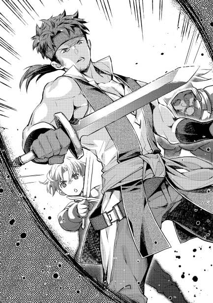
ペイスとしても、舐められない程度に脅すだけのつもりで押し入ったので、この辺が潮時かと剣を収めた。
これは、伯爵の性質を見切ったからだ。越境の件といい、押し入った時の対応といい、伯爵の本質は臆病さにある。平時であれば、慎重な性格として現れ、腰の重たい良い政治家となるのだろうが、人間というものは咄嗟の時にこそ本質が出る。
ネズミの如き臆病な人間を、これだけ脅せば舐められることは無いだろうと、一旦引くことにしたのだ。ペイスとて、本気で隣国と戦争する気などない。そんな暇があるなら、お菓子作りをする方が遥かに大事である。
「......良いでしょう。話だけは聞きましょう」
そう言って、どかりと椅子に座った。周りを、二人の武闘派が固める。ペイスも含めると、丁度平均年齢が落ち着く組み合わせである。
「ふぅ」
椅子に座ったペイス達の様子を見て、ようやく伯爵は落ち着いた。
肝が冷えるとはまさにこのことで、モルテールン家を敵に回すということは、この奇襲が何よりも恐ろしいのだ。首狩りとカセロールが恐れられるのは伊達では無い。
伯爵が改めて席に座り直したところで、ペイスはおもむろに口を開く。
「さて......〝先ごろ〟当家の領地に、御家の兵が事前通告なしに侵入してきました。この事実は当然ご存じでしょうな」
「......何のことか、分かりかねるが」
「しらばっくれないで頂きたい」
「いや、しらを切るつもりは無い。私が兵を動かしたのは事実だが、あくまで当領の中のこと。通常の巡回の一環である」
「では、境を犯した兵など知らぬと？ 証拠も身柄も当家は押さえております故、ここは改めて剣に真偽を問うてもよろしいが」
ペイスが剣に手を掛け、立ち上がる。それを見て武闘派二人も嬉々として剣を抜こうとする。
未だに心臓の音がうるさく感じていた伯爵は、再びの脅しに慌ててそれを押し留めた。
この時点で身柄はまだ押さえられておらず、ペイスのハッタリだということなど、気付きもしない。
「いや、そう早合点されるな。間違いなく山脈の西側を巡回するように言っておるのだが、季節も季節。遭難したという可能性までは、私も否定しないし、熊にでも襲われて逃げれば、もしかすれば御家にご迷惑を掛けるようなことをしたかもしれない。もしもそういう事実があったなら、当家は詫びる用意もある。そう事を荒立てないで頂きたい」
「そうですか。言われてみると確かに、事故の可能性もあります。見ての通り若輩者故、どうにも血の気が多くていけませんね。こういう場はなんとも苦手に感じます」
ペイスの横に立っていたトバイアムは、いけしゃあしゃあと言い放ったペイスの言葉に思わず噴き出したが、人生の大先輩に脇腹を殴られたことで堪える。
「いやいや、勇ましいことは決して卑下することではありませんぞ」
「そう言って頂ければありがたい」
「まあ少し落ち着いたところで確認させて頂きたいのですが、当家の者が、停戦時に取り決めた境を越えたのは間違いないのですかな？」
「はい」
背中が冷や汗でびっしょりになりながらも、伯爵は落ち着きを取り戻しつつあった。
その上で、目の前の少年を測る。
最初に荒事で怒鳴り込んできたことから、恐らく本人が言うように血の気が多いタイプなのだろう。剣筋も確からしいことは察せられたし、そうでなくともモルテールン家と言えば武勲で鳴らした家だ。跡取りが血気盛んな若武者であっても不思議はない。
しかし、一旦落ち着かせようとすれば簡単に落ち着いたことから見て、他人の意見には流されやすい性質のように思える。熱しやすく冷めやすい。他人に惑わされやすく、思い込みが激しいとなれば、典型的な猪突猛進タイプだ。
この手合いは、おだてて機嫌よくさせておき、適当にけむに巻くのが最上か、と伯爵は考えた。
「これは申し訳ない。重ねて申し上げますが、当家としては越境させるつもりは欠片もございませんでした。それがわざわざ次期当主となられる英雄に足を運ばせる事態にまでなった。当家としても出来る限りの誠意をもって謝罪申し上げます」
この伯爵の言葉に、ペイスはとても機嫌を良くした風で、鼻息をあえて荒くして言葉を続けた。
「ふむん。伯爵閣下、誠意ある謝罪といっても具体的にはどうするおつもりか？ こうして僕......いや、俺もわざわざ、わざわざ出向いたわけなのだが」
わざわざ、という部分をあからさまに強調した言葉に、伯爵はペイスを舐めて掛かった。
こういった、傲慢な態度を見せる貴族子弟などは腐るほど見てきたからだ。今までの経験から言えば、この手合いは駆け引きが苦手で、そのぶん即物的なものを喜ぶ性質がある。
「であれば、我々の謝罪も含めて金銭をお支払いするのはどうでしょう。もし御家に当家の者が御厄介になったのなら、その件についても含めてお支払いいたします」
「ほほう......それは良い」
早い話が、賠償金と身代金で片を付けろ、ということだ。予想が当たっていれば喜ばしい提案なはず。
ニヤニヤと、下卑た笑みを浮かべるペイスに、伯爵は自分の読みが正しいと確信した。
舐めるな餓鬼、という反抗心も芽生えてくる。いささか肝を冷やされたが、相手が武力一辺倒の馬鹿となれば、手のひらで転がすなど容易なことだとも感じる。伯爵家の当主として政務を執ってきたのは、自分だとの自負もある。
「しかし......あまり大きな金額は、急にお支払することも難しい。どの辺が妥当な金額になりましょうなぁ」
伯爵は、ペイスに対して交渉のボールを投げた。力量の探りと言っても良い。
身代金と賠償金の相場も、腹積もりは有る。だが、見ればペイスは幼い。交渉事のいろはも知らぬ年頃。ここは、どの程度の知能があるかを測ってからでも遅くない。
「一括で、パーリ金貨三十枚では？」
「それは法外な値段ですぞ」
「ならば二十枚」
「いやいや、相場から言ってもまだ高すぎます」
本来ならば、パーリ金貨で五十〜七十枚程度が相場だろうか。それを分かっていながら、伯爵はあえて首を振り続ける。
別にここで交渉が決裂しても構わないのだ。時間を稼げば稼ぐほど、恐らく軟禁されているであろう部下達が持ち帰る情報量も多くなる。情報料だと思えば、後で多少割増しになる危険があるとしても、ここで急ぐ必要は無い。よほどの好条件でない限りは、食い付くつもりも無い。
「う〜ん、二十枚なら相場だと思うのだがなあ。これ以下に下げるというのも......」
「こちらとそちらでは、相場が大分違うようですな」
伯爵は知っている。神王国プラウ金貨ならば、確かに二十枚でもギリギリ相場の範囲であることを。金貨二十枚というあたりで渋っている少年が、自国の常識に囚われているのだと推察する。他国の金銭相場に疎いのは、未熟な交渉人にはよくある話だ。
そう思ってじっと見ていると、少年が何やらぱっと顔を上げた。
「そうだ、良いことを思いついた。一度に無理というなら、分割というのはどうだろう」
「ほう、素晴らしい発想をお持ちですな」
所詮は子供の浅知恵である。
賠償金の分割という行為自体は、別にそれほど珍しいことではない。この場合、どう分割するかで更に交渉力が必要となるのだ。今までの行動を見るに、目の前の少年がこなせるとも思えない。
そう伯爵は考えた。故に、脇が甘くなってしまった。
「じゃあ、絶対に払える額として、月にゾゾ銅貨一枚」
「ははは、それなら確かに簡単に払えますな。しかし銅貨一枚ずつなど、総額の交渉は脇に置いても、払い終えるまでに何十年かかるか分かりませんぞ？」
「それなら、次の月は銅貨二枚。更にその次の月は四枚にしましょう」
「うんうん、それぐらいなら貧しい当家でも払えましょう」
「じゃあ決まり。初めは銅貨一枚で、一ヶ月ごとに前の月の倍を払う。期間は......二年ぐらいでいいかな？」
「良いですとも。おおそうだ、お互い言った言わないの水掛け論になってもいけませんから、文書も残しましょうぞ。私としても、将来名高い英雄となるに違い無い方と、名前を並べるのは名誉なことです」
「うんうん文書ね。それが良いね」
おおよその相場で、銅貨四千枚で金貨一枚だ。
銅貨数枚を重ねたところで、大した金額になるはずもないと、伯爵は文書を認めた。後でカセロールあたりが出張って来て、ごねられることを防ぎたかったのだ。ペイスが【瞬間移動】を使えると知らないので、帰還を含めて十分に時間を稼げたはずだと思い込んだのもあった。
両者のサイン。
これで無事、身代金と賠償金の交渉は終わりである。
伯爵の館をモルテールン家の面々が出た時、銀髪の少年の顔には輝く笑顔が浮かぶのだった。
酷く寒い日のこと。
屋敷の暖炉には薪がくべられている。
時折パチリと弾ける音と共に、身を焦がしながらも部屋を暖める薪の献身に、この冬一番の感謝を捧げながら、少年と男はお茶を飲む。
「それはそれは、何とも酷い取引をなさいましたね。相手方に同情してしまいそうです。倍に倍にと増やして、最終的な総額でパーリ金貨一万六千枚以上の賠償金とは。プラウ金貨でも五千枚は下りますまい。大店の商店主でもそうそう見たことが無い、桁外れの大金ですね」
お茶で口を湿らせながらも、目上に対する態度を崩さないのは街商人デココ。商談が思いのほか早くまとまった為、自分の店が気になって早めに戻ってきている。
またすぐにでも家畜の受け取りに出かけなければならないのだが、その前に挨拶をとモルテールン家に顔を出したところで、先般起きた事件の話を聞いていた。デココとて一応はこの事件の関係者の端にいるのだから、と。
「僕からすれば、最初に割引価格を提示したのですが、相手がそれで頷かなかった為に止む無く迂遠な手になってしまったという、間抜けな話になります。明らかに相場より低い額でも頷かなかったのだから、初めからこれはまともに交渉しても首を縦に振る気が無いなと感じまして。搦め手で行くしかない場面だったのです。正攻法を向こうが嫌がった為の、止む無きことです」
デココの話し相手は、勿論ペイストリーである。
事の内実を一番理解している人間が説明するのが良いと、カセロールに命じられている。
「それで、相手を騙しにかかったというわけですね？」
「騙すつもりはありませんでした。まず、これ以下のない最低の価格として、銅貨一枚を提示した。これは、とにかく相手が首を縦に振れることを確認する為です。これで頷かなければ、理では無く感情で向かってきているという話ですから、決裂しかなかった」
「確かに。ゾゾ銅貨未満の貨幣は、昔はともかく今はあの国には有りませんね。本当に最低の価格です。それよりも下げることが不可能な金額ですから、そこで頷かないなら、どんな条件でも頷かないでしょう」
「ええ。幸い、それで何とか頷いてくれたので、後は金額を何処まで上げられるか、という交渉になる......予定でした」
ペイスは、熱さで僅かに顔を顰めながらお茶を飲んだ。
デココとしても、歯に物が挟まったようなペイスの言葉には引っ掛かりを覚える。
「予定外が起きたと？」
「金額を釣り上げていくペースについて、最初から一気に上げる交渉などありません。徐々に上げていくことで、何処まで伯爵が譲歩出来るのかを見極めてやろうと思っていました。倍々といったのは、そうでもしなければ金貨五十枚以上の相場に届かないと思ったから。大体の期間として一年から一年半ぐらいまでのどこかで折り合いがつくだろうと考え、とりあえず最初に二年という期間を持ち出して......」
「持ち出して？」
「仕掛けに全く気付かずに、向こうから書類にサインしてしまったのです。父様が出てきて再交渉になるのを嫌がったのでしょうが、いやあ、驚きました」
シレっとした顔で言ってのけるペイスに、デココは身震いのする思いがした。腕にはゾゾと鳥肌が立つ。
これだ。これがあるから、ペイストリー様との交渉は気が抜けないのだという、経験則による実感と内心。
見た目が子供だからと侮り、気を抜いたが最後どこで落とし穴に落とされるか分からない。ふとよそ見をした瞬間に致命傷を負わされかねない猛獣。
一度痛い目を見ているデココだからこそ分かるのだ。件の伯爵も、自分と同じ失敗をしたに違いないと。舐めて掛かって、ほんの少しの手間を惜しんだに違いない。
かつてのデココの場合は敵対していたわけでは無いので、まだ手加減してもらっていたのだと、この話を聞けば分かる。彼の場合は、精々がレーテシュ金貨一枚を丸損した程度。
それでも行商人だった時代には相当手痛かったのだが、さすがに一万枚を越える金貨で負債を背負わされるような話とは次元が違う。もしもこれが自分だったらと思えば、背筋がぞっと寒くもなる。
錯覚だろうが、急に体が冷えた気がして、デココは上着を羽織り直した。
「それは、騙されたとレイング伯も怒るでしょう。力づくででも、無かったことにしようとするのでは無いですか？ 大店の商店でも、それで泣かされたことがあると聞きますし」
「その懸念は当然ありました。だから、早々に債権を余所に売ってしまいましたよ」
「債権を売った？」
「ええ。うちが元を取れるよう、金貨三百枚ほどで叩き売りました」
「一万七千枚弱の債権を三百枚で、ですか。それはそれは。仲介だけでも出来ていれば、私も儲けられたのにと悔しくもあります」
「止めておいた方が良いでしょう。既にことは金銭ではなく政治的な問題になっていたのですから」
賠償金の月払いという負債。この負債を回収する権利を債権と呼ぶわけだが、権利である以上他人に譲渡や販売することが可能である。ペイスは、このレイング伯に対する債権を、速攻でお隣のリプタウアー騎士爵に売り、更にはレーテシュ伯への転売の仲介を行った。そこそこの儲けの出た両者には大層感謝されることになったが、持ちつ持たれつである。
ペイスからすれば、レイング伯が仕掛けに気付く前に手放したい、時限爆弾のようなものだったのだから。
「上手くすれば一万七千枚という欲を脇に置いて、冷静な判断がなされたことは素晴らしいと思います。私ならば、欲をかいて時期を逸したかもしれない」
「こういう時は、無駄な欲はかえって損失を招くものですよ」
デココは、ペイスの冷静さに感心した。
債権に際し、もしレイング伯がごねて、再交渉や債務の無効を言いだした場合。モルテールン家が債権を持っていれば、他家からすればモルテールン家とレイング家だけの問題になる。介入する口実は薄い。軍備をチラつかせて、無かったことにしようとするかもしれない。
だが、これに複数の家が関与し、かつ債権自体が正当な取引の結果で第三者の手にあったならどうなるか。
レイング伯が再交渉をしようにも、第三者を取引額未満の支払いで納得させることは不可能に近い。金貨数百枚以上で買った債権を、元々の相場だから金貨数十枚で再買い取りさせてくれと言ったところで、聞く耳などありはしない。
モルテールン家が債権を抱えていた時ならそれが出来たかもしれないのだから、伯爵家の誰かが、迅速にことに気付けていれば対処出来ていただろう。
また、騙されたから債権が無効だと言い張ろうにも、既に正当な取引を経ていれば、それを立証することも無理だ。
取引に関わって利益を得た貴族やその関係者は、利益が無効になることを嫌がり、こぞって〝債権は正当なものだ〟と言い張るに決まっているのだから。下手をすれば、取引に関わった全貴族を敵に回しかねない。時間が経ち、関わる貴族が増えれば増えるほど、レイング伯にとっては絶望的になる。
伯爵自身がサインした公文書だ。ごねたとしても、レイング伯が明らかに不利になるし、借金を踏み倒そうとした汚名をばら撒く羽目にもなりかねない。
結局、伯爵が傷を最も小さくする方法は、素直に支払うことしかないのだ。事が両家だけの問題でなくなった時点で。
「話が相当大きくなりましたね」
「そうですね。踏み倒すなら、我が国と全面戦争する覚悟が必要になるでしょう。何にしても、既にうちとは無関係なところにある、終わった話です。ああそれと、これは噂ですが、最終的にレイング伯爵の債権は、ブラーム伯爵が手にするようです。ここの家は、レイング伯の息のかかったところからかなりの債務を無理矢理背負わされていたそうでして、その支払いと今回の債権を相殺することで、借金をチャラにするらしいです。大きな収入を当てにしていたレイング伯爵の家中が混乱するのは間違いないでしょう。金目のものを叩き売る家が、幾つか出てくるかもしれませんね。或いは、借金が消えた家に特需が生まれるのか......」
「また儲け話になりそうなお話で、ありがたいことです。興味の湧く話ですので、〝個人的〟に調べておきますし、結果をお耳に入れるよう手配しましょう。しかしブラーム伯爵ですか。レイング伯爵の政敵か何かで？」
「ええ。確か縁戚の一部に我が国の貴族が連なっているとかで、ヴォルトゥザラ王国の中では対神王国融和派の筆頭に挙げられる人物です。うちと向かい合っていることで神王国を敵視するレイング伯とは、外交方針でたびたび衝突していたという噂です。以前の政治闘争でレイング伯達に負けて以来、負債を背負っていたとのこと。ダグラッドの情報によれば、ですが」
「なるほど。既にレイング伯爵に対して負債を抱えている人間に売りつければ、相殺すれば済むから取りはぐれる心配もしなくていいというわけですか。誰が考えたのか知りませんが、考えた人間は大店の番頭でも務まるでしょうね......もしかして、ペイストリー様がそこまで考えておられたので？」
「さあ、どうでしょう」
少年の顔色からは、本当に何も読み取れない。平常心そのものだ。
「そうそう、家畜の買い付けの具合はどうですか。先に話した通り、ちょっとばかり臨時収入があったので、必要があれば今ある程度の前払いも出来るのですが」
「買い付けは順調です。予定通り年明け早々にも、ミルクを出すのを多めに百二十頭仕入れる手配が済んでいます。また今日にもここを離れて、牧場めぐりで順次引き取ってくるつもりです。前払いが頂ければ、その場で買い付け出来るものがあるかもしれないので、頂ければありがたいです」
「ではこれを。両替をしていないのでレーテシュ金貨ですが、三百枚あります。残りの百レットは、ものと引き換えにしましょう」
「......確かに」
ペイス相手にはどこに落とし穴があるか分からないので、預かった金貨もちゃんと確認しておく。
といっても、さすがに贋金を掴ませるような、互いの信頼を無くす行為は無いと信じているので、あくまで念の為だ。数えれば、三百枚間違いなくあった。
「そういえば、ラミトさんの件はどうなりました？」
「ああ」
今回の騒動をややこしくした原因は、モルテールン家の情報を持つラミトが早々に捕まって、どの情報がどれだけ洩れたかが分からなくなってしまったことにある。これが無ければ、隣国兵が情報を掴む前に、無理矢理追い出すことも出来たのだ。
「ラミトならば、そろそろ来ると思いますよ？」
「え？」
「焼き上がったお菓子を持ってくるよう、言いつけてありますから」
迷惑を掛けた罰として、ラミトは関係各所での一定期間の奉仕活動が命じられた。土木作業では肉体的に疲労困憊するまでこき使われ、シイツやニコロの手伝いでは頭痛がしそうなほどの大量の計算処理に追われ、軍務の連中からは朝から晩まで走り回される。
イジメの如き怒涛の業務で、ラミトはモルテールン家の忙しさを改めて実感し、自分がどれほどぬるい考えをしていたかを、心底実感することになったのだ。
そして今、最後の奉仕活動として、ペイスの下で小間使いのような真似をさせられている。
「失礼します」
噂をすれば影が差すようで、甘い匂いをラミトが運んできた。
「良い匂いですね」
「今日がパン焼きの日でして。試作品をついでに焼いて貰ったので、折角なら商売人の意見を聞かせて貰おうかと」
「それは構いませんが、ここのお屋敷の厨房で焼いたのではないのですか？」
「最近は試作の味見を狙う人間が増えてしまったもので、お菓子作りをしていると屋敷の連中の仕事の手が止まって邪魔だと怒られたのです。ほとぼりが冷めるまで、好き勝手には使えません」
「ははは、それでパン焼きの日にはパンのかまどを使うと。では、今日こうして味見させてもらえる私は幸運ですね」
「そうですね。ああ、ラミトも折角ですから試食して、意見を聞かせてください」
「はい」
小間使いのような真似をさせられているラミトも、ペイス達のお茶のお代わりと共に自分のお茶を準備する。
お菓子らしきものを薄く切り分ければ、それで準備が整う。
「これは、一体なんでしょう？」
「シュトレンというお菓子です。冬の間に日持ちのするお菓子を作ろうとして、試作したものですね」
切り分けられた数本のスイーツ。甘い香りの漂うそれは、一見すると菓子パンのようにも見える。ただし、パンとは全く別物だ。
砂糖と、ひいたナッツを混ぜ込んだ生地に、お酒に漬けた果物やドライフルーツを加え、スパイスを利かせて成形する。焼き上げた後はバターを使いながら砂糖で周りを覆う。
重さにして大体一キロから二キロほどある、ずっしりとした大きなお菓子だ。
ドイツなどではクリスマスシーズンに家庭料理として作られ、日本のおせちのように、何日もかけて食べる。
十月ぐらいに作ったシュトレンが年を越すこともざらにあるというほどで、大変日持ちのするお菓子として有名である。
「これはまた、美味しそうですね」
「是非、忌憚のない意見を聞かせてください」
ペイスが毎週コツコツと焼きためたシュトレンは、試作の意味合いもあって全部で三種類。
一番シンプルなプレーンのもの、ナッツをたっぷりと混ぜたもの、蒸留酒に漬けて戻した、レーズンやオレンジピールといった、ドライフルーツ入りのものというラインナップ。
デココは三つをそれぞれ一口ずつ食べ、じっと目を瞑る。深呼吸を一度したところで、ペイスに目を向けた。
「日持ちがする、とおっしゃいましたか」
「ええ」
「大変美味しい。今までもペイストリー様に砂糖やナッツ類を卸したことがございましたが、それがここまで完成された料理になるとは思ってもおりませんでした......確認ですが、これはうちの商店で扱わせて頂けるものと思って構いませんね？ いや言葉を変えましょう。その確認の為に私に食べさせましたね？」
「ご名答。来年の秋以降、冬に手の空く領民の内職にならないかと考えています。その反応なら、明日以降準備が進められそうですね」
「......日持ちがする美味しい菓子。私どものように行商を経験した人間なら、この菓子の意味が分かります。流通に大きな革命が起きるかもしれませんね」
行商人にとって。いや、街から離れて行動する機会のある人間にとって、保存食というものは切っても切り離せない友である。
とりわけ冬の時期は、野山に分け入って食料を調達するにも限度がある為、保存の利く食料を持ち運んで旅程での飢えを耐えることが多い。
この保存食。もっとも神王国でポピュラーなものは、硬焼きのパンと塩漬けの肉である。どちらも食感が硬く、保存の為に味が犠牲になっている為、長く食べているとかなりのストレスになりがちだ。
このストレスが馬鹿に出来ないということは、行商を経験したデココはよく知っている。行商人が辛い職業だと言われる理由の一つが、この食事の貧弱さにあるのだから。塩辛い干し肉だけを食べ続けて、体調を壊す者も多い。
行商人が辞める理由や避けられる理由の一端が、この保存食を強要される環境。
逆に言えば、食事が快適なものになるならば、多少なりとも行商人を辞める人間は減り、僅かながらでも志す人間が増える。
この僅かな差が徐々に積み重なっていけば、いずれ大きな差となって現れるだろう。その時の中心地はモルテールン領である。
「そこまで大それたことは考えていませんよ。いずれ土木工事も落ち着けば、冬の間に暇になる人間も出るでしょう。その時に、手慰みにでも作れるものがあれば、と思っているだけです。お菓子作りは楽しいですから、娯楽にもなりますよ？」
「娯楽ですか。そう思える人間が、どれだけいるかでしょうね」
「やってみれば、楽しさも分かるはずです......ところで、ラミトはどう感じましたか？」
デココは、そう言えばラミトもいたのだと思いだす。
今後のシュトレン販売について計算を走らせていて、存在を完璧に忘れていたと、苦笑いだ。
突然問いかけられたラミトにしても、咄嗟に上手い言葉など出てこない。
「......美味しいです」
「他には？」
「んと......甘いです」
案の定、碌な言葉が出てこない。
軽く頷いたペイスは、三つのシュトレンを並べて、問いかける。
「なるほど。ではラミト。このシュトレン、一つ大きな特徴があることに気付きませんでしたか？」
「特徴？」
「これが先々週焼いたもの。こっちが先週焼いたもの。これは先ほど出来たばかり。ラミトはどれが一番美味しいと思いましたか？」
「......これです。先々週焼いたもの」
「そうでしょう。シュトレンというお菓子は......時間が経てば経つほど、美味しくなる。だからこそ、これらは未完成品なのです」
「え!?」
クリスマス前に準備されることの多いシュトレンは、フルーツの風味であったり、お酒の香りであったりといったものが、日を追うごとに生地へと移っていく。この熟成して美味しくなることこそが、シュトレンという菓子の特徴であり、好まれる理由ともなっている。
今日よりも明日の方が美味しいとも言われ、クリスマスシーズンには、薄くスライスされるシュトレンの味が、日毎に変わっていく様を楽しむ家庭も多い。
「ラミトが何を焦っていたのか、色々と調べました」
「......ご迷惑をお掛けしました」
「今のラミトには足りない物が多い。それを自分で分かっているのは良いことです。ただ、それを埋めようと躍起になり、足元がおろそかになっては意味がない。焦っては、結局のところ美味しい部分を逃してしまうことになります。このシュトレンのようにね。......少しずつ、少しずつ、じっくりと成長すれば、いずれ大きな成果に結びつく。そのことは、今回の件で良く分かったはずです」
「はい」
傍でこのやり取りを聞いていたデココは、いささか大きすぎる成果になったようだが、と心中で呟く。神王国広しといえど、銅貨から交渉を始めて金貨の山をもぎ取ることが出来る者など、ペイス以外にいようはずもない。
そういう意味では、ペイスのシュトレンは桁外れだ、と言いたくなった。
デココは美味しい菓子を食べながら、ラミトが年下に諭される光景を見続ける。
「焦らなくても、食べ頃になるのを待ってくれている人もいます......サーニャとかね」
「ふぇぁぉうゲホッゴホッ!!」
ラミトが好きなのはサーニャである。という調べが終わっていることを暴露されたことで、年上の少年は盛大に咳き込んだ。
狼狽するにもほどがある。
「バラモンドが調べたところ、サーニャは自分が大人な女になるまで、男を作らないと決めているそうです。〝誰か〟さんに告白された時、どちらも子供じゃ駄目で、せめて自分が大人にならないと、と思ったとか。あえて改めて忠告します。今は焦ることなく、目の前の仕事に真剣に向き合うことです」
「はいっ!!」
今まで迷惑を掛けたと悩んでいたことが許された瞬間だった。
毎日拷問かと思える仕事をやらされ、泥のように眠る日も、これで終わりと告げられる。
「年明けてのち、ラミトは聖別の儀を受けることになります。その結果がどうあれ、成人したのならうちで雇うことは確定しています。余所の紐のついていない、うちの事情をよく知る、基礎教養のある人材は、幾らいても良いと思っていますので」
「ありがとうございます」
「ついては、春より一つ仕事を命じます」
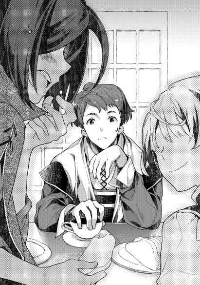
「仕事、ですか」
「ええ。ダグラッドの部下として、周辺諸領の恒常的な情報収集任務です。今回の件でラミトは分かったと思いますが、うちは日を追うごとに余所からの視線が強まっている。せめて周りの情報ぐらいは、常から集めておかねば、いざという時後手に回ります。この、日頃からの情報収集の外務を、ラミトに一任するつもりです。その働き如何で我が家の浮き沈みが掛かる、重要な任務となりますが、焦りを自重出来るなら、きっとラミトなら果たせます」
「お、おお、おわ、分かりました」
にこりと笑ったペイスの笑みに、ラミトはどこかぎこちなさの残る笑顔を返す。
焦るな、と言われた矢先の重要任務。どうしても気負いそうになる気持ちを、ラミトは必死に抑えようとする。焦るな、落ち着け、と自分に言い聞かせていく様を、成人組二人はじっと暖かい目で見守る。
しばらくすれば、ようやく気持ちも落ち着かせることが出来た。
ただし、それは一瞬で。いや、一言で崩されてしまうが。
「ちなみに、春からはデココの弟子として他領に出入りします。サーニャの同僚になりますね」
「ふごぉぼぇえええ!?」
情報収集任務で、馬鹿正直にモルテールン家の従士ですと言えば、スパイとして真っ先に捕まる。
だから、今回の失態を理由に家を追い出され、家出したところをデココに拾われる、という隠蔽情報が用意されていた。
ラミトは今後、必死で家出息子を演じなければならない。家出した結果としては、何とも皮肉なことになったわけだ。
「まあ、それは早くても春になってのこと。急ぐことでもありませんよ。まずはそのお茶を、飲み干してしまってからですね。お菓子の方も、しっかりと味わって意見を聞かせてください」
ペイスにそう言われ、また勧められたこともあって、ラミトは菓子を口にする。
甘く、それでいてどっしりと腹にたまるその味は、優しいフルーツ風味のそれであった。
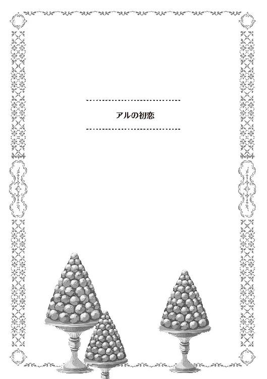
「アル、準備は出来たの？」
「ああ」
アーラッチ＝アフーノフは今年十三歳になる。
父親が勤め先の主人の不興を買って、クビになってから数年を母の実家で過ごしてきた。その間は居候の身分であった為、非常に肩身の狭い思いをしてきたのだ。
それが先日。ついに父親が従士として勤める先を見つけたという。まとまった収入もあり、住める家も用意出来たからと、家族を呼び寄せることになった。勿論アルも呼ばれた家族に含まれている。
勤める先は、モルテールン家。不毛の地として知られるモルテールン地域を拝領し、モルテールン家を創設したという新興の貴族家。
そして今日、いよいよ初めてモルテールン領に引っ越すことになっている。
母親に急かされながら、馬車に荷物を積み込む。
父親が手配したという馬車は、結構立派な馬車だった。母の実家に対しての見栄もあるのかもしれないと、アルは感じた。何せ、お調子者な性格をした父親なのだと、よく知っているからだ。妻の親族に良い恰好をしたいが為に、余計な出費を重ねるぐらいは、やりそうな父である。
「カリンも荷物を積み込んだか？」
「うん、大丈夫。全部乗せたよ」
アルの妹も、馬車に荷物を積み込んだ。
居候の貧乏所帯だった為に、女の子だというのに荷物が布袋一つに収まってしまう。幾らまだ幼いとしても、これは少しばかり寂しい。
と言いながらも、アルだって大差がない。肩から背負う形の布袋一つ。それで荷作りが済んでしまったのだから。
母の実家からモルテールン領までは、馬車で十二日ほどの行程。余裕を見て十五日分の備えをしての出発になるが、途中で父と合流する予定になっている。
初日や二日目は、まだ気持ちが興奮の途上にあった。妹にしてみれば物心ついて初めての旅だし、アルにしても馬車での旅路は生まれて初めて。
ところが、初めて尽くしの興奮も、五日も過ぎるころには飽き飽きしてくる。
馬車がガタゴト揺れればお尻は痛くなるわ、足も碌に伸ばせない車内で体が強張って変に凝ってくるわ、妹がぐずり始めて不機嫌になるわ、眠りが浅くなるせいで気分が悪くなるわと、相当に疲れる。
十日も過ぎたころになると、もう疲労が誰の目にも明らかになる。
鍛えているアルですら疲れるのだ。妹や母などは、ずっと疲れた様子でしゃべることすら稀。食事ものどを通らず、来る前と比べるとずっとやつれたようにも思えた。
「わはは、ぶひゃひゃひゃ、どうやらアルも疲れたらしいな。ひでえツラだぞ」
そんなだから、合流したとたんに能天気に馬鹿笑いする父親にはイラっときた。
こういう無神経さが父親の欠点だと知っていたはずなのに、無遠慮な態度には腹も立つ。
「うるさいな。親父も久しぶりの息子に言うことぐらいあるだろ」
「言うこと......お前、小さくなったか？」
「普通そこは大きくなったな、だろうがっ」
「がはは、いやまあ何だ。背のでかさはともかく、存在感ってやつか？ 今の主人に仕えるとだ、どうしてもこう、信じらんねえことばかりが起きてよ。世の中は上には上がいるってのを痛感してな。子供とはとても思えねえ子供ってのを目の当たりにするとだ。年相応のお前が、ずいぶん可愛らしく見えちまったのよ」
アルは十代。それもまだまだ四捨五入ならば十になるような年であるから、子供といっても差支えが無い。
ただし、もうそろそろ成人してもおかしくない年ではあるし、体つきも同い年の子供に比べれば一回り大きく、見た目だけで言えば大人と大差ないのだが。
自分でもそんな自負のあるアルは、子供扱いされたことに尚更怒りをあらわにする。
「子供扱いするなよ。これでももう十三だぞっ!!」
「あれ？ もうそんな年だったっけか。子供ってのは育つの早えなあ」
「だから、もう子供じゃないって言ってるだろう!!」
人一倍体つきが大きいのは、父親たるトバイアムも同じことであり、我が子の頭を遠慮なく撫でてやった。
そうしてみれば、確かに撫で心地も違うし、背が格段に伸びていると、父親も息子の成長を実感する。
「お前なんて、カセロール様のお子様に比べれば、まだまだだな。ぐひゃひゃ」
迷惑そうに父親の手を払いのけたアルは、いい加減馬車に乗って移動するのも疲れたと苦情を言う。
「なに、もう少しだよ。あの山を越えたら、モルテールン領。新村で一度休憩したら、ザースデンまで案内する。今から心の準備をしておけよ」
そんな父の言葉に、終わりが見えたと元気を取り戻すアル。
だが、モルテールン領に入ったアル達は、途端に落胆する。目にする景色が、代わり映えのしない物だったからだ。
どこにでもあるような麦畑。刈り取りが終わったところもあるらしい。多少実りは良さそうな様子だったが、ちょっと豊作だったぐらいなら、今までも母の実家のあたりではよく見られた光景だった。
農民の皆の顔が明るいのは、おそらく税率が低いからだろうかとも考えるが、モルテールン領のような僻地で高い税率なら皆逃げ出すだろう。そう思えば、当たり前の光景にも見えてくる。
「何だか、普通だ」
「おう、そうだな。普通の農村だ」
「家畜はいないの？」
「今はまだ少ない。これから増やしてく予定らしいぞ」
家畜もまだ碌にいないと聞かされて、一家は不安になった。
モルテールン領のことは、仕官が決まったと連絡が来た時から調べたのだ。幸い、連絡と同時にかなりまとまった額の仕送りが来た為、母の実家が喜んで調べてくれたというのもある。
その結果は、芳しくなかった。
モルテールン領は、不毛の大地である。
そう言われて久しく、ここに手を出せば文字通り砂漠に水を撒くような苦労をし続ける羽目になると、貴族の間でも忌避されてきた土地なのだという。
ここに、大戦の英雄と呼ばれたカセロール＝ベニエが騎士爵位叙勲と共に移住。領地経営を始めたらしいという情報が手に入った。
如何に英雄と呼ばれた稀代の魔法使いが領主とはいえ、モルテールン地域がまともな領地になるのは不可能。それが世間一般の評価だそうだ。
事前にかなり酷い噂を聞いていただけに、比較的普通の農村を見て、拍子抜けしたのは事実だ。案外、まともで良かったと。
ただし、内実がどうかなど、分かるわけもない。
つい最近まで家畜を碌に飼っていなかったという話なら、領民はかなり貧しい生活を強いられている可能性があった。
或いは、領主の稼ぎにおんぶに抱っこという、完全依存型の生活なのかもしれない。そうだとすれば、何時資金繰りが悪化して貧苦にあえぐか分かったものではない。
「大丈夫かしら」
母の呟きは、皆を代表する意見であった。
「あたし、あの子に聞いてみる!!」
そう言って馬車から飛び出したのはアルの妹。
よほど馬車の中が嫌になっていたのだろう。既に本村に入り、目的地もすぐそこだというのに駆けだした。
「こらカリン!!」
「俺が行く」
慌てて追いかける羽目になったのはアル。
といっても、それほど距離があったわけではない。すぐ近くにいた、アルと同い年ぐらいの女の子の傍に駆けて行った妹。その小さい体を、持ち上げながら少年は妹を叱る。
「いきなり馬車から飛び出したりしたら、危ないだろ」
「......ごめんなさい」
兄に怒られ、シュンとする童女。馬車から飛び降りることが如何に危ないことかを懇々と諭される中、うなだれてしまった。
これに、いきなり幼女に駆け寄られ、突然巻き込まれた少女の方は面食らうばかりだ。小さい子が駆け寄ったかと思えば、同い年ぐらいの男の子が追いかけてきて説教を始めた。何事かと不思議がるのも当たり前。
「あんたたち、見ない顔ね」
少女から声を掛けられたことに、アルはびっくりした。
というのも当然で、アルは今までずっと居候の部屋住みだった為、積極的に女の子とコミュニケーションをとる経験も無かったのだ。
それ故、割と緊張しながらの返答になった。顔を赤くして、妹を抱えながらも手汗をかいているのは、如何にも初心な少年といった雰囲気だろうか。
少年の母親譲りな顔立ちからしても、紅顔の美少年に見えるから得な顔立ちだ。
「こ、こんにちは。えっと、親父......じゃない、父のトバイアムに付いて今日引っ越してきました。アーラッチ＝アフーノフといいます」
「何もそんなに緊張しなくてもいいのに。あたしはジョゼフィーネ。ジョゼでいいわ。こっちの子は妹さん？」
「ええ」
「カリーナッチ＝アフーノフです。カリンです。こんにちわぁ」
「あら、挨拶も出来るいい子じゃない。こんにちは」
声を掛けてきた少女は、妹の頭を撫でる。
ジョゼと名乗った子のそんな様子を、アルはじっと見ていた。
いや、見惚れていたというのが正しいだろう。
少年は思う。近くで見ても、やはり自分と同い年ぐらい。違っていても一〜二歳前後するぐらいだろうと。
少女の姿かたち。少し茶の入った銀髪を伸ばし、後ろで束ねている髪型。手入れが行き届いているらしく、サラリとした綺麗な髪は櫛を丁寧に入れたのか癖も少なく、艶がある。
顔立ちも、一言で言うなら美人系。年相応に光沢すら感じる瑞々しい白い肌。長いまつ毛とぱっちりとした目が明るい雰囲気を醸し出す。
綺麗に左右の整った鼻筋に、少し小さめの唇。妹と会話する度に動く麗しい唇に見とれそうになる。
どこか勝気な雰囲気がするものの、どう見ても良家の子女に違いない。
アルは、体中にカッと熱くなるものを感じた。
胸がドキドキと鳴り出し、顔に血が上っていく様を自覚する。
「お〜いアル、カリン、いきなり走ってどうした？ ってお嬢。こんなところでなにを？」
「視察よ。今日トバイアムが家族を連れてくるって言ってたから、どんな人たちか見に来てたの」
「じゃあ丁度良いな。お嬢、向こうにいるのが俺の嫁さん。そいで、こっちの二人が俺の息子と娘。アルとカリン。まあ仲良くしてやってくれ」
「自己紹介はさっきしてもらったわ」
「そっか。アルにカリン、この方が、俺の仕える主人の娘。ジョゼフィーネ様だ。失礼かますんじゃねえぞ」
「大丈夫よ。失礼な態度はトバイアムで慣れてるから。親に似てない良い子達ね」
「げひゃひゃ、そう言われると辛えなあ。ぶひゃひゃひゃ」
「じゃ、あたしは帰るわ」
「ありゃ？ えらくそっけない」
「サボリ......じゃない。休憩しているのがお母様にバレたら、食事の一品を抜かれるの。気付かれないうちに戻らないとね」
行動的な性格のジョゼは、言うが早いか身を翻して屋敷に戻った。
その後姿をぼーっと見ていたアルは、一言呟く。
「......親父」
「ん？」
「俺、ここに来て良かったかも」
夏の暑さも感じる季節。
アーラッチの周りだけは、春の予感が漂っていた。
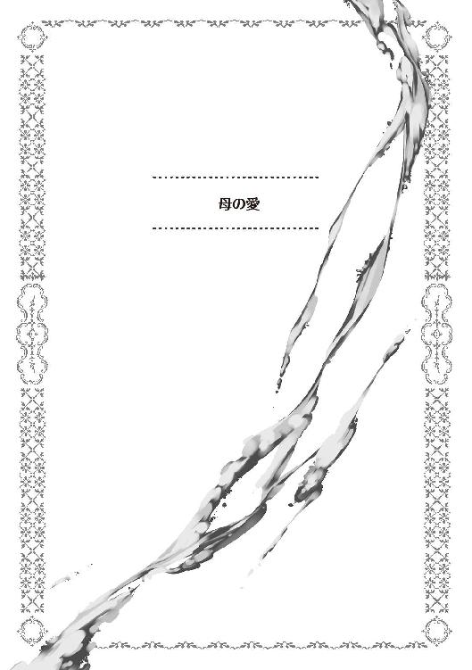
まだペイストリーが五歳だった頃の冬。
体が出来上がっていないどころか、まともに走り回ることすらたどたどしい年ごろなのだが、この少年については無関係なものでもある。
既に父親から剣の手ほどきを受けていることもあり、元気いっぱいといった風情。悪ガキ仲間のマルクやルミと共に、毎日親を困らせていた。
だがしかし、如何に優れた才気を持っていようと、防げないものもある。
幼い子供が必ず罹る、流行り病もその一つ。
「う〜」
ベッドに寝かされているペイスは、薬草を顔中に塗られ、ツンと鼻につくような刺激臭と共にいた。
顔の顎のあたりが腫れ上がり、発熱と共に頭やのどを痛みが襲う。
現代でいうところの、おたふく風邪のような症状。
医療技術が未熟なところでは、この手の幼少期の発熱で障害が出たり、或いはそのまま亡くなるケースもある為、侮っていいものではない。ペイスは今、文字通り死の危険に晒されているのだ。
「フルーツが食べたい......」
熱に浮かされながら、呟く少年の言葉。
彼の少年からすれば、のどが痛くて碌にものを食べられない中、多少なりとも食べられるのが、さわやかな果物の類。幾ら病人食だからといっても、パン粥や麦粥のようなものすら腫れ上がった喉には辛い。いつか食べた気がする、食べなれた果物の一つも欲しくなる。
「ペイスちゃん、何か言った？」
そんな少年の言葉を、傍で看病していた母が聞き返した。侍女や侍従に任せれば良いものを、自分が看病すると言って聞かなかったアニエス。
なまじ普段は手のかからない息子なだけに、世話を焼ける今こそ、精いっぱいの世話を焼こうとしていた。
「果物が食べたい......冷たくて甘い果物。ミカン、モモ、リンゴ......」
アニエスは、聞いたこともない単語を並べられて戸惑う。恐らく熱に浮かされているせいだろうが、どの名前も聞いたことが無いものばかり。
それでも、うわごとでも食べたいというほどに欲しているのなら、是が非でも食べさせてやりたい。そう、母親として思った。
「あなた、少しお願いがあるの」
だからこそ看病を他人に任せ、夫に頼み事をすることとなる。夫は執務室で仕事をしていたが、訪ねてきた妻を邪険にすることもなく迎え入れた。
「お前から頼み事とは珍しいな」
「ペイスちゃんのことなのだけれど、果物が食べたいってうなされてるの。私、果物を手に入れてあげたいのよ」
「この時期にか？」
冬の時期といえば、果物が最も手に入りにくい季節。
少なくともモルテールン領では、ベリー類も採り終わってフルーツの類は一切手に入らない状況になっている。
この季節の食料事情などはどこも大して変わらないので、近隣諸領を巡っても同じような状況に違いない。
カセロールがわざわざ尋ねたのも、ここら辺の事情を言いたかったからだ。
「難しいのは分かっているのだけれど、ペイスちゃんが熱でうなされながら欲しがっていたのよ？ 何とかしてあげたいのだけれど」
「......王都に行けば、王家献上品の準備ぐらいはあるかもしれない。いや、間違いなくある。今度の王妃陛下の生誕祝いに際して、準備も進められているだろうからな。余裕を見て用意している商家もあるだろうから、そこに当たれば手に入れることは可能だと思う」
「じゃあ手に入るのね」
「ただし、金がかかる。最低でもプラウ金貨二十枚は覚悟した方が良い」
モルテールン家は、別に裕福な家というわけではない。
領地経営については赤字が続いており、カセロールの魔法による臨時収入でなんとかやりくりしているような状況。突発的な金貨二十枚の出費など、そう簡単に捻出出来るものでもない。
「麦の買い付けを遅らせる......いや、それは出来んな。時期がずれれば手に入らなくなる可能性がある。とすれば、道路の補修費用......これも無理だ。道路が荒れれば、行商人が来なくなる。領民を困窮させるわけにはいかない。二十枚......難しいな」
父親たるカセロールにしても、息子がうわ言で呟くほどに欲するなら手に入れてやりたいとも思うが、無い袖は振れない。
それに、領主として、領地経営に致命的になりかねない私費流用は絶対に出来ないのだ。
金策に悩む夫を見ていたアニエス。
ふと、自分の胸元に目が行く。
「あなた、これを売って代わりに果物を手に入れることは出来るかしら」
「お前、それは実家から唯一持ってきた大事なネックレスじゃないか!!」
アニエスは元男爵令嬢。
宝飾品を幾つか与えられていたのだが、駆け落ち同然にモルテールン家に嫁ぐ際、そのほとんどを実家において来ていた。
その当時、自分が身に着けていたことで持ち出せた、唯一といっていいまともな宝飾品が、今も身に着けているネックレス。
実家からの援助があり得ないアニエスにとってみれば、自分が自由に出来る数少ない資産。自転車操業の領地経営から考えれば、これっきりと言っても過言ではない。
「......ペイスちゃんの為ですもの」
母の決意は曲がらない。
アニエスの頑固さをよく知るカセロールとしても、説得することは端から諦めている。
「分かった」
結局、アニエスからネックレスを預かり、それを持って王都に飛んだカセロール。大きな商店を一つずつ回って、何とか目ぼしい果物を買い付けることが出来た。冷暗所のような特別な保存場所を占有していたものだけに値が張り、ネックレスの代金が全てこれに消える。
果物を受け取ったアニエスにしても、とにかく息子に食べさせてやりたい一心でペイスの部屋に急いだ。
苦しそうにしている息子を見て、アニエスとしても助けてやりたいと強く願う。
「ペイスちゃん、食べられる？」
「んぁ？ ブドウ？」
ベッドの上で寝ているペイスの口元に、母が皮を向いたブドウを持っていく。
熱の為に夢うつつになりながらも、ペイスは欲していたものを無意識に嚥下する。腫れた喉に少しつっかえながらも、冷たく爽やかなフルーツが、心地よい。
「美味い......」
息子が呟いた言葉に、母親は安堵した。
熱が出て倒れている時は心配していたが、食欲が出てくれば大丈夫と、快方に向かっていくことを願う。
こういった熱の時は、食が細ることで体力を落とすのが一番拙いと言われているのだ。
そして数日後。
献身的な看病の甲斐もあってか、屋敷の庭を元気に走り回るペイスの姿があった。
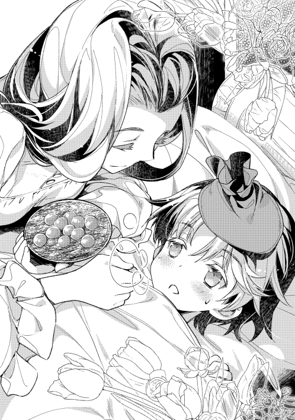
父親に剣の稽古をつけてもらうと、張り切って動き回っている。少し心配そうに様子を見るアニエスの姿もあり、彼女の雰囲気は明るい。
愛すべき息子が元気を取り戻してくれたことに、何よりも喜びを感じていた。
そんな彼女に、侍女が声を掛ける。
「奥様、変わった首飾りをしておいでですね」
「うふ、そうでしょう」
モルテールン騎士爵夫人の首元には、いつもの煌くような宝石とは違う、どこか素朴な飾り。木造りの意匠に、色を付けてある首飾りだ。
「ペイスちゃんが手作りのネックレスをくれたのよ。看病の御礼だって。いつか、もっと綺麗なネックレスをプレゼントしてくれるんですって」
「じゃあ、坊ちゃまは奥様のネックレスがどうなったのかをご存じ......いや、まさか。あのお年でそこまで気遣いが出来るとも思えませんね」
「ふふ、どうなのかしらね。でも、ペイスちゃんなら、いつか本当に素敵なネックレスを贈ってくれるかも」
寒い冬。
それは暖かい春の訪れを予感する季節でもあった。
この本が出るときには、恐らく毎日暑い日が続いているのではないかと想像しながら書いています。
無事に四巻が出たことを、関係各位並びに読者の皆様に感謝します。皆さんの支えがあってこそです。
四巻が出るタイミング。多分夏真っ盛りではないかと思うわけですが、学生だと夏休みシーズンになっているのではないでしょうか。
作者などは、夏休みの読書感想文を書くのに、いつの間にか感想文そっちのけで読み耽り、肝心の感想文のことを忘れてしまっていたことがあります。
この本を手に取り、読書感想文を書こうなどという奇特な人がもし居られたならば是非、私にも感想文を読ませてください。
さて、今巻のお話では、ついにレーテシュ伯が結婚します。
何故か一部の読者には熱烈な人気だった彼女も、独身を卒業。この世界、独身者に向ける目が大変厳しい世界なので、彼女自身も一安心といったところではないでしょうか。
ペイストリーの周りにいる人間は、意外と独身者も多い。従士長のシイツや、親友たち二人。或いは、ラミトやジョゼ。
彼女、彼らがどういう出会いをし、どういう恋愛をし、どういう結末を迎えるのか。
作者的には、こういうことを考えているときが一番楽しいわけです。
何故か一部の読者には大変人気があったレーテシュ伯。是非とも幸せになってほしいと思いつつ、プロットを練っています。
みなさんの応援があれば、もしかしたらシイツにも素敵な恋人が出来るかも？
どうか今後とも、ご支援くださいますようお願い致します。
平成二十八年六月吉日 古流望
著者プロフィール
古流 望
Koryu Nozomu
六月に人生初の入院を経験。健康が大事だとつくづく思います。そして何より、退院後に食べたチョコレートケーキがとても美味しいと実感出来ました。
心を癒すお菓子のような小説を書きたいと、日々奮闘中。
珠梨 やすゆき
Syuri Yasuyuki
今回の挿絵は全体的にアクション色が強めで、終始ノリノリで作画していました。
新キャラクターも多く登場し、今後の展開がますます楽しみです！
おかしな転生Ⅳ 家出息子はフルーツ味
2016年９月１日発行 ver.1.0
著 者 古流 望
発行所 TOブックス
〒150-0045 東京都渋谷区神泉町18-８
松濤ハイツ２Ｆ
03-6452-5678（編集）
0120-933-772（営業フリーダイヤル）
Ⓒ2016 Nozomu Koryu
※無断で複製・複写・データ配信などをすることは、かたくお断りいたします。
本電子書籍は下記にもとづいて制作しました
おかしな転生Ⅳ 家出息子はフルーツ味
発行日 2016年９月１日 第１刷発行
本作品の全部または一部を無断で複製、転載、配信、送信したり、ホームぺージ上に転載することを禁止します。また、本作品の内容を無断で改変、改ざん等を行うことも禁止します。
本作品購入時にご承諾いただいた規約により、有償・無償にかかわらず本作品を第三者に譲渡することはできません。
本作品を示すサムネイルなどのイメージ画像は、再ダウンロード時に予告なく変更される場合があります。
本作品は縦書きでレイアウトされています。
また、ご覧になるリーディングシステムにより、表示の差が認められることがあります。